| 灼眼のシャナ 19 | |
| 高橋弥七郎 | |
| KADOKAWA / アスキー・メディアワークス (2013) | |
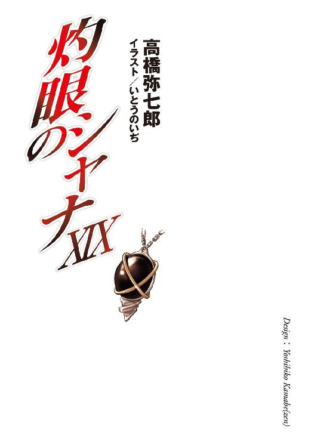
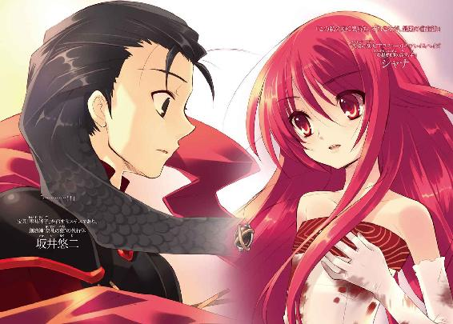
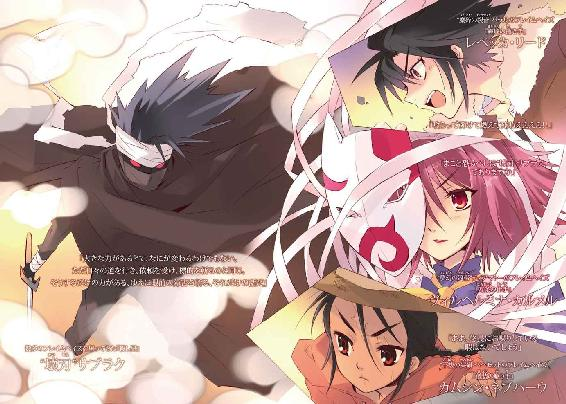
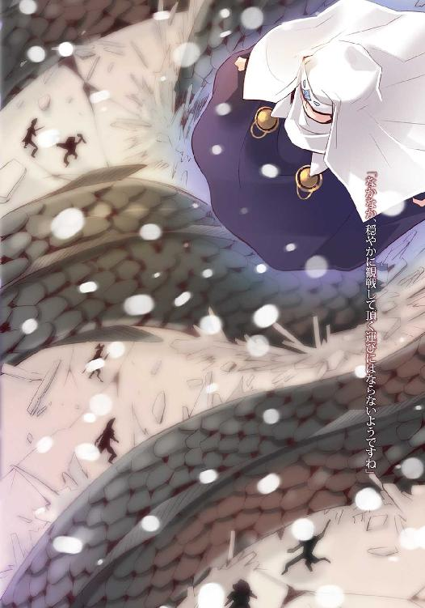
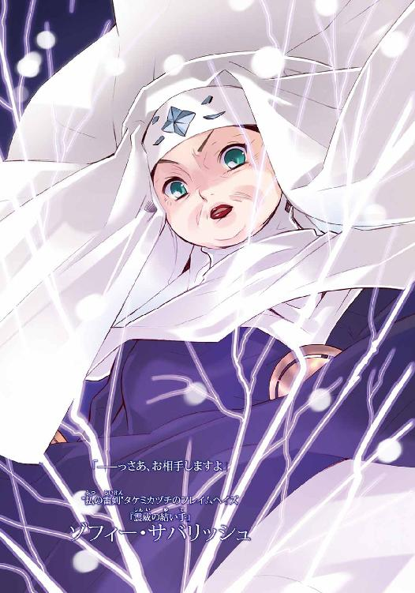
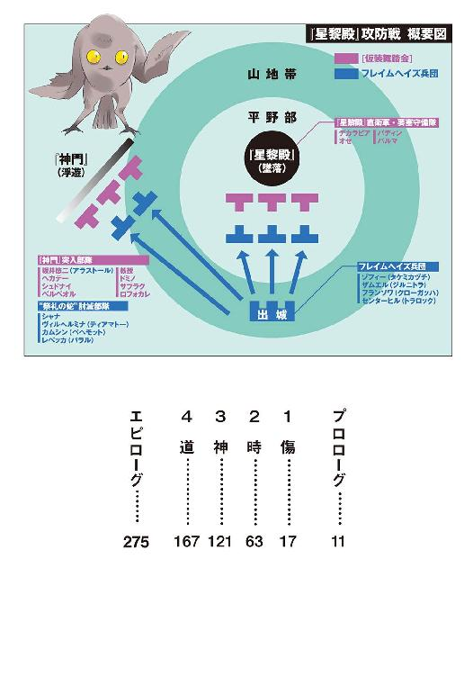
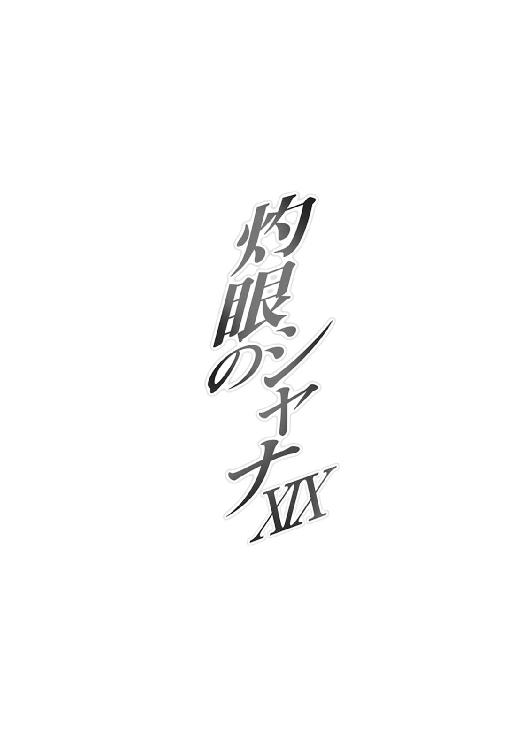
本書（電子版）に掲載されているコンテンツ（ソフトウェア／プログラム／データ／情報を含む）の著作権およびその他の権利は、すべて株式会社アスキー・メディアワークスおよび正当な権利を有する第三者に帰属しています。
法律の定めがある場合または権利者の明示的な承諾がある場合を除き、これらのコンテンツを複製・転載、改変・編集、翻案・翻訳、放送・出版、公衆送信（送信可能化を含む）・再配信、販売・頒布、貸与等に使用することはできません。
プロローグ
俺には、他の〝紅世の徒〟らのように明確な欲望、目指す先がない。両界の狭間を超えたのも、故郷たる〝紅世〟に嫌気が差したからではない。ただ、別の世界があると聞き、行ってみるか、と気紛れに思っただけのこと。そこになにかを求めていたわけではない。
「それは......それは貴方が生来、強い力を持っていたからこそ、言い得るのです」
新天地を踏み、僅か暮らす内に、どうにか己が身を適応させる方策も見出した。別段、その戦法を好んだわけでも、望んだわけでもない。在り様を現した、単なる結果に過ぎない。ゆえに、愉悦もなければ不満もない。それは今までと変わらぬ、己なのだから。
「他に扼されず、己で在り続けられるのは......無自覚な傲慢とは思いませんか？」
物が在る、という世界で多少なりと興味を引いたのは、剣。過剰な執着こそないが、物品としての率直さが、俺の好むところに合致した。何らかの依頼を果たし、代償としてそれを受け取ってゆく内に、いつしか俺は『殺し屋』と呼ばれるようになっていた。
「剣は、振るわれるための威力を鞘の内に隠し持つ存在......貴方に、そっくりです」
そんな日々の中、小さな、渡り来た同胞らの中でも飛び抜けて小さな、蝶に出会った。獲物を勘違いから取り逃がしたばかりだった俺は、腹いせとして、近辺で行き逢った戦いに割って入り、道具を薙ぎ倒した。そのときは、ただそれだけのことだった。
「力で存在で、他者を圧する強大なる〝紅世の王〟......私は知っています、貴方を」
戦いとすら言えない一撃の後、小さな蝶が付いてくるようになった。どうやら、礼として差し出した剣──俺の趣向について知っていた──を、俺が受け取らなかったためらしい。少なくとも、自分ではそう言っていた。俺は、わざわざ切り捨てるも面倒、と放っておいた。
「無関心、なのですね......気に留めることも、追い立てることも、知ろうとさえしない」
小さな蝶は、それなりに長い同行の間、語り続けた。俺の、誰に向けてのものでもない、まして答えとして返されたわけでもない、漫然たる内心の吐露として零れる声にも、呆れるほどの執拗さで応じ続けた。多くは自分の小ささ、より多くは俺の大きさを、執拗に。
「私に在るものは、あまりに小さくささやかな......他者の夢を、他者の力で制す術だけ。貴方のように大きく強ければ、誰も彼も、己という渦に巻き込むことができるのでしょうね」
俺は、小さな蝶によって、俺以外から見た俺というものを初めて知った。俺の在り様、俺の力、俺の性癖......いつしか、俺は自身の口数が減っていることに気が付いた。そして代わりに小さな蝶の語る、小さな自分への怒りと、大きな俺への恨みを、聞かされていた。
「そう、貴方に殺しを依頼することで、皆が貴方という大きな渦に巻き込まれ、大きな渦たる貴方は、世界の一部を動かしてゆく......私は貴方が、貴方という存在が、羨ましい」
それを聞かせることで、小さな蝶が俺に、なにを求め訴えていたのかは、彼女が去った今となっては知りようもない。知りたいかどうかも、分からない。一つだけ分かっているのは、もう、俺に対する焼け付くような執着の声を聞けなくなった、ということだ。
「もし、私がそれを手に入れることができたら......〝壊刃〟サブラク、貴方のように大きな存在であっても、この私を獲物として見、標的として気にかけてくれるのでしょうね」
どのような遣り取りの弾みだったか、依頼の一つとして得ていた情報を口にしたとき、小さな蝶は全く唐突に、俺の傍らから飛び去った。付随する困難を、敵の存在として示し、在り様として教えたが、それでも彼女は去った。とある粗末な短剣を、俺に押し付けて。
「要らないのなら、預かるだけで構いません。私がより大きな、誰も彼もを......そう、貴方さえも振り回せるほどの存在として再会したそのときに、返してください」
短剣は、未だ俺の手の中にある。小さな蝶......馬鹿な女は、小さく馬鹿な者らしく、無謀な戦いに果てたのだ。それは世の道理、僅か哀れを催す程度の事柄でしかない。ゆえに俺も、別れる前と変わらず、ただ日々の道を行き、ときに依頼を受けては、標的を斬っている。
「私は、きっと......なってみせる」
であるというのに、未だ、血を吐くようなその声が耳に残っている。
なにかを確かめ得る戦いが迫っているからなのか、胸の奥から蘇ってくる。
小さな蝶、馬鹿な女──〝戯睡郷〟メアの、永遠に失われた声が、木霊のように。
１ 傷
鳥ならぬ鳥が一羽、空ならぬ空を、先駆けて飛んでいた。
その後を追って飛ぶのは、人ならぬ人、四人にして七人。
「前方、城砦地域の広範囲に〝燐子〟が複数、隠れて根を張ってる」
薄く色付いた影とも見える鳥ならぬ鳥は、太古の昔、創造神を不帰の秘法で葬った者の成れの果てである。それが鳥へと姿を変じて、不安定にして複雑なこの地を先導している。
「行き当たる防衛線は、これで総計十二でありますな。例によって狙いは──」
「遅滞防御」
飛び行く空ならぬ空は、見やる先も霞むほど長大な、曲折した管の内面を大地とする異世界だった。ここに在る者は誰も名を知らない、神を彼方に隠す当地の名を『詣道』という。
「ちっ、またかよ。少しは怪我と体力の回復に専念させてもらいたいぜ」
「よく言うよ。さっきまで、あんなに爆弾をばら撒いておいて」
先導を受けて飛ぶ四人にして七人は、世の人を〝存在の力〟に変えて喰らう〝紅世の徒〟を討滅し、以って世界のバランスを守る使命を課された異能者・フレイムヘイズ。
「ああ、貴女ほどの討ち手なら、もう傷自体は治癒している頃合いでしょう」
「ふむ、いつまでも寝転がったままでいてもらっては困──」
突如、鳥ならぬ鳥が、折れ曲がるように進路を変えた。かつて同じフレイムヘイズであったことを思わせない、今ひと時、仮初の変化とも思えない、踊るような羽ばたきで。
これを追い、四人にして七人のフレイムヘイズらも、空ならぬ空を折れ曲がる。正確には、鳥を追って飛ぶ先頭の一人に、残る三人にして六人が引かれ、折れ曲がっていた。
また鳥が進路を変え、また四人にして七人が追う。
その先頭、紅蓮の炎からなる一つ目を頭上、僅か背後に見開き、同じく紅蓮の双翼から眩い炎を引いて鳥を追うのは、『炎髪灼眼の討ち手』シャナ。
「今度も同じ布陣。前方の城砦全体に、隠された〝燐子〟を支点として張り巡らされている自在法が見える。これまでのように三重......隠蔽と相互の交信、後一つは未知の形式」
彼女にリボンを絡ませ、残る一同を引くのは『万条の仕手』ヴィルヘルミナ・カルメル。
彼女と契約し、頭上のヘッドドレスに意思を表出するのは〝夢幻の冠帯〟ティアマトー。
「やはり、実体化の不安定な領域を抜けた場所、纏まった構造物を有する空間に、仕掛けを作り、追跡者を休ませないつもりのようでありますな」
「用意周到」
リボンで編まれたハンモックに身を横たえるのは『輝爍の撒き手』レベッカ・リード。
彼女と契約し、右手首のブレスレットに意思を表出するのは〝糜砕の裂眥〟バラル。
「しっかし、その『審判』って目は便利だな。壊すしか能のないオレのと交換して欲しいぜ」
「君が、壊すより見る力を欲しがるとは意外だね。まあ、僕は一向に構わないけれど」
巨大な鉄棒を肩に担ぎ、リボンに軽く指をかけているのは『儀装の駆り手』カムシン。
彼と契約し、手首に絡む飾り紐に意思を表出するのは〝不抜の尖嶺〟ベヘモット。
「ああ、迎撃態勢が同じパターンであっても、自在式が未知の形式というのは危険ですね」
「ふむ、突破した罠、十一の内の四つが、未知の形式による攻撃、あるいは足止めだったわけじゃが......まずは警戒に努めるとしようかの」
鳥を追って飛び行くフレイムヘイズらは、各々言い合いながら、一つの可能性へと思いをやる。この『詣道』を先行する者らの陣容を知るシャナが提示した、一つの可能性を。
何度も覚悟の上で備え、何度も空振りに終わり、しかしなお、気を張り続ける。
集中し鮮明になる彼女らの視界に、新たな構造物が高速で近づいていた。
これまで辿ってきた、不毛の砂漠から日干し煉瓦の小屋、巨石で組んだ御殿に聖堂など、道を往くことで時計の針を進めるかのような、文明発達の軌跡......今また新たに迎える一切無人のそれは、高く聳える胸壁と尖塔からなる、広大な中世の城砦群だった。
罠の待つ空域へと、彼女らは警戒しつつも躊躇なく、鳥を先立てて飛び込む、
瞬間、
茜色の炎が、管状となっている異世界──頭上、足下、右も左も、全周を大地としてグルリ取り巻く城砦群──その全てから噴出した。空の全てを埋め尽くさんと溢れる、濁流の如き炎の中には、無数大小種々雑多な剣の影が踊り狂っている。
シャナが提示した一つの可能性、実現の場景。
それは、強大なる〝紅世の王〟による待ち伏せと足止め。
再び見えた難敵〝壊刃〟サブラクと交わされる、開戦の烽火だった。
シャナら、フレイムヘイズ四人の目的は、ただ一つ。
創造神本体の復活と帰還を目論み『詣道』を先行する、代行体〝祭礼の蛇〟坂井悠二ら［仮装舞踏会］指導部一党の、追撃と阻止である。その遂行を妨害する最大の難関が、今まさに茜色の炎として、彼女らの前に立ちはだかりつつあった。
鳥ならぬ鳥は、後に続く者らの事情には構わず、噴き出す炎に埋まりつつある『詣道』の中央、唯一の突破点を目指し、飛び翔ける。
シャナも、双翼から紅蓮の炎を爆発させるように噴射し、速度を上げた。
と、絡んだリボンから伝わる重さが、減る。
「ほいじゃ、先のこたぁ任せるぜ、贄殿の!!」
声を弾ませ、レベッカが飛び降りていた。その胸には既に、彼女の神器〝クルワッハ〟が浮かんでいる。同じく、体の周りで衛星のように巡っていた桃色の光球が、
「おら──さっ!!」
掛け声と共に、彼女の周囲ではなく、飛び行くシャナの進路に向かって撃ち放たれた。
緩い放物線を描いて奔った光球は、見る間に百を超える数へと分裂し、シャナの行く手を包み込もうと伸び上がっていた炎の奔流の先端で、大爆発を起こした。
荒れ狂う焦熱を掻い潜って飛ぶシャナに伝わる重さが、また減る。
「ああ、では」
「ふむ、我々も」
続いてカムシンが飛び降りていた。
ゆるりと空を舞いつつ、身の丈の倍はある鉄棒を、まるでバトンのように軽く、己の前でクルリと回す。鉄棒の軌跡に沿って現れるのは、円盾のような自在式。
「同調」
短い声を受け、式を底辺とした、褐色の炎からなる竜巻が前方に向かって立ち上った。それは、レベッカの巻き起こし膨れ上がった爆炎と交じり合って、より大きな竜巻となり、鳥とシャナを後から追って囲む、空の道となる。
そして、長々と前に伸びた炎の竜巻の先、シャナの灼眼が、
（見えた!!）
茜色の炎を噴出させる領域を抜けた空、追撃の活路を捉えた。
その手首から、リボンが解ける。
「御武運を」
「再見」
同行していた最後の一人、ヴィルヘルミナも、離れた。
別れるとて、感傷はない。互いに振り返らず、振り返ることを求めず、ただ離れた。
元より、この戦いが起きることを予測し、突破を行うための作戦通りに動いている。
フレイムヘイズ同士、戦いに面して各々の役割を果たすため、邁進するのみだった。
シャナから離れたヴィルヘルミナは、いつしか狐にも似た仮面を被り、無数のリボンからなる鬣を纏っている。その、桜の花弁のように舞い落ちる中から、
「はあっ！」
掛け声と共に、レベッカとカムシンに向かってリボンが鋭く伸びた。
突き刺さらんばかりの速さで走った二条の白線は、二人の前で突然、方向を変えて幾重にも渦を巻く。ほんの数秒、その奔流は二人を包む分厚い繭となっていた。
続いて、ヴィルヘルミナは自身にも同じ、全周から迫り来る攻撃を防ぐ、リボンによる繭を形作る。その渦巻き閉ざされてゆく視界に、少女の後姿が垣間見えた。
桃色と褐色の混じり合った大渦の中央を、何者にも阻まれることなく突き進んでゆく紅蓮の光芒。大渦の果て、彼女の行く手には、未だ先の長いだろう道がある。
（──）
その道たる空ならぬ空、茜色の炎が届かない領域へと、翼燃やす少女が、抜けた。
（──よし！）
突破を見届け、微か喜色を浮かべたヴィルヘルミナの肩を、
「ぐっ！」
押し包まんとする炎の先端、剣が掠めた。
後方の二人を防護した分だけ、自身の繭を閉じるのが遅れてしまったのである。とはいえ実際のところ、この傷さえも最低限のものと言えた。
企図を果たさんとする〝祭礼の蛇〟一党が先行している現在の状況下、四人全員が足を止めて、この驚異的な耐久力と破壊力を誇る〝壊刃〟サブラクに真っ向勝負を挑むわけにはいかない。可能な限りの戦力を、道の先へと送り出さねばならなかった。
強大な〝紅世の王〟を向こうに回した、その可能な限りというのがまさに、無傷の『炎髪灼眼の討ち手』一人なのだった。成果は、他の三人がかりで得たものとしては小さく、傷一つで済んだという点で大きい。
ヴィルヘルミナとティアマトーは、荒れ狂う炎と舞い踊る剣に翻弄される繭の中、傷を負った痛みを紛らわす意味からも、声なき声を交わす。
（まこと恐るべしは〝壊刃〟サブラク、でありますか）
（存命驚愕）
彼女らは一ヶ月ほど前、日本・御崎市において、この宿敵とも言える〝王〟と激闘を繰り広げ、遂に討滅した......と思い込んでいた。広域に浸透した彼の本体から、意思総体を宿す司令塔である人型を切り離して破壊する、逃がしようのない完勝......のはずだった。
それが眼前、未だ猛威を振るう障壁として立ち塞がっている。生存をシャナから聞かされても、また現に茜色の炎に目を焼かれても、なお心は受け入れることに抵抗を示していた。
もちろん、体の方は心とは真逆に、起きた事実を在りのままに受け入れ、対処を怠らない。リボンで編まれた防護の繭は熱と刃を頑健に阻み、全神経は翻弄の中で感覚を失調しないよう研ぎ澄まされる。
そして程なく、攻勢の波は去った。
かの〝王〟の持つ特性の一つ、大規模にして察知不能な初撃が、終わったのである。
ヴィルヘルミナは自身の落下する感覚、および近傍の気配、双方に傾注し、繭の内側に掌を添えた。瞬間、リボンが張りを失って解け、桜色の火の粉と消える。
視界一杯に広がったのは、寸前の光景を留めない、炎燻る地獄。
屹然と聳え立ち、傲然と居を構えていた数々の城砦は、見上げる天、見渡す地、ほとんど全域で、瓦礫の山と化していた。門は破れ、塔は折れ、胸壁は崩れ、城砦というものが備えていた整然さ堅牢さは、茜色の炎踊る中、見る影もなく蹂躙の跡を晒している。
その一隅に着地したヴィルヘルミナ、やや後方に降りたカムシンとレベッカは、見た。
彼女らの正面、中ほどから折れ、大きく傾いた塔......その頂に立つ姿を。
剣の影踊る茜色の炎を背に、マントと頭髪を熱風にはためかせ、幾重にも巻いたマフラー状の布で顔を隠した、尋常ならざる存在感を撒き散らす、一人の男。
ヴィルヘルミナは、重い上にも重い声を、口の端から漏らす。
「......〝壊刃〟サブラク......！」
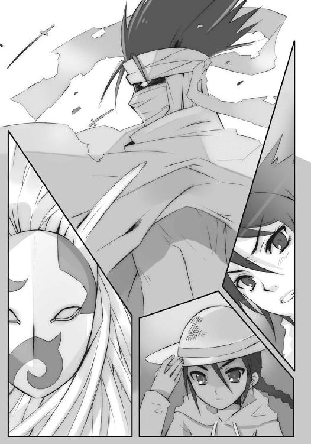
死闘を覚悟させられる圧倒的な力が、男の身には漂っていた。
「炎髪灼眼は取り逃がしたか」
声をかけられることで初めて三人の存在に気付いたように、サブラクは視線を向ける。
「囚われていたはずの奴が、他の討ち手を引き連れてくるとは、な。俺の健在を前提に備えられては、一撃も掠り傷止まり......およそ物事とは、思い通りに行かぬものよ。ともあれ、取り逃がしたとはいえ、伸びる道は一つきり。宿敵を片付けてから、仇を追えばよかろう」
誰に向けたものでもない、内心の吐露である声が零れた。マントの内より出た両手には、既に二振りの剣が抜き放たれている。
その鈍い輝き、一帯に煮え滾る茜色の地獄、いずれにも臆さない大声と、
「へっ、孵らぬ雛を数えるな、って諺を知らねえか、サブラクさんよ？」
「まだ実現していないことを前提に語るのは愚かしい、という意味だね」
同じく臆さない、どころか場違いにのんびりした声が、塔の上へと投げかけられた。
声の主に、サブラクは視線を向ける。
「久しいな、〝糜砕の裂眥〟バラル、『輝爍の撒き手』レベッカ・リード。さすが、我が宿敵に手抜かりはないか。この『詣道』へと突入させるに足る手練れを揃えてくるとはな」
今度は相手に向けた、いささか以上に買いかぶった評価を口にしつつ、もう一人の手練れ、最古のフレイムヘイズへと視線を転じようとしたサブラクの頭上から、
「!!」
猛烈な速さと重さを伴った石塊が落下した。
正確には、自在式『カデシュの血印』を刻んだ石塊と、手に在る鉄棒『メケスト』を褐色の炎で結び、まるで鎖分銅のように軽々と振るって、サブラクを塔ごと押し砕いたのである。
「ああ、悠長にお喋りしている暇はないでしょう」
「ふむ、そうでなくとも、奴の話は取り留めなく長いからの」
乱暴極まる先制攻撃を食らわせた二人、カムシンとベヘモットは平然と言いつつ、石塊に伸ばしていた炎を断ち切った。即座に大きく飛び下がる。
その直後、彼の立っていた地点に茜色の炎が噴出し、溢れた。内に剣を躍らせる怒涛へと見る間に膨張した炎の頂には、全く無傷のサブラクが立っている。
「年経た調律師か。これまでは、時と場合の巡り合わせから、互いに力を尽くし戦う機会を得ることもなかったが......今度こそ、壊し屋の真髄を目にすることが叶いそうだな」
怒涛の上で呟く〝紅世の王〟から目を離さず、三人は距離を取った。
崩れた胸壁の上を駆けながら、レベッカが口を尖らせる。
「どーもジジイどもには負けるな。自信なくすぜ」
「なに、これから取り戻せばいいさ」
その胸の前に浮かぶ〝クルワッハ〟から、バラルが呑気に慰めた。
対してカムシンは、深刻な状況を、表情を崩さぬまま説明する。
「ああ、いちおう報告しておきますが......どうやら『儀装』を組めないようです」
「ああ、そうかい──って、なにぃ!?」
返したレベッカは駆ける足を一歩、躓かせた。
その手をヴィルヘルミナが柔らかく取り、輪舞を共にする男女のようにクルリと優雅に回っる。釣られて回ったレベッカは、前方へと理想的な速度とタイミングで放り投げられた。その足跡、躓き蹴立てられた小石が、すぐ後方に追い迫っていた炎の怒涛に巻かれて消える。
踊る仮面の内から、
「どういうことでありますか」
「説明要求」
ヴィルヘルミナとティアマトーに促されたカムシンは、頷くや大きく低く前方へと跳び、行く手に向かって『メケスト』を振るった。
応じて正面、真っ二つに砕けた城の胸壁表面に、自在式『カデシュの血印』が褐色に燃え上がる。この自在式によって統御下に置いた無数の物体で、巨人『儀装』を組み上げ、縦横無尽な破壊力を撒き散らし暴れ回るのが、カムシン本来の戦闘様式だった。
が、ヴィルヘルミナは今、
「む!?」
石組みの胸壁を照らし燃え上がる自在式の周囲に、茜色の輝きが滲み出すのを見る。それがなんであるか見極める前に、走るカムシンが『メケスト』を後方へと振っていた。
途端、自在式の火勢が増して、胸壁は中央を引っ張られる布のように手前へと撓む。見る間に撓みは限界点を超え、壁の中央が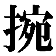ぎ取られた。
巨大な質量の塊たる胸壁は、ぎ取られた勢いのまま、振るわれる『メケスト』の指し示す後方、フレイムヘイズらを追って来る炎の怒涛へと激突した。念入りなことに、激突による衝撃を伝え終わった瞬間、褐色の大爆発まで起こす。
炎の怒涛は、内に踊らす剣ごと、また頂に立っていた主ごと爆砕された。
駆け続ける三人は、それが単なる時間稼ぎに過ぎないことを知っている。サブラクの持つ特性の一つは、圧倒的な耐久力と回復力なのである。一帯に浸透した本体から力の供給を受ける人型部分は、彼のほんの一部に過ぎない。これを倒し続けるだけでは、なんら根本的な解決にはならないのだった。
せいぜい静かに話す時を得た、程度の心持ちで、レベッカが尋ねる。
「綱引きにゃ、勝ってるみてえだが？」
先行し、自分が中央をぎ取った胸壁を飛び越えるカムシンは、首を微か横に振った。
「ああ、ごく小さな領域を力任せに引っ張って、ようやくあの程度。細かな制御・統合を行い巨大な『偽装』を組み上げるのは、現状では不可能ですね」
「ふむ、見たとおり、一帯に〝壊刃〟がその身を浸透させているためじゃろうな。まったく、どこまでも厄介な奴じゃて......それより『万条の仕手』よ、その傷は？」
ベヘモットに言われて、改めてヴィルヘルミナは肩を押さえる。
「周知の自在法『スティグマ』でありますな」
そこには既に応急手当てとして、包帯代わりのリボンが幾重にも巻かれていた。血の染みも見えるが、それほど大きくはない。
容態と説明、双方への疑問に、レベッカは首を傾げる。
「あん？ そいつはおまえが前の戦いで、とっくに解決したんじゃなかったのか」
ヴィルヘルミナは即答せず、仮面越しの視線で一同を促した。
三人は胸壁の奥、ズタズタに崩された城の郭に潜り込む。サブラクが再来するまでの僅かな時間、気休め程度の間を取るためだった。
砂埃を落とす壁に背を持たせ掛けたレベッカが、早速・手短に尋ねる。
「で？」
「以前との差異は、傷が広がらないこと、先には効いた解呪の式が通じないこと、の二点。御崎市の戦いで『スティグマ』を破られたサブラクが、何らかの改良を施した、ゆえに以前と同じ式では通じない、というあたりが妥当な推測でありましょう」
「存命誤算」
ヴィルヘルミナはティアマトーの端的な総括に、仮面の内で苦い顔を作った。
討滅した、という思い込みから、彼女はサブラクの新たな力に対する、日々の予防措置を絶やしていたのである。結果、無策で当たらざるを得なくなった......そんな認識不足、万が一を見過ごした油断で難局を招いてしまった己に、激しい怒りを感じているのだった。
「現在、御崎市における場合と同じく、これまでに蓄積した自在式で効果があるものを探す作業を進行中であります」
自らの傷に触れ、桜色の自在式を見えるように現す。無数の式が延々、点っては消えてゆく様が、今の彼女にできるせいぜいの対策だった。
「傷口が広がらないのは不幸中の幸いながら、やはり当然の心構えとして、負傷は極力避けるべきかと」
「回避専心」
自身の手落ちから、そう言わざるを得ないことを、ヴィルヘルミナは、ただ恥じる。
もっとも、残る二人にして四人は、彼女の猛省に追い討ちをかけたりなどしない。これは、彼らが人格者だったから、というわけではなく、今在る状況への対処にこそ重きを置く、実際的な性格だったからである。
それよりも、と言い合う、
「あの化け物相手に傷を負うな、ってのは、なかなか厳しい条件だな」
「彼と出くわした際の一番の対策、逃げの一手は、今の状況じゃ実行しようがないからね」
「ああ、問題は『儀装』を使わず、当初の作戦通りに動けるかどうか、でしょう」
「ふむ、やはり『カデシュの血印』の配置を──」
彼らの足下、石組みの隙間に茜色が閃く。
レベッカが叫び、
「言ってる傍から──散れ!!」
三人が三方に飛び出した直後、撹乱として放られた光球が、城郭内で大爆発を起こした。
サブラクは、燻り出された獲物の一匹、ヴィルヘルミナへと襲い掛かった。偶然ではなく、狙ってのことである。飛び出した正面に炎の怒涛として立ち塞がり、その波頭の落ちる勢いを加えた双剣の斬撃を叩き込む。
が、やはり当然というべきか、戦技無双を謳われた『万条の仕手』には、勢いや力攻めは全く通用しない。絡みさえしない、剣尖を掠めたリボンの一振りで、斬撃の軌道はあらぬ方向への変針を強いられる。傍目には、斬る側が唐突につんのめったとしか見えない。
「むう!?」
それでもサブラクは、つんのめった勢いを殺さず素早く宙で前転、一回りして再びの斬撃を繰り出す。加えて、背負う怒涛の内からも、無数の剣を弾幕のように撃ち放った。
が、ヴィルヘルミナはそれすらも一向、苦にしない。
無数のリボンを鬣とする優雅な舞いは、必殺の威力も無数の切っ先も、触れることすら最小限に、かわし、いなし、避ける。撫でるように触れられた剣が他の剣に接触し、中心に在る一人を完全に圏外とする、剣と剣、空中での壮絶な激突の衝撃と噪音が散り咲く。
芸術的、と言って良い宙の剣劇に、唯一つ混ざっている異物は、他ならぬサブラクだった。自分が撃ち放った無数の剣が乱舞する中で、容赦なく切り刻まれる。が、無論のこと、この程度の損傷は、彼にとって蚊が刺すほどにも感じない。
（我が力と真っ向から当たって引かず、凌ぎ、のみならず攻撃を逆手に取っての反撃まで繰り出すとは......格闘の技巧においては、間違いなく最高に位置する存在か）
感嘆を抱く余裕すら伴って、無論のこと寸毫の恐怖さえ抱かず、ただ切り刻まれ押されるまま、自ら作り出した炎の怒涛の中へと叩き込まれる。
と、その沈むのに合わせて、茜色の塊が圧縮されるように容積を縮めた。巨大な鞴として大圧力を集約する、その先頭に、いつしかサブラクの姿が──。
ヴィルヘルミナは、今見ている光景の意味を知っていた。
（これは！）
御崎市の戦いで彼女が完全に避け得なかった、超高速・大威力の強襲を繰り出すための構えだった。今度こそ完全に凌ぎきってみせる、と広がる鬣の全てに気を払う。
その流れる純白の群れの中、
（......？）
一条、茜色が混じっている。
それはリボンではない、紐状の自在式だった。
他のリボンのように、仮面から伸びてもいない。
自在式は、包帯の巻かれた肩の傷から伸びている。
他のリボンのように、長く無防備に、棚引いていた。
切断することも引き抜くことも、自在式ゆえに不可能。
（いけない）
新たに自在法を使って対処をするための時間さえ、与えられない。
まさに計ったタイミングで、サブラクを弾頭とした圧力砲が、撃ち放たれる。
（今は、避けるしか）
例え超高速、大威力であろうと、遭遇済みの攻撃である。戦技無双の異名を取るヴィルヘルミナ自身のみであれば、なんとか回避し、リボンで受け、軌道を逸らすこともできただろう。
（式の対処は、後に──）
しかし、彼女の制御に与らない茜色の自在式が一条、かわした宙に残っていた。
狙って過たず、剣尖を揃えた弾頭となったサブラクは、この自在式の端を断ち切る。
瞬間、
「う、ああっ!?」
小さかった肩の傷が、まるで手をかけて引き裂かれたように広がった。そのおぞましい感触に、包帯の中で噴き出す鮮血に、遠のきかけたヴィルヘルミナの意識を、
「覚醒!!」
ティアマトーの一喝が引き戻した。
宙に曲線を描き着地したサブラクは、早々に追い討ちをかけるべく、新たな炎を圧縮しつつある。どれほどの痛みであれ、彼女には悠長に呆けているような暇は与えられなかった。
「っ──く！」
鮮血の広がる肩を押さえ、傷のショックに眩む頭を強く振って、出来得る限りの速さで降下する。傷口から伸びる自在式は依然、リボンとして棚引いていた。
（今の状態では、私自身が避けられるか、どうか......可能性は、五分程度）
そう冷静に判断しつつ、辛うじて技で保っていた均衡を一撃で崩された己の不甲斐なさに、また怒る。と同時に、常と変わらぬ戦いを仕掛けたように見せかけて、再戦のため周到に準備していたサブラクの手練と執念に戦慄する。
思いを巡らせる数秒の間に、打ちかからんと身を屈めていたサブラクの足下、臨界に達した圧力を開放せんとしていた炎の塊へと、
「!?」
ボボボッ、と立て続けに光球が打ち込まれた。
溜め込んでいた力の全てを弾けさせて、茜色が誘爆する。一帯の城郭どころか、頭上に見える『詣道』反対側の地面にまで余波の崩壊を起こし、熱と風による暴力が吹き荒れた。
その中を翻弄されるヴィルヘルミナを、レベッカが抱きとめる。
「すまねえ、遅れた」
言って彼女は、戦友の肩から伸びる茜色の自在式、一気に広がったらしい傷を確認し、先の戦闘と合わせて大よその見当をつけた。それでも、口を突いて出るのは戯れ言である。
「ったく、なにも自分で実験するこたねえだろ」
「つまりサブラクは、かつての切り札を、破られたと簡単に捨てず、改めて解除も治癒も不能という点のみに特化した式へと組み直したわけか」
相棒の方は大真面目に、しかし変わらずのんびりと分析した。
度重なる爆発に砕かれ焼かれ、瓦礫の山と成り果てた城砦の陰に、二人は飛び込む。サブラクの溜め込んだ圧力による爆発は、未だ余震として瓦礫を不安定に揺り動かしていた。
その一個を蹴り飛ばし、即製の腰掛けを作ったレベッカは、ヴィルヘルミナを座らせる（急襲を受ける現状では、迂闊に寝かせるわけにも行かない）。またすぐ状況確認のため、軽く瓦礫の陰から顔を出して、自分が誘爆させた跡地を見やる。
クレーターとなって抉れた一帯は、瓦礫さえ吹き飛んで、何物の痕跡も残していない。
「普通なら、今ので終わりなんだが......やっぱ」
「そうは、いかないか」
今度は、さっきのように語り合う間は与えられない。レベッカとバラルが声を交わす間に、クレーターの周囲から茜色の炎が渦のように巻いて、伸び上がる。
その頂には、傷一つない〝壊刃〟サブラクが、全く当たり前のように立っていた。二人の潜む方角に、ゆるりと剣を付き付け、伸び上がった炎を尽きない雪崩として差し向ける。
「ちっ！」
レベッカは舌打ちして、ヴィルヘルミナを再び抱え上げた。脱兎の如く瓦礫の間を走り抜ける、そのすぐ後ろから波頭を崩した茜色の炎が降りかかる。
「おわっ、と！」
レベッカは跳躍し、危うく避けた。折れた塔に飛び移り、洪水のように溢れ来る炎を背に駆け上がる。抱える友人への軽口も忘れない。
「はは、さっきまでとは逆だな」
「忝いので、あります」
「救援感謝」
「いいってこと、よっ！」
ヴィルヘルミナに返すと同時に、塔の先端から宙に舞い、周囲を巡っていた光球を幾つもばら撒いた。桃色の爆発は炎を吹き散らし、彼女らを大きく離脱させる助けともなる。無論のこと、波頭に在ったサブラクへも、一撃二撃と光球は叩き込まれていた。
大きく距離を取った二人が振り向く先、轟々と燃える桃色の炎の中から、黒いマントの影が瓦礫を踏んで平然と歩いてくるのが見える。
分かりきっている結果に、それでもレベッカとバラルはウンザリした。
「やれやれ、吹っ飛ばし甲斐のない野郎だ。いっそジジイどもと代わって欲しいぜ」
「人には向き不向きってものがある。僕らにはできないことが、彼らには──っ、と？」
二人とともに舞い飛ぶ瓦礫の中に『カデシュの血印』が大きく点り、瞬時に周囲の欠片を集約して巨大な掌となる。弾丸となって突きかかってくる無数の剣から二人を守るように包み、手首として伸びる褐色の炎に引かれて一気に、遠方へと運んだ。
「ジジイ、怪我人がいるんだぞ!?」
掌中、レベッカが叫ぶ間に、二人はカムシンの許へと辿り着いている。握った形でドカンと着地させる、乱暴極まりない形で。
最古のフレイムヘイズは即座に掌を分解し、降り立った二人に言う。
「ああ、こちらの不都合で、色々手間を取らせて申し訳ありませんでした」
「ふむ、囮となってもらった時間分は、しっかり仕掛けさせてもろうたよ」
レベッカも憎まれ口を止め、傍らのヴィルヘルミナに目をやった。
「どうだ？」
「問題なしであります」
ようやく負傷のショックから立ち直ったヴィルヘルミナは、背筋を伸ばして立ち上がる。激痛は未だ肩を責め苛んでいるが、それを怠惰の言い訳にするつもりはなかった。
二人の様子を確認したカムシンは頷く。
「ああ、では、始めましょうか」
「おうよ！」
「了解」
三人は、この地に至る道中で立てた、所定の作戦に沿って動き出す。
一帯に張り巡らせた、罠を発動させんと。
三人の前方で、悠然と歩を進めるサブラクも、胸の内で算段を練る。
自身密かに用意する、罠の発動について。
「一時、何処かへと姿を隠していた『儀装の駆り手』が姿を現し、合流したか。先の、日本における屈辱の戦いと同じく、我が知覚が一個人の狭きにあることを利用した、囮と罠の敷設、役割の分担に違いあるまい......よかろう、斬り込み、斬り抜け、斬り返してくれる」
呟く足下に幾度目かの、茜色の炎が湧き上がる。
直後、フレイムヘイズら三人は、作り上げた罠に誘い込む、という意図に一見反するかの如く、各々積極的な攻勢に出ていた。
これは、引いて誘ったところでサブラクほどの〝王〟がノコノコと付いてくるわけがない、ゆえに攻勢によって戦場を引きずり回し罠の敷設された地点へと到達させる、三者による攻勢のバランスでその大まかな方向を制御する、等の戦術的意図による。
だからといって無論、誰も手を抜いたりはしない。手を抜くことが許されるほど容易い敵でもない。倒せるならば今すぐ倒すほどの本気で、三人は次々と攻撃をかける。
「おらおらあ──!!」
レベッカの周りを惑星のように巡っていた光球群が、次々と軌道を離れ、流星となって奔った。桃色の輝きは茜色の怒涛の進行路上で炸裂、炎の塊同士で壮絶な噛み合いを起こし、その内にある剣を折り砕いてゆく。
「正面から対峙し破壊力をぶつけに来たか。意気と威力は称揚に値しようが、我が剣を無為に折り砕かれるのは不本意でもある。企図が牽制に過ぎぬのであれば、なおさらのこと」
膨れ上がる、両者が生み出した炎の嵐を、茜色の怒涛に乗ったサブラクは言葉のとおり正面からぶつかって乗り越えた。その勢いを利して自身、鋭く跳躍する。
双剣を閃かせ襲いかかる姿を認めたレベッカは、
「とっ!? やらせるかい!!」
驚きつつも両手首を交差、周囲の光球全てを起爆させた。
彼女を中心とした大爆発を、しかしサブラクはマントを盾として防ぐ。その吹き飛ばされた身が落着する前に、無数のリボンによってグルグル巻きにされた。
「む、まだここまでの力を──」
「口舌無用」
ティアマトーが敵手の声を切らせる。
現状では不死身に限りなく近い彼を締め付けても無意味、と重々承知しているヴィルヘルミナは、捕らえ続けることに拘らない。現在の負傷から、また先の自在式を伸ばされる可能性の高い、至近での格闘は甚だ危険でもあった。ゆえに今はただ、その吹き飛ぶ勢いを殺さず、方向だけを微調整して放った。
まるでトスされるボールのように宙を彷徨う〝紅世の王〟に、止めの一撃が来る。
「ああ、流石に良いコントロールです」
「ふむ、儂らもせいぜい見習うとしようかの」
小高い丘と見える城跡に立つカムシンが、動作の印象は軽く、実際の質量としては重く、鉄棒『メケスト』を振るった。
その下端から牽引の鎖として伸びていた褐色の炎に引かれ、統制力の限りにぎ取られた瓦礫の塊が、濛々たる土煙を上げて宙へと擲たれる。大きな屋敷ほどもある塊は、飛翔していきなり、集束爆弾のように破壊力をばら撒いた。
「ぬ、おおおおお!?」
サブラクは逃げ場のない中空で、質量に速度、熱に炸裂を加えた暴力の殺到に晒される。激突と爆発が、次なる激突と爆発が、さらなる激突と爆発が、立て続けに彼を蹂躙した。
が、
「ああ、呆れかえった頑丈さですね」
「ふむ、あれで四肢の二つも千切れぬか」
爆炎の中を落ちてゆく影に向かって、最古のフレイムヘイズらはサラリと恐ろしい感想を漏らした。それより、と声を継ぐ。
「ああ、しかしあまりに容易く行き過ぎていませんか？」
「ふむ。三人が一度ずつで追いやれた、か......とはいえ、千載一遇の好機には違いない」
沈思が躊躇になる寸前、カムシンは再び『メケスト』を持ち上げた。軽く数回転させてから、サブラクが落下する方角をピタリと指し、集中する。
「起動」
「カデシュの血脈、展開」
今まさに落着せんとする不死身の〝王〟を中心に、直径五十メートルほどの円環に配置されていた数十もの自在式が、褐色の炎を吹き上げた。各々両隣へと伸ばす炎が結ばれ、円環が完成するや、塀状の炎が吹き上がる。それはまるで、巨大な監獄だった。
轟々と立ち上る褐色の輝きを遠く見て、カムシンらは確認し合う。
（ああ、私では『弔詞の詠み手』のように、自在式で広範囲の地盤を丸ごと持ち上げ、隔離空間を形成するなどという、並外れた真似はできませんが）
（ふむ、統制力によって、円内外の疎通を遮断する程度ならば）
彼らが各所に『カデシュの血印』を仕掛けて回る際、地下へと伸ばした力は、さほど深くない場所で途切れる感覚を得ていた。サブラクの言う『詣道』なる空間は、行く道に幾度も歪みや断層を回避していたことから推測されたとおり、両界の狭間に辛うじて存在を保つ『管』でしかなく、厚さもさほどではない。隔離空間として十分機能するはずだった。
こうして力の供給を遮断した上で、意思総体を宿す司令塔たる人型を潰せば、街一つさえも己が体とする強大な〝壊刃〟サブラクを倒すことができる......この作戦は、御崎市での戦いにおいて立証された有効な手法の応用なのだった。
本来の想定は、カムシンが瓦礫の巨人となって暴れ回り、折に紛れて『カデシュの血印』を密かに配置、残る二人は援護に撤する、というものだったが、巨人を組み上げることができない、というハプニングから、実際には前衛と後衛の配置を逆にせざるを得なくなった。
それでも、結果としては当初の作戦通り。サブラクの司令塔たる人型は、炎の監獄の内に囚われ、外部との力の遣り取りを阻まれることになった。
カムシンやヴィルヘルミナが交戦する間、力を十分に蓄えていたレベッカが、浮かれた様子を隠しもせず、周囲に特大の爆弾となる光球を巡らせている。
「さあて一発、ド派手に行くか」
標的は無論、監獄の内に在る、黒い立ち姿。
（この程度で大勝利、と行くほど可愛い野郎じゃねーだろな）
（なに、強引に突破したとして、仕掛けはまだまだある......まずは罠の存在を知らしめ、彼の自由な身動きに制限を加えることが重要さ）
が、当のサブラクは、
「この俺が、同じ戦法で討滅し得る、などと侮られるとはな。敗北とは、かくも不愉快な果実を後に実らせるのか。彼奴ら悉くを返り討ちにしたとて、この憤りは霧散すまい」
窮地にある不敵のレベルではない、悠然とした不平で答えていた。
その気色の異様さに、レベッカは危険の火花を嗅ぎ取る。
（なにか、やばい！）
反射的にそれを退ける最速の方法......即ち、先んじての一撃を放とうとした彼女は、
「待て、レベッカ！ 周りを見ろ!!」
「なんで止め、っ──!?」
バラルの制止に怒鳴り返そうとして、ギョッとなる。自身の目に映ったものを、理解するのではなく感じることで湧き上がった危機感から、思わず足下を見た。
すぐ傍に、
罅割れがある。
地割れ、ではない。
世界の、罅割れだった。
割れた地面が、十数メートルという浅い場所で、消えている。
正確に表現すると、彼女の立つ世界の、存在が途切れている。
創造神〝祭礼の蛇〟が作り上げた異世界『詣道』の途切れる先......それこそが、人間の在る世界と〝徒〟の在る〝紅世〟を隔てる間隙、『両界の狭間』だった。
そこには、なにも見えない、感じられない。
そこからは、なにも聞こえない、匂わない。
なにが在るのか、無いのかも、分からない。
全てが認識不能にして不可知の領域だった。
レベッカは、人間の住まう世界と同様のものと錯覚させていた地面が、この領域に浮かぶ、ほんの十数メートル......地層とも言えない薄すぎる皮の内に抱かれる危うい管の内側に過ぎなかったことを、事実によって改めて感じ、戦慄した。
今、その管を割る罅割れが、恐ろしい速さで広がりつつある。
脆弱な世界の崩壊を前にするレベッカは、
（なんだ、どうして......はっ!?）
罅割れの根源が、とある円の縁から放射状に伸びていることに気付いた。
その円、炎の壁で囲まれた監獄の中から、声が響く。
「く、く、く。見た目ほどに大した労力はかけていない。俺を隔離する作用に多少、後押ししてやるだけで、この長大ながら脆い世界は、容易く崩壊の危機に瀕する、ということだ。どうする、このまま俺を閉じ込め続けると、拠って立つ『詣道』そのものが砕けるぞ？」
明確に、他者へと向けられる、サブラクの声が。
彼女らの在る『詣道』そのものを人質とするこの脅迫が、解放を得るための虚偽でないことは、広がってゆく罅割れを見れば一目瞭然である。そもそも彼ほどの〝王〟ならば、この監獄を強引に突破することも可能なはずだった。
その方法を取らず、あえて『詣道』の崩壊などという自滅同然の状況を引き起こしているのは、今後への備え......つまり、フレイムヘイズらが他にも複数の罠を仕掛けていることを見越し、同じ手を封じてしまうのが狙いに違いなかった。
バラルが声なき声で感嘆する。
（これは参ったな、僕らの狙いも全部お見通しだったってわけだ）
（くそったれ、どこまでも可愛げのねえ!!）
心中では敵に、声では味方に向かって、レベッカは叫ぶ。
「ジジイ、自在法を解け!!」
言わずもがななことを、それでも叫んだのは、カムシンという使命に純化したフレイムヘイズならば、眼前の強敵や［仮装舞踏会］の指導部、果ては〝祭礼の蛇〟帰還という敵の企図そのものを両界の狭間へと葬り去るために『詣道』を破壊する、という非常の手段を取りかねない、と危惧したからである。
（そーいうこと、されちゃ困るんだよ！）
レベッカが心中で叫んだのは、彼女個人の保身からではない。むしろそれとは逆、カムシンとは別方向に発揮されるフレイムヘイズとしての見地に拠るものだった。
仮に『詣道』が両界の狭間に浮かぶ異物だとして、遥か後方は、彼女らが来た世界と『神門』によって繋がっている。この地の崩壊の余波が、どのような影響を繋がる世界に与えるか分からない以上、迂闊な破壊は避けるべきだった。
また、破壊された際の対策を〝祭礼の蛇〟が持っている可能性も無視できない。現に、両界の狭間で永遠に彷徨うはずだった彼は、こうして帰還するための道を作り上げている。対策の存在する可能性は、高いと見做すのが妥当であろう。
犠牲覚悟で『詣道』を破壊した彼女らだけが狭間に放り出され、後から道を辿ってきた〝祭礼の蛇〟の方は砕けた場所を難なく渡って、何事もなかったかのように残りを踏破する......という間抜けな結果になってしまっては、目も当てられない。
サブラクが自らも危険に晒す脅しをかけている以上、用心に用心を重ねるべきだった。
遠く潜んでいるはずのカムシンは、
（早くしろ、ジジイ！）
レベッカにとって恐ろしく長い数秒を経て、ようやく自在法を解く。
お手上げ、という状況を示すように、炎の監獄が消え去った──途端、『詣道』には復元機能があるのか、世界の罅割れは急速に閉じ、元通りの姿を取り戻してゆく。
その破壊の震源地に平然と佇むのは、サブラク。
「さて、既に察していようが、これで貴様らの目論見は全て白紙......俺との戦いを、また最初から始めてもらうとしようか。新たな策を講じるとして、その間に誰が倒れるか」
ゆっくりと踏み出す驚異の影を、
「──」
しかしレベッカは指差して叫ぶ。
「──っまだだ!!」
瞬間、サブラクの周囲に閉じた目の形をした紋章、『輝爍の撒き手』の仕掛けた潜伏する爆弾の自在法『地雷』が浮かび上がり、各々その場で一点に収束する。
「な、に？」
標的たるサブラク自身への攻撃ではなく、その周囲、炎の監獄より二回り小さな円形の爆発が起きた。のみならず最後に一撃、より大きな爆発が地中で起こり、爆発で掘り下げられた円形の地面を、宙へと大きく高く持ち上げる。
「ヴィルヘルミナ!!」
レベッカの号令を受け、御崎市で行われたものを、より小型化した、より乱暴な手法による隔離を完全なものとすべく、無数のリボンが走った。白い奔流はサブラクを乗せた地面を巻いて渦となり、絞られて球となり、表面に断絶と妨害の自在式を幾重にも輝かせる。
この地面の爆破による空中隔離こそ、カムシンによる炎の監獄が万一破られた際の保険にして、真の切り札。レベッカが、サブラクを引きつけるヴィルヘルミナとの合流に遅れたのは、カムシン共々この仕掛けを施していたためだった。
そうして遂に、満を持したレベッカの止めが撃ち放たれる。
「喰らって弾けて燃えて死ねええええ!!」
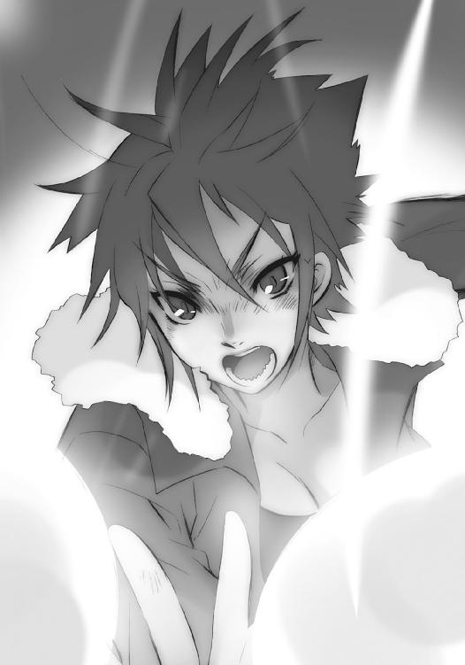
狙い違わず、常の数倍はあろうかという特大の光球が連続してリボンの殻をぶち破り、内部の地面を、その上に立つ〝紅世の王〟を、完膚なきまでに焼き砕いた。
レベッカは自分の目で、神器〝クルワッハ〟で、確と見る。どれだけ攻撃を喰らっても、その形状を崩さなかったサブラクの体が折れ裂け、消え果ててゆく様を。
「っしゃあああ!!」
快哉を叫んだレベッカは、
背後から一刀、斬られた。
「──、──!?」
今度は叫ばず、叫べず、ただ本能的な反射だけで跳ぶ。
斬ったのは、いつの間にか背後に現れていた、サブラクだった。
再び両の目を、未だ宙で溶鉱炉のように燃えている隔離空間へと転じる。
そして、斬られたレベッカのみならず、
（なん、だと!?）
隔離空間を維持するヴィルヘルミナも、
（いったい、なにが？）
遠くから様子を窺っていたカムシンも、
（ああ、あれは、まさか）
サブラクの燃えた欠片が、金色の火の粉に崩れて消えるのを、見た。
レベッカの背後、斬った姿勢のまま地に立つ、本物の〝壊刃〟サブラクが、嗤う。
「つまりは、三眼の女怪に託された身代わりの〝燐子〟というわけだ。最初の隔離を受けた際に入れ替わり、本体は潜伏する単純な罠だが......俺の不死身を知るがゆえに、攻撃を喰らわず入れ替わるなどとは想像できなかったか。まったく、不愉快なほど奴の読みは当たる」
当初より仕掛けられ、シャナが見破った〝燐子〟の群れは、出現に際し破壊された。
ヴィルヘルミナらはそう推測し、また推測は当たってもいた。しかし、そちらは単なる囮であり、真にベルペオルより託された〝燐子〟、その使い道は......斯くの如し。
嗤って、サブラクは一歩、踏み出す。
「ともあれ、我が秘奥たる『スティグマ』を、解呪不能の一点にのみ絞り込んで強化した新たな自在法『スティグマータ』、その仕掛けとなる傷を、新たに加えることには成功した」
踏み出して、殺し屋は、また、嗤う。
「残るは──一人」
シャナは振り返らず、空ならぬ空を飛ぶ。
先導する鳥ならぬ鳥の後を追って、どこまでも速く。
後に残した戦いに心を残さず、先だけを見て、どこまでも速く。
断章 数日前の話 その１
日本、御崎市の中央に位置する御崎市駅。
新築の匂いも未だ薄れない駅舎、通勤ラッシュにごった返す改札口で、あまりに長い数日を過ごし帰ってきた佐藤啓作を、前以て連絡していた田中栄太が待っていた。
不当な拘束を受けたとはいえ、自分の不在中に故郷を襲われ、本来ならば自分がやるべきだった諸々の役割を、そこから退こうと決意していた友人に押し付けてしまった。
そんな引け目を持つ佐藤は、短く一言だけで挨拶した。
「よう」
親友の不在という、已むに已まれぬ状況だったとはいえ、もう二度と関わりはすまい、と誓っていた世の裏に潜む熾烈な戦いの場に、また抜け抜けと足を突っ込んでいる。
そんなばつの悪さを感じる田中も、短く一言だけで返した。
「おう」
そうして、この親友に迷惑をかけられたことではなく、不在中に自分の無力さを思い知らされた男としての怒り、待たされ眠り続ける羽目になった女への労りから、
「遅えよ、バカ」
と付け加える。
嫌味も含まず陰湿さも感じない、この親友による非難に、佐藤は見えない痛打を胸の深くに受けた。なにも飾らず、言い訳もせず、やはり一言で謝る。
「すまん」
「それは、俺に言うことじゃないだろ。行こうぜ」
謝罪を却下するように手を振って、田中はさっさと歩き出した。
「ああ」
佐藤も答え、後に続く。
彼は、この僅か数日の旅で、外界宿の人々の様々な思惑や立場に利用され、また自身も外界宿から得た情報や土産たる書類を持ったり持たされたりしていたが、ここに在る今はただ、一つのことのみを考え、目指している。
即ち、精神の疲弊から眠り続ける彼女と再会し、可能ならば眠りから覚まし、助けとなるよう接するために、その身を横たえる自分の家を目指している。あなたを生かすことだけに全てを賭ける──そう、彼女に誓ったとおりに。
我ながら単純さに呆れ、しかし恥じない。
誓っただけのことをしよう、と念じる。
その想いが、自然と足を速めさせた。
早足から駆け足、やがて全力疾走。
「──はっ、はっ、はっ！」
佐藤は、自らの力で道を縮め得る初めての場所で、思う存分、想いをぶちまけた。もどかしく人ごみを掻き分け、迷惑も考えず、どこまでも全力で突っ切ってゆく。
追い越された田中も、後を追った。
「──」
と、その眼に、いつかの戦いの中、彼と全力疾走していた日の光景が過ぎり、また今の光景へと戻る。懐かしむように切なく、しかし惜しまず笑って、後を追った。
二人は一路、行くべき場所に向けて、走る。
「──っは、──っひ、──っは」
「い──、今さら、倒れるなよ、──佐藤っ」
お互いなにを意地になったのか、駅から一度も止まらず走り通した二人は、佐藤家の大きな門前で、一人の少女の出迎えを受けた。
「おかえりなさい、佐藤君」
その少女・吉田一美は、わざわざオーバーのポケットから出した手を揃えて言い、どういうわけか、クスリと笑う。
「──吉田、さん？ 中で、待ってりゃ、いいのに」
息切れ寸前の佐藤が尋ねると、こちらはやや余裕のある田中が、同じく笑った。
「はは、は。俺が言ったんだよ。どうせ走って、帰ってくるから、ここでどっちが先着か、判定してくれ──ってな。俺が勝つところまで、言ったとおりだったろ？」
「うん」
二人にからかわれて、佐藤は憮然となる。
「な、んだよ、ったく......っ」
深呼吸して冷たい空気を吸い込むと、門を開けた。無我夢中で走ってきた勢いをなくし、改めて自分から踏み出さねばならない道が、広い飛び石の形で眼前に在る。
その静かな屋敷の奥に駆け込むことを、この数日ずっと考え、望んできたというのに、何故か足が重かった。ほんの数日前、二人にかけられた別れ際の言葉が蘇る。
（──「お使いなんだから、言われたことキチッとやんのよ」──）
（──「良い旅に、期間の長短は関係ねえぜ？ おめー次第だ、佐藤啓作よお」──）
まったく、ほんの数日前のことでしかない。
その間に、どれだけ思いがけない出来事に遭遇したか。
自分はその出来事の分、しっかり成長できただろうか、あの人を満足させられる自分として帰れただろうか、と佐藤は自問する。具体的な成果として、肩から提げたバッグに、助けてもらった女性に託された土産、フレイムヘイズの今後の動向を記した重要書類も入っているが、
（......）
まず、なにより先立つ前提があった。
意識不明のまま眠り続けている彼女の目を覚まさねばならない、ということである。
御崎市駅に着くまでは、自分の家に帰り着くことへの焼け付くような焦燥感、彼女に会わねばならないという切迫した危機感が、時の一秒すら長く感じさせていた。でありながら、いざ実際にその状況と直面した今、空気が固く前を阻み、足が重さに動かない、そんな感覚に捉われている。
心情は、一言に尽きた。
（......どうすりゃ、いいんだ）
なんとも馬鹿らしい話で、帰って、会って、の後を全く考えていなかったことに、佐藤は今さら気がついたのだった。普段なら困った人間を放っておけない、こういうときに助け舟を出してくれるはずの、優しい少女への求めも半ば、
「寒かったろ？ 入んなよ。お茶くらい出すぜ」
言って促したが、求められた吉田の方は、あっさりと首を横に振る。
「いいんです。帰ってきたのを、確かめられましたし」
意地悪から断ったのでないことは分かったが、言葉通りの単純な答えでもなさそうだった。
戸惑う彼に、さらに田中が追い討ちをかける。
「そういうこと。俺も、無事送り届けたから、お役御免だ」
「お、おい」
この場だけを見られれば、成長の欠片もない、と思われかねない情けない声に、田中は胸をドスンと拳で叩いて返した。
「ぐほっ？」
よろける間に、二人して帰ってしまう。
「俺たちのために帰ってきたのか？ 違うだろ？」
「目が覚めたら、改めて連絡くださいね」
文字通り突き放された佐藤は、
「......」
答えることも忘れ、その場に取り残された。
が、それも数秒。落としていた肩に力を入れ、意を決して足を動かす。
踏み石を辿り、鍵を掛けていない玄関に。
靴を放り出したまま、広く長い廊下を、進む。
そうして、奥まった一室の前に、立つ。
見慣れた、自分の部屋の、前に。
その、初めて感じる遠さ。
「......」
よりにもよって、ここに寝かされていることを、予め田中から聞かされていた。
（田中の奴......あ、いや、吉田さんの提案、だったか）
とりとめない思考で誤魔化そうとする心を、ノブに手を伸ばすことで追い出す。
（っと、違う違う、ダメだ）
つい、いつもの調子でドアを開けようとしていた自分に気付き、思い止まった。
「......っ」
ノックをしかけて一旦躊躇い、改めて勇気を振り絞り、初めてのノックをする。
「おめえの部屋だぜ」
中から聞き慣れた、数日振りなのに懐かしい、軽く剽げた男の声が返ってきた。
覚悟を決めて、中に入る。
よく知る広い部屋は、大きな家具類の配置こそ変わっていなかったが、全体に散らばっていた日用品や雑誌などが片され、掃除も行き届いていた。彼女を運び込む際、田中と吉田が一緒に片付けてくれたらしい。少年として、そのあたりに妙な後ろめたさがあった。
と、部屋の奥、ベッド傍らの椅子から、再び声がかけられる。
「よう、どうだったい。こっちは御覧の有様さ」
置かれているのは、画板ほどもある大きな本。彼女と契約し異能の力を与える〝紅世の王〟、〝蹂躙の爪牙〟マルコシアスの意思を表出させる神器〝グリモア〟である。
その彼に、佐藤は重い口で、なんとか一言を搾り出した。
「ただいま」
「ヒッヒ、さっきエータに聞いたぜ。大冒険だったらしいじゃねえか」
「そんなことないよ。本当に、全然......」
言いつつ、自分のベッドに歩み寄る。
自分のベッドに寝かされている女性に、歩み寄る。
ようやく会えた、初めて見つめるほどに見る、化粧っ気のない寝顔は、安らかでも苦しげでもなかった。昏睡状態であることを知らされていなければ、ただ目を瞑っているようにしか見えない。戦闘狂とまで言われたフレイムヘイズ、自信と貫禄に満ちた憧れの女傑、それら激しさも何処かに消え去って、今は一人の女性として、只管に眠っている。
内心、その姿に込み上げてくるものを感じた佐藤は、しかし見かけだけは折り目正しく背筋を伸ばし、自分に与えられた初めての任務について報告した。
「ただいま帰りました、マージョリーさん」
もちろん『弔詞の詠み手』マージョリー・ドーは、その一言だけで目覚めるほど、殊勝な駄々っ子ではない。
２ 時
中国西南部、柱石状の岩峰群からなる山地帯は、暗夜、吹き荒れる猛威の下にある。
天空には強風を伴う吹雪が、大地には人外の振りまく炎が、それぞれ踊り狂っていた。
当地に潜んでいた［仮装舞踏会］の本拠地『星黎殿』を巡っての、熾烈な戦いである。
今、この最大級の宝具たる移動要塞は、隠蔽の殻『秘匿の聖室』の砕ける様も無残に、岩山を周囲に生やす雪原へと墜落していた。そのすぐ傍らの空中、戦火に色付く吹雪の奥に、銀の縁取りがなされた巨大な漆黒の鏡と見える『神門』が浮かんでいる。
いずれもが、死守対象であり、攻略対象であった。
守るは『星黎殿』直衛軍、および要塞守備隊。
率いるのは、外界宿征討軍総司令官〝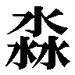渺吏〟デカラビア。
攻めるはフレイムヘイズ兵団の精鋭部隊。
率いるのは、総司令官『震威の結い手』ゾフィー・サバリッシュ。
本来、これは起こり得る戦いではなかった。
少なくとも［仮装舞踏会］陣営は、そう考えていた。
彼らの掲げる大命の第二段階として作られた『神門』......両界の狭間に眠る創造神〝祭礼の蛇〟本体に向かって伸びる『詣道』への入り口は、宙に固定された状態として在る。
移動要塞『星黎殿』は、自身を覆う隠蔽の殻、内部にある気配を完全に隠す特性を持つ『秘匿の聖室』へと、この『神門』を囲い込むため、山深い当地に停泊したのだった。殻の内にありさえすれば、フレイムヘイズ陣営に、決して居場所が悟られることはない。
そうして、既に大半を勢力下に置いたユーラシア大陸の辺地に潜み、創造神にして盟主〝祭礼の蛇〟本体の帰還を待つ......それだけが、この要塞と付随する軍勢に本来、与えられていた役割だったのである。
世界のバランスを守るフレイムヘイズらとの全面戦争、優位な地歩を占める東西両戦線に大軍を差し向け、残る主要な外界宿を陥落させることさえも、そのための時間稼ぎ、以降の組織的な反撃を封じ、主導権を握るための一手段に過ぎなかった。
それが、どういうわけか、
（まずい、な）
フレイムヘイズ陣営は『星黎殿』の停泊地点を正確に把握していたらしい──否、らしい、どころではない。航空機一機ごと、少数による空挺作戦で至近に軍勢を集結させ、迷うことなく方向を定めて進攻しているのだから、正確に把握していたことは、ほぼ確実だった。
（フレイムヘイズどもの攻勢が、尋常の勢いではない）
結果、両軍が『星黎殿』の前面で激突するという、［仮装舞踏会］側にとって全く予想外の戦いを強いられる羽目になっている。直衛軍や守備兵らは無論、その任に堪える強さを持っていたが、それでも単体の戦力比では、精鋭を揃えたフレイムヘイズらに相当の分がある。
（組織的な戦い、用兵の技巧で個々の差を補ってきたが、今やそれも限界か）
さらに、内部に潜入した少数の討ち手らによって、鉄壁の自在法『マグネシア』を繰る要塞司令官〝嵐蹄〟フェコルー、守備隊随一の使い手〝哮呼の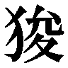猊〟プルソンらを討たれ、挙句、制御を奪われた『星黎殿』を砲弾に、後方の予備兵力まで潰されてしまった。
（あの『星黎殿』落着の衝撃と『神門』への敵勢突入という失態で、軍全体に怯懦の緩みが出ている......『炎髪灼眼の討ち手』シャナ、魔神の契約者め、余計な宣布をしてくれた）
その時点で総崩れになってもおかしくなかった直衛軍が、なんとか踏み止まり得たのは、まさに常より培った結束と調練の賜物である。とはいえ、それらも根本の解決にはならない。今が攻め時と押し寄せるフレイムヘイズ兵団を前に、全軍潰走の危機は刻一刻と迫っていた。
（機密の塊たる『星黎殿』を、盟主と三柱臣の御座す『神門』を、一時たりと彼奴らの自由にさせるわけにはゆかん......せめて近辺の援軍が到来するまでの時を保たさねば）
この戦場におけるフレイムヘイズ兵団の優勢は、実は局地的なものである。
本拠地の位置情報を活用した至近への空挺と速攻は、裏を返せば周囲に十重二十重と存在する［仮装舞踏会］の防衛網を無傷のまま残していることに他ならない。今、それらは矛先を逆に向けた包囲網として、当地に進軍している。遠からずフレイムヘイズ兵団が包囲殲滅の憂き目を見るのは明らかだった。いかに決死の攻勢を掛けているとはいえ、また兵単体が強力であるとはいえ、まずなにより、彼らは時間との勝負で不利に立っていた。
（だが、その僅かな、今この地を支えるべき時が、足りぬ......遠からず戦場に到達するだろう西部方面軍の主力と、司令官たる〝煬煽〟ハボリムが揃えば、なんの問題もないのだが）
遠きを見聞きする自在法『プロビデンス』によって、戦況を正確に把握する外界宿征討群総司令官〝渺吏〟デカラビアは、何処かに深く潜んで、自らの最終手段を取るべきか否か、取るとすればどの時点にすべきかを、まるで他人事のように冷徹に計り始めた。
前線では変わらず双方の叫喚が踊っていた。
誰も彼も、殺すために殺されるために駆けて、跳んでいる。
激突した当初と違っているのは、互いの勢いに差が生じ始めたことだった。
「はっはは！ そらそら、俺の南瓜に喰われたいバカはどこだ？」
「さあ、私の『赤い赤い服』に包まれて──死になさい」
「とっておき、爆破します！ 巻き込まれないで！」
吹雪の中、天に溶け込む柱列とも見える岩峰群の隙間、あるいは頂に拠点を置く直衛軍の防衛線が各所で食い破られ、フレイムヘイズらが遮二無二、雪崩れ込んでいたのである。
「くそっ、下がるな！」
「無傷の者を前に出して、戦列を立て直せ！」
「敵第五波、来るぞおー！ 備えぇー!!」
直衛軍は、背後の要塞を墜落させられ、宙の『神門』に敵の突入を許した......つまり本来、彼らが守るべきだったものが悉く侵されたことで、その士気に致命的な傷を負ってしまったのだった。しかも『星黎殿』の墜落は、彼らの後詰めに回されるはずだった予備兵力まで押し潰している。これで勇躍できる方がどうかしていた。
辛うじて抗戦を継続させているのは、眼前の敵への憎しみ、大命への期待、戦いへの耽溺、義理や忠誠、矜持や連帯感など、各々構成要素の異なる、兵としての練度のみだった。
対して、彼らを容赦なく叩き潰さんと迫るフレイムヘイズらの意気は正反対、軒昂極まりない。先刻、遂に布達された一つの指令が、彼らに嵌められていた枷を完全に取り払っていた。
指令とは他でもない、『各々の力を解禁せよ』である。
「そぉら、ナイフの大安売りだ、御代は命で支払えっ！」
「拳で潰すがいいか、針で穴だらけになるか、どっちがいい!?」
「お願いです......私に傷をください......寸分違わずお返ししますから......」
彼らには開戦前から、決して能力を全開にして戦ってはならない、という厳命が司令部より出されていた。理由は大きく二つで、一つは、基本単位として単純かつ均一的である方が軍として目算を立てやすい、というもの。もう一つは、個々の特殊能力は多く、消耗が激しい傾向にあり、仕掛けるべき戦機を前に疲弊しては意味がない、というもの。
これが戦機の訪れ、大きく有利に傾いた今、遂に解禁されたのだった。
精鋭と呼ばれるに相応しい腕利き揃い、ゆえに各々我も強い彼らが、それでも命令に服していた理由もやはり二つで、一つは、世界の危機を前に好き勝手バラバラで戦うのは不利、という当たり前の計算ができていたこと。もう一つは、その命令が、かつての大戦の英雄、現在の外界宿を纏め上げた総司令官たる肝っ玉母さんから出ていたこと。
彼女は、誰もが勇み立つ最高のタイミングで、全軍に解禁を命じたのだった。
その当人は、攻め時という今、前線近くに設けられた西洋風出城の、屋根もない吹きっ晒しの胸壁上で、開戦以降何度目かという立ちっぱなしの休息を取っている。
「ともかくも、粘った甲斐はあった、ということかしら？」
四十過ぎの修道女、という外見以上の貫禄を感じさせるゾフィー・サバリッシュは、吹雪を様々に彩って光る炎を目に、吹雪を突いて轟き渡る戦場騒音を耳に、小さく呟いた。
「さてさて、ようやく押し始めただけ、という状況を喜ぶのは、如何なものですかな」
その額、ヴェールに刺繍された青い星、神器〝ドンナー〟から、彼女と契約し異能の力を与える〝紅世の王〟、〝払の雷剣〟タケミカヅチが、取り澄ました声で嗜める。
電撃を自在に操る『震威の結い手』の攻撃力は、フレイムヘイズの中でもトップクラスを誇る反面、消耗も激しく、適時休息を取らねばならない。ゆえに、現状のような集団戦における彼女の役割は必然的に、戦況を離れた場所から概観しつつ、危機に陥った部隊があれば支え、突破をかけられそうな地点があれば加勢する、というものになる。
彼女がフレイムヘイズの総司令官に相応しいと目されているのは、並外れた度量や統率力、優れた知性や人柄という内面の要素だけでなく、衆寡を問題としない圧倒的な攻撃力、前線へと瞬時に到達できる速力、これら二つの力を備えているためでもあるのだった。
「喜んではいませんよ。これからだ、と意気込んではいますけれど」
「なるほど、そういうことなら、弾む声も許容すべきでしょうな」
今、彼女がやや長めの休息を取り得ているのは、フレイムヘイズ兵団が個々の能力解禁による総掛かりで、状況を有利に進めているためだった。次に飛び出す時は、戦局全体を動かす正念場となるはず。見逃すことも力尽きることも、許されない。両軍の動きに気を配り、佇んでこれを見つめるのが、今の彼女がなすべきことだった。
ヴェールにこびり付いた、湿り気のない雪の塊を払う傍ら、
（兵団の予備兵力まで投じる全面攻勢は、恐らく次の一度きり......必殺の戦機到来を、見誤らないようにしなくては）
余人には聞かせられない、と判断して声なき声で呟くゾフィーを、彼女以上に冷徹なタケミカヅチが、やはり声なき声で嗜める。
（今度は過ぎた杞憂を？ いかにブランクが長かったとはいえ、感情の振れすぎる指揮官は、知らず部下に不安を伝染させますぞ？）
大きな転換点を前にした際の習慣、弱音と苦言による切り替えと引き締め。全く久方ぶりとなるこの儀式を両者して滞りなく交わし、また両者して聞こえる声として苦笑を漏らす。
その背後、
「眺めて戦況を判別できる天候でもないだろう」
胸壁の上、武者走りに開いた穴のように見える階段から、三人の男が上がってきた。
声をかけたのは、立て襟のオーバーコートに将校の帽子を目深に被った壮年の男、フレイムヘイズ兵団の幕僚長を務める『犀渠の護り手』ザムエル・デマンティウス。この出城は、彼がフレイムヘイズとしての力によって、短時間の内に作り上げたものである。
「吹雪の中に身を晒し続けるのは、体力の無駄な消耗でしかない」
「戦場の監視は別途に立てているのだ。休むべき時は休まれよ、総司令官閣下」
しわがれた声で続けたのは、その胸から紐で下がる親指大の銀杯型の神器〝ターボル〟に意思を表出させる〝紅世の王〟、〝吾鱗の泰盾〟ジルニトラである。
謹直かつ厳正な両者の言い様に、新たな、重さの消えた苦笑で答える彼女らに、
「どうぞ、お召し上がりください」
目元を長髪で隠した男が、サファリルックの腰に無数提げていたポーチから、青い魔法瓶を取り出していた。湯気も香りも掻き消される吹雪の中、蓋兼用のカップに内容物を注いで差し出す。彼は、ゾフィーの副官を務める『姿影の派し手』フランソワ・オーリック。
「熱いココアです、こういう時は甘い物が良いかと思いまして」
「ま、私たちには気休め程度だけどねー」
女性の声で気軽に言うのは、その背にある大きな壺型の神器〝スプレット〟に意思を表出させる〝紅世の王〟、〝布置の霊泉〟グローガッハである。
傍ら、塀際に飄々と歩みを進める短躯の男が、
「その気休めは、大いに重要なものですよ」
口元まで上げた分厚い襟巻きの下で笑った。彼は特別なフレイムヘイズとして知られる『大地の四神』の一人、傍観者として兵団に同行している『皓露の請い手』センターヒル。
「そう、私たちは、フレイムヘイズなのですから」
涼やかな青年の声を投げかけるのは、腰に下がっている角ばった石のメダル型神器〝テオトル〟に意思を表出させる〝紅世の王〟、〝殊寵の鼓〟トラロックである。
討ち手の中でも、とりわけ浮世離れした二人の常識論に、おかしみとして笑いを漏らしたゾフィーは、カップを受け取り、ココアを口に含む。常人なら十分も当たっていれば凍死する吹雪の中、湯気で唇を温め、熱い甘味で舌を焼くのは、とんでもない贅沢のように思われた。
「ありがとう、とても美味しいわ」
言って、フランソワから含羞の笑顔を貰い、感じた温かさ熱さ以上に心のくつろぎを得、一時今の状況を忘れて、センターヒルらの言葉を噛み締める。
労いの行為、甘味と熱さ、安らぎにくつろぎ、いずれも確かに、フレイムヘイズという存在にはなくても問題ないもの......より正確に言うならば、なくとも活動と機能に支障が出ないものである。
しかし、それらを得た今、彼女の中には確かに、新たな行動への弾みが生じていた。自分一人で奮い起こすより、もっと大きな力であると分かるほどに。
（たしかにこれは、フレイムヘイズだからこそ、生じるものですね）
その弾みを胸の奥に置き、心身に活力を得た彼女は、カップを返した瞬間、フレイムヘイズ兵団総司令官としての己を取り戻した。
「ザムエル、貴方までここに上って来たということは、なにかあったのね？ ここから眺める分には、変化は見られないようだけれど」
軽い一撃にも、ザムエルは生真面目に答える。
「あった。というより、捉えた。前線を破った兵らが、同系統の鎧や腕章を身につけ、統制の取れた強力な〝徒〟の防衛線に行き当たった。現在、グリンカの隊が突き崩している」
「意味するところは、お分かりでしょうな、総司令官閣下？」
ジルニトラに念押しされるまでもない。
一見、危難と思える報告を、ゾフィーは笑みとともに受け取った。常の穏やかな、女性としてのものではない、力に満ちた強烈な、戦士としての笑みだった。
「要塞内の守備兵が、出てきているのですね？」
元から『星黎殿』の周囲に配置されていた直衛軍は、お仕着せの鎧や腕章など、身に付けてはいない。実戦部隊なのだから、不要なものに気など払わないのは当然である。
そのような身形の様式が必要な、しかも強力でありながら後から参戦するような部隊がこの地に在るとすれば、それは彼らの本拠地たる『星黎殿』内部の防衛と警備に当たる要塞守備兵以外にない。つまり、
（兵力の底が見えた！）
ということになる。
本拠地至近への唐突な敵軍出現、その内部への奇襲と守護者討滅、要塞墜落による予備兵力の壊滅など、立て続けに自軍を襲う理不尽な苦境に耐え、全力を解禁した精鋭部隊の攻勢さえも巧緻な用兵で支え続けていた敵将・デカラビアが、遂に本来用途以外の兵種まで前線に投入せねばならないほど手持ちの戦力を払底させている。
並の討ち手なら、逸って即座に飛び出すだろうこの好機に、しかしゾフィーは、水を介した探知能力に長けた副官へと確認を取る。強烈な笑みはそのままに。
「フランソワ、後背に敵影は？」
「はっ、只今確認いたします！」
その表情に気圧されるフランソワは、前髪の下で目を閉じた。
応じて、背負った大きな壺、グローガッハの神器〝スプレット〟に満たされた水が、真っ白な雪に変わる。粉雪の面が、まず一点、やがて輪となって、緩い波紋を描いた。
同時に、彼自身の足下から、同じ雪面の波紋が強く波立つように広がってゆく。
吹雪いて霞む全周、景色の彼方まで波紋は渡り、震源たるフレイムヘイズへと雪の中に在るモノの情報を伝える。単独で身を潜めるような者ならともかく、軍勢ほどの規模が対象であれば、相当に遠くまで感知の手を伸ばすことが、彼にはできた。
現在の大まかな戦況は、
山中に僅か広がる平野部の北辺に墜落した『星黎殿』と、宙に取り残された『神門』、
二つを背負った直衛軍と要塞守備隊が、平野部への侵入を阻止せんと築いた防衛線、
これを食い破らんと、南方から北上する形で猛攻を加えているフレイムヘイズ兵団、
というものである。
さらに視野を広げて、北方には遠く、南方には近く、［仮装舞踏会］の防衛網を形作っていた軍勢が、決戦場を目指し進撃している。特に南方の軍勢は、この地への降下直後に兵団が打ち破った直衛軍の支隊と合流し、危機感を士気の高さへと変えて急行の度を早めていた。
以上の流れを見越していたゾフィーは、時間制限付きの優勢、敵包囲の内での猛攻、というフレイムヘイズ兵団の宿命的な状況を可能な限り長く維持するため、小勢の部隊を南方、つまり彼女らの後方へと突出させている。
彼らの役割は、進撃してくる敵援軍へと様々な妨害を行って速度を鈍らせる、いわゆる遅滞防御である。敵勢力圏内に小勢で居残る以上、生還はまず望めないこの任務に、それでも多くが志願して、危険と言うより決死の戦いに向かった。
今、フランソワが確認を求められた後背の敵というのは、この南方から迫る援軍のことである。現在は静かなもので、派遣した小部隊と戦闘が始まっている気配もない。
「当山地、警戒距離内に敵影なし！」
「空中、風雪を突いて接近する者も皆無。おっそろしいほどクリアね。役者は舞台の上に見えるだけよ！」
グローガッハの補足も受け、
「よろしい」
頷いたゾフィーは沈思一瞬、命令を下す。
「まず、予備兵力の半数を、『神門』空域で交戦している部隊への増援として投入します。こちらは牽制レベルの攻勢で構いません。敵戦力を二分するのが目的です」
デカラビア率いる『星黎殿』直衛軍に不利を強いる要素の一つに、死守対象が二つに増えた、ということがある。
本来、『星黎殿』の中に隠され、一つ物となっていたはずの『神門』......盟主や三柱臣のみならず創造神の本体をも彼方に秘めた、大命そのものと言ってよい存在が、混戦の結果、空中に露出してしまっている。墜落した『星黎殿』とは当然、距離が開いてしまっており、必然的に双方を守る兵力は分散を余儀なくされていた。
この攻略によって戦力を割かしめる作戦に、デカラビアは乗るしかない。彼我の指揮能力の優劣に関わらない、戦場の状況が、彼にそれを強いる。
そしてゾフィーは、彼女にとって本命となる指令を続ける。
「地上部隊は、先刻からの攻勢を継続してください。機を見計らって私が突撃しますから、ザムエルは予備兵力の残り半数を率いて、全軍の総掛かりを指揮してください。本攻勢は、敵軍を潰走させる、あるいは『星黎殿』の占拠を、目標とします」
「ほう......占拠目標は『神門』ではなく『星黎殿』、ですか」
了解の声が上がる前に、タケミカヅチが訊いた。説明を求めることで、命令を聞く者らの内にあるだろう疑問を予め解消させる、総司令官の片割れたる者の心得である。
眼前に在る、命令には基本的に従うザムエルや、異見を口にするタイプではないフランソワだけを相手としているのではない（傍観者のセンターヒルは勿論、対象外である）。実際に伝えられた兵らが疑問を抱いた際、伝達者が総司令官の意図を十分に知らない、あるいは取り違えていては話にならない。可能な限りの説明を、今の内にさせておくべきなのだった。
ゾフィーも無論、そんな相方の思惑を理解している。
「ええ。まず、『神門』は両界の狭間に繋がっている、いわば歪みの集積体。迂闊な刺激は避けた方が良いでしょう。それに、占拠する対象としては、守るに難すぎます」
言って前方、やや上方を、促すように見やった。
一同も視線で追った先、吹雪の彼方に在る『神門』周辺では、地上と比べて小規模な光の明滅が見える。両軍ともに、本格的に潰し合うまでの激戦には至っていない。ゾフィーの言うとおり、空中に浮かぶ巨大な物体は、守る側にとってあまりに大きな負担であり、なおかつフレイムヘイズ陣営がそうしているように手を緩めるわけにも行かない死守対象である。
ゆえに、この方面へと大規模な一軍を繰り出されれば、デカラビアとしては、より多数の兵力を割いて防衛せざるを得ない。
「空中戦が不得手な者は、両軍にそれなりの割合で存在しますから、適任者を多数引き抜かねばならない防衛側の苦労は、この際〝徒〟の方に押し付けてしまいましょう」
デカラビアが聞けば、泡の十粒も吐くことで怒りを示しそうなことを、ゾフィーは平然と言い放った。そうして、今までの話が前置きであるかのように、付け足す。
「なにより、あの子達が行きました。分からないからと壊して破滅を招くより、内部の情報を得るなり敵の盟主に一太刀入れさせるなりする方が、より現実的でしょう」
「......なるほど。では『星黎殿』占拠を目指す理由は？」
タケミカヅチが周囲の納得の気配を計って、話を進めた。
問われたゾフィーは、クルリと振り向いて言う。
「こっちは簡単です。あの城砦が連中の本拠地である以上、また不可知という油断を突かれ混乱した状況下、事態の核心に触れる設備や機材が丸ごと残っている可能性が高い。要塞の制御中枢を掌握することで、迫る敵援軍の包囲を脱する乗り物としても活用できます」
景気づけだとしても、あまりに調子のいい計画を聞かされた一同は、それでも彼女の稚気を宿した笑顔に釣られるように──ザムエルは困った風に、フランソワは頬を引き攣らせて、センターヒルは微かに明るく、と各々のやり方で──笑っていた。
「さて！」
とゾフィーは仕切りなおしの仕草として、修道服を叩く。
薄くもう一枚張ったヴェールが砕けるように、雪が落ちた。
「あの子達は『星黎殿』落下による援護のみならず、創造神の代行体や、三柱臣が当戦場に不在であることも教えてくれました。ここまでしてもらって負けるわけには行きませんよ？」
しかし、以上の如く戦機を計ってなお、
「千年に一度あるかないかという〝逆理の裁者〟ベルペオルの大誤算。今までやられた分の仕返しです、存分に付け込むとしましょう」
彼女らは、見誤っていた。
否、見くびっていた。
眼前に在る敵を。
その覚悟を。
ズズン、
最初、戦場に在る者らは、それを爆発の地鳴りと思った。
響きの重さと深さは、距離の近さによるものだと考えた。
ズズン、
しかし、二度目の震動では、誰もそう思わなくなっていた。
地に足を置く者は、自分が跳ね上がったことを感じていた。
ズズン、
さらなる三度目の震動......というより震源は、移動していた。
感じた震動が、実は小刻みに続いていることにも、気付いた。
ズズン、
四度目の震動で、既に誰もがその予兆、次なる大きさを信じた。
これから起きる震動が一点を超え、とんでもない事態になると。
ズ ── ── ッ ── ズン !!
まず、地割れが起きた。
戦場の各所で。
次に、中からなにかが現れた。
斑の、巨大なものが。
そして、現れたそれらが動き出した。
幾つも、その場で、一斉に。
誰もが驚愕し、すぐ戦慄とともに気付いた。
これらは、独立したものではない。
戦場一帯の地面で蠢き巡るそれは、一個の生き物。
無光沢の鱗に藻の斑を纏う、長大な魚身。
それが、戦いに荒らされた雪原を砕いて、遊弋していた。
藻を削るように、鉄色の火の粉を巻き散らして。
両軍が入り乱れる雪原の各所を蛇の如く、まさしく縦横無尽に。
誰一人、この力の現れた様を、見たことはなかった。
味方である直衛軍の兵卒ら、敵であるフレイムヘイズ兵団の、誰一人。
出城の壁上から、戦場全体に満ちた巨大な気配、未だ止まない吹雪の間を蠢き巡る異様な姿を認めた兵団の指導部も、声を失っていた。
「......あの姿を、見た者は？」
ようやくゾフィーが口を開いたが、問いには誰も明快な答えを返せない。もっとも、問いは初見の顕現についての詳説、どのような力を秘めているのかを尋ねたに過ぎず、あれが何者であるかは、この場に在る全員が知っていた。
ザムエルは、代わりに戦況の面から決断を促す。
「それより、我々の推測が正しければ、奴はすぐにでも我が方に攻撃を仕掛け、敵方の助勢を始めるだろう。まずは対処に動くことが先決だ」
「決定機という、この今に......む、それゆえ、ということか」
その胸の銀杯から、ジルニトラが苦虫を噛み潰したような声を漏らした。
ようやくの決め手を出しつつあった戦機を、敵側から理解したからこそ、仕掛けたに違いない。過去に幾度も鎬を削りあった敵同士であればこその、それは確信だった。
ゾフィーは調子に乗っていた先刻の自分を思い出して、笑う。
「......ふう」
その反省を一息で終えると、笑いには不敵さが加わった。素早く中で十字を切って、両の掌を胸の前で組む。これは、彼女の出陣を示す所作である。
「彼も、今になって陣頭に立つなんて、らしくないことを」
「まったく。戦とは思い通りに行かないもの、とお互いに痛感しているわけですな」
タケミカヅチが嘆息とともに言う間に、体の周囲に紫電の火花が走っていた。そうして、総司令官たる女性は、幕僚長へと追加の命令を下す。
「最低でも混乱が収束するまでは私が当たりましょう。予備兵力の投入時期は貴方に一任します。敵が手強くなったからといって、今が押し時であることには変わりないのですから」
「了解した」
答礼を受けると、今度は異様な光景に震え上がっていたフランソワに、鋭く目を向けた。背負った壺にも重々言い聞かせるように、強い調子で命じる。
「敵軍の警戒には、くれぐれも怠りなきよう。ここから先は、ほんの数分という時間が勝敗と生死を分かつでしょう。貴方たちに、全軍の命を預けますよ」
「は、はっ！」
「任せて」
フランソワは責任の重さに緊張し、グローガッハは短くも小気味よく、それぞれ答えた。
ゾフィーは最後に、傍観者へと向き直る。
「なかなか、穏やかに観戦して頂く運びにはならないようですね」
「なに、難戦苦闘も『見る』内に入っています、気にされることはない」
「そういうことです。次は、勝利を見せてもらえると、嬉しいですね」
センターヒルとトラロックは、それぞれ穏やかに爽やかに答えた。
もう一度、ゾフィーは一同を見渡してから、鋭く踵を返す。
常の文句を唱える間も置かず紫電を爆発させ、彼女は雷鳴を引いて飛んだ。吹雪を貫く稲妻という、在り得ない奇景を現出させつつ、降下の場所を探る。
（見たところ、長い体ばかりで、頭はどこにもないようです）
（ならば、見えるところから、ですかな）
言い合う間に、両軍の中央で小山のように蠢く一つを標的と定め、修道服の裾を絞った。飛行体勢を反転させ、下降の軌道に入る。
「──っさあ、お相手しますよ──〝渺吏〟デカラビア!!」
稲妻の輝きと轟く雷鳴を引いて、両足による飛び蹴りが一直線、落下した。
「──だぁらっしゃあ──っ!!」
僅か、時を遡る。
直衛軍に加え、要塞守備隊までも動員して、ようやく突破される寸前だった戦線の穴を塞ぐことに成功した外界宿征討軍総司令官〝渺吏〟デカラビアは、一息を吐くどころか、さらなる手当てに着手していた。
本体たる魚身を何処とも知れぬ深きに潜める彼は、地上には人間大の円の中に五芒星、中央に閉じかけた目、という自在法だけを点している。
今、その前には、一人の〝紅世の王〟が座していた。
人型の仮面を付けた巨大な豹と見える彼は〝翻移の面紗〟オセ。墜落した『星黎殿』に潰された部隊の指揮官である。彼は今、その残存兵を纏め終えたところだった。
デカラビアは言葉を飾らない。単刀直入に問い質す。
「何割、集められた」
「は、それが、不甲斐なき仕儀にて......」
対照的に、オセは大きな豹の体を屈めて、陳謝の姿勢を取る。
「総兵力の......三割弱に、ございます」
いかに『星黎殿』墜落という想像の埒外な出来事が理由だったとしても、それで配下の兵らを七割以上失ってしまった事実に変わりはない。預かった一軍が直衛軍にとって虎の子、戦局転換のため投入されるはずだった切り札、となればなおさら、指揮官としての自責と屈辱の念はいや増す。
ともかくも職責を全うせんと残存兵力を掻き集め、なんとか部隊としての統制を取り戻したところで、彼は処罰を受ける覚悟を持って報告に参上したのである。
対するデカラビアは、やはり言葉を飾らない。
「少ない、な。敵突出部の手当てにも、足りん」
「......は。かくも重大な戦における取り返しようのない失態、我が命を以って贖う所存。いかような罰を頂こうとて、お恨みはいたしません」
ところが、そんな覚悟の声を、
「そのような無為を許容し得る、戦況ではない」
デカラビアは身も蓋もない理由で却下した。
実際、兵力は要塞守備隊を投入するほどに払底している。現在のような戦況下で、決定的な戦機に投じようとしていた部隊の指揮官を務めるほどの〝王〟を、戦わせることもなく処断するなど考えられなかった。少なくとも、総司令官としての彼は、そう判断した。
「戦場で、贖え」
「ははあっ！」
オセは一片の温情すらない声に歓喜し、再び平伏の姿勢を取る。戦場での奮闘による名誉挽回を許される、それこそが指揮官として、最も望ましく有り難い処遇だったからである。
このようなデカラビアの過ぎたる率直さ、事実と効果のみを裁定の基準とする為し様は、折々で軋轢を生みもするが、難局においては逆に尊重されるべきものともなる。ゆえにこそ三柱臣不在に際し、全軍の総司令官としての嘱託を受け、誰もそれに異を唱えることがない。
「して、前線への参加は、お認め頂けましょうや？」
「しばし、待て」
オセを簡潔に制し、何処か深く沈んだ水底で、見つめ、計り、考える。もっとも、結論自体は数刻前の『星黎殿』墜落直後から出ていた。とにもかくにも、
（兵力が、不足している）
フレイムヘイズ兵団は、どうやら自重させていた各人の特殊能力使用を許可したらしい。全員が〝王〟と契約し、その力を縦横に繰る精鋭揃いの討ち手らによる攻勢は、まさに圧倒的の一言に尽きた。
直衛軍や要塞守備兵も同じく、精鋭と称するに相応しい部隊だったが、それは〝徒〟個々の力を評したものではない。調練によって熟達した集団戦の技を用いるが故の呼称である。三柱臣の参謀〝逆理の裁者〟ベルペオル唱えるところの『集団による力』、即ち軍勢としての強さこそが、彼らの強みなのだった。
しかしその、個の力に衆の技で対抗すべき［仮装舞踏会］は今、数々の椿事が齎した士気と兵数の損耗という、他でもない集団としてのダメージによって押されている。これを回復させるためには、同じく集団としての特効薬が必要だった。
（つまりは、援軍）
士気を高揚させ、兵数を揃える。
その単純にして唯一の特効薬が届くまでの時間が、足りなかった。
（やるしか、ないか）
先刻来、彼は諸将に接するのと全く同じ、過ぎたる率直さで、己が身命を用いた打開策の検討に入っている。刻一刻とピースの形状を変容させる、複雑極まりない巨大なパズル......戦争という絵図が、その打開策を嵌めることで完成するか、冷徹に計ってゆく。
（南北防衛線の援軍は、間に合わない）
彼特有の自在法、永続的に機能し全世界に届く入出力器官たる鱗『プロビデンス』が、まず近隣に在る援軍の進撃状況を把握する。
双方とも、未だ到来には遠い。
北方の援軍は単なる彼我の距離から来る遅れだったが、南のそれは先刻来、前後から少数の部隊による攻撃を受けているためだった。前方に立ち塞がる部隊は、降下したフレイムヘイズ兵団が捨石として派遣したもの、後方──本来彼らが対すべきだった防衛線の正面──の部隊は、予め配置してあったものだろう。
（防衛網の部隊が後退の動きを見せた場合、前後から挟撃して足止めする、か......『震威の結い手』、いや〝孤児〟の手管だな）
遠からず北部、また東西両方面にも同様の、撤退する［仮装舞踏会］各軍への攻撃＝主戦場で孤軍奮闘する主力兵団への援護、という作戦行動が始まる、あるいは既に始まっているだろうことは、容易に想像できた。フレイムヘイズ陣営も当然、殴られる一方で収まっている気などなく、主力の奇襲を中核にした反攻策を整えていたのである。
（念のため、西部方面に〝翠翔〟ストラスを配しておいたのが、幸いしたか）
同じく『プロビデンス』で捉えるその位置は既に中国内で、今も高速で接近している。
が、しかし、未だ到着はしていない。
今にも崩れんとしている戦線を支えるのに、遠近は関係がない。ただ、有無だけが問題だった。ゾフィー・サバリッシュやザムエル・デマンティウスが、今という好機を見逃すわけもない。長く紫電の輝きが戦場にないのも、決定的な攻勢が、間近に迫っている傍証だった。
こうして考えている間にも、フレイムヘイズらが押し出してくるかもしれない。
（もはや、待てぬか......直接の移譲が叶わぬのは、慣例に反するが、已むを得まい）
決意とともに自在法『プロビデンス』が、各方面軍に在る鱗の全てが、消耗の大きな双方向の通信ではなく、一方向の布告として、発動する。
《通達──これより各方面軍、および移動中の［仮装舞踏会］全軍に、緊急の通達を行う。他のなにを措いても、まず傾注すべし》
東方、日本の東京から全軍を纏め、関東平野を北上し始めた〝驀地〟リベザルが、
《我は、外界宿征討軍総司令官〝渺吏〟デカラビアである》
西方、小アジアのアナトリア半島で殿を率い東進していた〝獰暴の鞍〟オロバスが、
《現在、『星黎殿』直衛軍および要塞守備隊を率い、敵軍と交戦中なり》
至近、中国の西南部を高速で移動している〝煬煽〟ハボリムと〝翠翔〟ストラスが、
《敵軍の攻勢激しく、援軍は未だ到来せず、当方に利あらざる状況なり》
その他、東西南北を疾駆し『星黎殿』へと向かっていた［仮装舞踏会］の全将帥が、
《よって、遠からず訪れる戦線崩壊を防がんがため、自身の投入を決す》
彼らの総司令官による、弁解の一切含まれない、事実のみで構成された布告を聞いた。
《ここに我、外界宿征討軍総司令官として、諸将へと最後の命令を下す》
その参戦が、なにを意味するのか、知る者も知らない者も、一連の報告と指令により、
《我らが『神門』の許、我らが『星黎殿』の前に集い、敵軍を撃滅せよ》
彼が決死である、という理解と衝撃を、一様に得た。
《なお、我が参戦の時点を以って、総司令権限の全てを、西部方面主力軍司令官〝煬煽〟ハボリムに移譲する。また、我が全力を戦線に投入するため、『プロビデンス』を回収する》
そして、全くいつものように、
《以上》
短い一言で、通信は途切れた。
同時に、全世界に配置されていた彼の鱗、自在法『プロビデンス』の媒体たる鱗が、鉄色の火の粉を置いて、消えた。それに怒鳴った者、黙った者、答礼した者、悼んだ者、その他大勢の眼前で、鱗は消えた。彼の通信のように、呆気なく。
そして、主戦場。
何処か深く沈んだ水底から、巨体が地表へと浮かび上がる。
戦場の各所でうねる大魚の長い胴、その一つ目掛け、
「──だぁらっしゃあ──っ!!」
雷鳴と紫電を引き連れた、天から地を撃つ落雷蹴りが叩き込まれる。
と、思われた瞬間、
「!?」
蹴りは天に向かい、舞い上がっていた。蹴りの勢いは落ちず、纏った紫電も炸裂せず、唐突に吹雪く空を蹴り上げていた。
（いったい、なにが）
驚きつつも素早く体を返し、下方を見下ろすと、先刻狙いをつけた部位とは違っている。
さらに一帯を見渡すと、戦場各所でうねる巨体から色とりどりの炎弾が飛び出し、周囲に振りまかれているのが見えた。デカラビア自身が攻撃しているのなら、炎弾も全て鉄色になっているはずである。つまり、
「転移の自在法を体表に？」
「遠距離まで自在に力を及ぼせる彼奴の、これが本領発揮、ということでしょう」
二人の推測は大よそ当たっている。
遭遇するのが自在法の形態ばかり、一度もデカラビア本体に遭遇したことのないゾフィーたちは知る由もなかったが、この戦場一帯に蠢く巨体を覆う鱗の全てが、自在法『プロビデンス』の端末となる媒介だった。
縮小の自在法（通常、地表の波紋として見える）も使わず、自らを沈めた異空の水底から、真の姿を現した彼は、世界中にばら撒いていたあらゆるものを通す力を無敵の鎧として身に纏い、自軍の防壁としたのである。
しかし、とゾフィーは敵ながら危うく思う。
「こんな巨体に自在法をかけ続けるなんて」
「追い詰めすぎたと悔やむべきか、ここまで追い詰めたと喜ぶべきか、悩みどころですな」
冗談ともつかないタケミカヅチのぼやきに、不敵に笑いかける。
「よくもやったな、と怒れば良いんじゃありませんか？」
「ふう、む......なかなか気の利いた殺し文句ですが、惜しむらくは、それが彼の御仁に届いたように思われぬことですな」
言葉の意味を、ゾフィーは理解する。
至近に降下しても、そこここの地面を砕きのたうっているのは体ばかりで、急所だろう頭が見当たらない。巨大な自在法の制御に集中するため何処かに身を隠しているのか、通じる通じないはともかく、まず一当てしてみなければ仕掛けの勘所を計れない等々、戦士としての思いを巡らせる。
また、よくよく観察すれば、どことどこが繋がっているのかも分からない長大な魚身は、出現当初の位置から動いていない。自らに施した自在法の大きさや特性にもよるのだろうが、自らの体を振るって攻撃をしかけてくるわけではなさそうだった。
「本当に、ただの防壁として現れただけなのでしょうか」
「それならば、他にやりようもありそうですが──む？」
殺気の放射に反応した『震威の結い手』の周囲に、紫電による球体の壁が閃いた。
幾つも表面に命中し、激しく吹き上がる炎の色は、鉄色ではない。宙に在る敵将を見つけた幾人かの〝徒〟が下方、巨体の陰から、炎弾を撃ち放っていたのだった。
炎を阻む眩い障壁の中、顎に手を当てていたゾフィーは思案の邪魔とばかり、片方の掌を下方に払う。その動きに連れて、障壁の一端が崩れ、稲妻の嵐のような放電となった。
「ぎゃあっ！」
「がっ!?」
「ぎええっ！」
地面に、耳への痛みすら覚えさせる炸裂音が、悲鳴を混ぜて一瞬、弾ける。
見るまでもなく〝徒〟を片付けた──と思った二人の目算が、
「くそおっ、撃て撃て!!」
「空中戦のできる奴はいないのか!?」
また外れた。
傷を押した怒号と、反撃の炎弾が、未だ効果範囲内から立ち上る。
（......？）
自分が殺しの匙加減を見誤ったことを怪訝に思ったゾフィーは、障壁を解いて直下へと舞い降りる。というより、雷となって落着する。
膨大な光と音を伴った破壊力に、また幾人かが消し飛ばされ、また幾人かが残った。
（なにか変だ）
思う彼女に、三方から三人、生き残りが押し包む。
「っし」
正面から跳びかかる一人目、牙を剥き出す狐に向かって、人差し指と中指が突き出された。その先端から、紫電を束ねた槍と見える輝きが伸び、脳天を貫き通すと同時に黒焦げにする。
「ゃあ」
さらに、実体を持たない紫電の槍は、無造作に払われる手の動きを追って右に奔り、切りかかっていた二人目、要塞守備兵らしい鎧の騎士を衝撃でバラバラに砕き去る。
「らぁ!!」
そして最後、背後から突進してきた猪男の横っ面を、手を払う動作を加速させた後ろ回し蹴り、そこに帯びた膨大な紫電でぶち抜き、焼き尽くした。
唇から漏れる吃音、その一息の間に、三方からの三人が掃滅されている。
が、ゾフィーはそんな小さな戦果よりも、たった今、三回の攻撃いずれもで目の当たりにした現象──先から敵が微妙なしぶとさを発揮していた理由──について考える。それを確かめるために、わざわざ無用の接近戦など行ったのである。
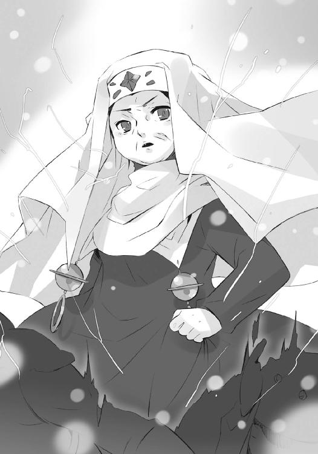
攻撃の瞬間、命中した部位に自在法が見えた。
正確には、鉄色の自在式の浮かび上がるのが、見えた。
信じられない、という風に、ゾフィーは呟く。
「防御の自在法を全軍にかけていたのですね」
「集団へと作用する特殊な部類のものではない、対象が単一という単純な防御の自在法を、兵の個々、この軍勢の全体に？ なんという、馬鹿げた真似を......」
タケミカヅチは感心ではなく、呆れを以って返していた。
この世に在る〝紅世の徒〟、また〝王〟と契約したフレイムヘイズらの持つ自在法は、大きく分けて二つの種類が在る。即ち、各々の本質に応じ特有の効果を備えるものと、共通の技として広まっているもの。具体的に挙げると、前者はデカラビアの『プロビデンス』やゾフィーの紫電、後者は炎弾や封絶である。
その後者、特有の効果として『集団への作用』を持たない、単なる防御の自在法を、個々、大集団に施すとなると、手間や威力、精度や燃費などの効率が悪くなるのは理の当然である。それを知らないわけのない卓越した自在師が、強いて今のような行為に及んでいる......その、なりふり構わない無茶さ加減に、二人は呆れたのだった。
ゾフィーは、デカラビアが戦場全域に根を張るように本体を出現させたこと、その体表を自在式で固めて自らは動かないことの意味を、ようやく悟る。
「わざわざ本体を現したのは、戦場という錯綜した場所で、無数の自在法を運用するためだったのですね」
「常のような遠隔からの操作では、兵の個々を認識できない。全域で敵味方を選別して防御の自在法を施すこともできない。ならば、自身をその中に投入して、至近の兵らを援護すればいい。という強引な考え方ですな。しかし......」
タケミカヅチは最後まで言わなかった。
二人は同時に、デカラビアの行為の危うさにも気付いていた。いかに彼が強大な〝王〟であるとはいえ、戦場全体にのたうつような巨体の顕現、その身を丸ごと包み込む転移の力、軍団規模の兵らへと個別に施す防御、これら同時の消耗に長い時間、耐え得るとは到底思えない。
（いや、耐える気を端から捨ててかかっている）
（自滅......ではく、捨て身の一手、というわけか）
感傷となる声なき声は互いに届けず、自身の立場から来る声を互いに交わす。
「すぐにでも敵陣を突破しなければいけないときに、全軍の防御を固めてしまうなんて」
「それを理解したからこその、阻止でしょうな」
なにより、感傷に浸れるほど余裕はなかった。
彼女らが幾度となく渡り合ってきた敵将・デカラビアは、捨て鉢になって自らを磨り潰すほどの向こう見ず、あるいは後先を考えない特攻に果てる自己陶酔の徒では、断じてない。
「と、なると、在り得るのは......タケミカヅチ氏」
「同じことを、考えていると思いますぞ、ゾフィー・サバリッシュ君」
疑念が、二人の胸中に渦巻いていた。
彼がこのような非常手段に訴えたのは、現有戦力では戦線を維持し得ないとの判断が下された証だが、実はそれだけではないのではないか。つまり、この短時間しか持たないだろう圧倒的な消耗の限界近くの時点で、［仮装舞踏会］の援軍が到着する見込みがあるのではないか。故にこそ、彼は命を投げ打って時間を稼いでいるのではないか。
（なんてこと！）
ゾフィーは確証もなく、急く心のまま、稲妻となって飛んだ。
戦場に幾重も聳える防壁のようなデカラビアの巨体、その間で交戦を続ける両軍の内、敵部隊の層が薄い箇所を探す。一点、見て取るや、
「──っはぃやあ──っ!!」
これまで以上に膨大な紫電を纏った落雷蹴りが、敵部隊の中央で炸裂する。
防御の自在法ごと多数の〝徒〟が吹き飛び、部隊としての統制を物理的にも精神的にもズタズタに破壊した。
「っぎゃあああ!?」「お、おのれ」「くっそおお！」「隊長、何処に!!」「うわああ!?」
「ぃやったあ！」「肝っ玉母さんに続けえー！」「かかれ、かかれー！」「うおおおおお!!」
叫喚と悲鳴、苦痛と快感、炎と血、生と死をも掻き混ぜるように、崩れ立つ〝徒〟ら目掛けてフレイムヘイズらは押し出し、切り込み、突き進んでゆく。
取っ掛かりを作ったゾフィーは、地上に留まらず、再び上空に飛び上がった。その視線が射止めるのは、吹雪く光景の奥に鎮座する大きな影......戦場の後方に墜落した『星黎殿』。
（一足飛びに、狙えるでしょうか）
（単騎で飛び込んだとて軍勢が後に続かない状況、とはいえ守備兵の大多数は戦場にあって空き家同然......安易な即断はしかねるところですな）
また、戦場のちょうど真上、地上に比べて小数の、しかし数倍からの速さで巡り輝く、炎と炎の絡み合う空域がある。空中戦を行う両軍の背後に浮かぶ黒い鏡は、宙に在る『神門』。
（そろそろ、援護が欲しいところ──）
（む、噂をすれば）
まったく見事なタイミング、まさしく望んだ時機に、事前の計画通りの予備兵力、その半数たる『神門』への牽制部隊が空を進んでくる。
色付く炎を引き、あるいはコートやマントを翻し、またあるいは翼を広げて宙を舞う彼らは通り過ぎ様、それぞれの様式に則って、前線に在る総司令官へと、交戦を前にした敬礼を送った。最後尾の一人が、敬礼の手を切るついでと、下方を指す。
ゾフィーは、探す場所を過つこともない。
「持つべきものは、良き味方ね」
「この場に在っては金言、と評すべきでしょうな」
フレイムヘイズ兵団総司令部幕僚長、『犀渠の護り手』ザムエル・デマンティウスが、残り半数の予備兵力を引き連れて、最前線に現れていた。
歴戦の勇士たるを泰然たる挙措で、卓越した指揮官たるを伸ばした背筋で、余すところなく示す初老の男は、部隊を背後一線に止めると、無駄なく速やかな歩みで、崩れた岩の上へと登ってゆく。
その足下の岩が、重厚な歩みに合わせて形作るのは、横に長い階段。
頂に立つと、一つだけ残った目で、均衡へと持ち込まれつつある戦況を眺めやる。
「一点突破を計る。築くは橋梁、上に一路。よろしいか、ジルニトラ」
「築くは橋梁、上に一路、肯定する。作戦行動を開始せよ、デマンティウス」
ザムエルは頷かず、胸ポケットから紐で下げた銀杯、ジルニトラの神器〝ターボル〟を、右の人差し指で弾いた。その余韻を握り締めること一瞬、素早く片膝を突いて掌を地に打ち、
「擾れ、擲ち、築くなり──其が名は栄誉、『ジシュカの丘』よ──」
低くも滑らかな声で、告げる。
瞬間、方形からなる自在式が踏み汚された雪原を渡り行き、染み渡った。
最初は一つ、
続いて多く、
後から無数、
戦場一帯の大地から、人の胴体ほどもある石材が数知れず吐き出され、次々と彼の前に一線を描いて集積し始めた。まるで吹き飛ぶ様を逆回しにするように、既定の場所へと吸い寄せられ、一つとして置かれる場所に狂いなく、建造は成される。
敵陣彼方に向かって伸びる、一直線の橋という形で。
橋桁の間、また近辺に蠢くデカラビアの巨体の周囲にまで、分厚い石積みによる覆いが組まれ、この活動を妨害する障壁として機能する。城や橋など、縦横即座の建造によって優位な地歩を文字通り築く、これぞ『犀渠の護り手』の自在法『ジシュカの丘』だった。
その向かう先には、出城からは豆粒ほどの大きさ、吹雪の一粒にすら紛れて見えなくなっていたものが......今や山よりも大きく、地平に蹲っているものが、在る。
敵の本拠地『星黎殿』。
己の前に伸びる橋の入り口へと一歩、足を乗せたザムエルは、
「全軍──戦列を組め!!」
満を持した号令をかけた。
これを受けた予備兵力の半数、最後の一撃のために残されていた、フレイムヘイズ兵団必殺の刃が、戦場の喧騒を貫く音を揃えて、彼の背後に整列する。
宙に浮かぶ死守対象たる『神門』へと向けた半数の予備兵力によって、地上にある［仮装舞踏会］の戦力は、さらに空中へと引き抜かれざるを得ない（しかも、空高くで繰り広げられる乱戦には、地上至近ゆえに可能だった防御の自在法による直接援護も不可能だった）。デカラビア捨て身の自在法によって辛うじて守り得ていた前線は、この最終的な攻勢によって、ようやく崩れ去ろうとしていた。
橋上、先頭を行くザムエルの、
「踏み足、揃え──突撃!!」
二度目の号令で、フレイムヘイズ兵団は全速、『星黎殿』目指して突撃を開始した。
周囲からの攻撃、橋上に乗り込んでの妨害、いずれもが散発的なもので、一丸の精鋭を阻止する決定打とはなり得ない。橋そのものも、ザムエルの力によって強化されており、容易に破壊されることはない。まさに無人の野を行くが如き、突撃だった。
遂に『星黎殿』攻略への道が、開かれてしまった。
事ここに及び、戦局の暗転を知ったデカラビアは、
《各部隊長──傾注。我は、直衛軍司令官〝渺吏〟デカラビアである》
この戦場における最後の命を下す。
《部隊長〝匣迅駕〟バティン、空中部隊は現状を維持、『神門』を死守せよ》
「お任せを、司令官閣下!!」
《部隊長〝化転の藩障〟バルマ、地上部隊を下げ、『星黎殿』前に防衛線を築け》
「了解!!」
《部隊長〝翻移の面紗〟オセ、橋の先端部にて待ち伏せ、敵軍の突撃を押し止めよ》
「はっ、誓って!!」
総員至誠の回答を得ると、
《以上》
一個の〝紅世の王〟へと戻った彼は、深きに潜む自身の頭へと、意識を戻した。
そうして、ふと、戦場を覆う光景に、
（吹雪が──止んだか）
久方ぶりに肉眼で見る世界の光景に、
まったくどうでもいいことを、なぜか思い......またすぐ、己の本分に立ち返る。
（視界が良くなれば、狙いも付けやすい）
戦場の体と繋がった頭が、やや離れた場所、東の山陰に浮かび上がっていた。
吹雪が去った静か過ぎる山間には、ただ戦闘騒音だけが、クッキリと残っている。
吹雪の消えた暗い闇夜には、ただ刀槍と炎の閃きだけが、ハッキリと残っている。
その中で最も大きな音と光の根源、橋上を突撃する部隊に向けて、十メートルはあろうかという巨大な口が開いた。巨体を守る力をギリギリ残し、力を集中し始める。
（一撃だけしか、間は得られまい）
彼の頭上から、膨大な輝きが轟音を引き連れ、落下してくる。
上空から、急所の頭部が出現するのを監視していたのだろう。
彼女が突撃に参加していない以上、分かりきったことだった。
（ゆえに、一撃を全力で、放つ）
この一撃を放つため、頭は防御の自在法を解かねばならない。
が、潜んだままでいることは、課された職責から論外だった。
最後の最後まで、自らの任を果たすことのみ考えていた彼は、
（当た、れ!!）
死の刹那、願っていた。
ゾフィーは、山間で膨れ上がった巨大な力目掛け、渾身の落雷蹴りを放つ。
常以上に紫電の火花が派手に広がっているのは、敵将を討ち取る意気を示しているわけではない。放電の先端が抵抗なく吸い取られると確認した場合......つまり攻撃を放つ頭部にも転移の自在法がかけられていた場合、即座に蹴りのエネルギーを開放、放たれつつある攻撃の威力を至近の爆発で殺ぎ、あわよくば方角をずらす、という目算を立てているからである。
が、
全ては杞憂だった。
「──」
初めて見るデカラビアの本体、長大な魚の、巨大な頭部は火花を散らし、
「──っだぁ」
全力を込めた落雷蹴りの威力を全て、平たく尖った脳天で、受け止める。
「らっしゃああああああああ──っ!!」
放たれた攻撃は、頭上からの蹴りを喰らって狙いを逸らし、大きく一線、彷徨う断末魔のように走った破壊力の塊たる鉄色の輝きは、橋の一端を消し飛ばした。
その粉砕と全く同時、
全戦場にあって蠢き巡っていた巨大な魚身の全てが、猛然たる鉄色の大爆発を起こし、粉々に吹き飛ぶ。両軍に正反対の反応を呼び起こす、一つ戦いの終結──〝渺吏〟デカラビア──の光景だった。
駆け走る中の、歓声に似た勇躍。
守り潜む中の、絶叫に似た沈黙。
この二つが地上を支配し、中空に踊る輝きと輝きも、見た目に動きに差が表れた。
今まさに、勝敗は決した。
かに見えた、そのとき。
死せるデカラビアの計ったとおりの出来事が、戦場に起きる。
それは、フランソワとグローガッハによる絶叫から始まった。
《サ、サバリッシュ総司令官！ 戦場西方、至近に突然、巨大な気配が!!》
《監視は怠っていなかったのに──やはり、単体よ!?》
彼らが注視しなければ分からないほどの小ささ。戦場外の逃亡兵、あるいは戻れなくなった斥候と見做されていた〝徒〟らしき気配が、唐突にその気配を膨らませつつあった。
打倒の余韻に浸る間もなく、吹雪も止んだ西の空に目を遣ったゾフィーは、凍りつく。
確かに、空に、飛んでいる。
光の点が数多く、見えていた。
「この、炎は」
「......」
タケミカヅチも言葉を失っていた。
彼女らは、その光の色を知っている。
僅か白みがかった紫のような──楝色。
彼女らは、聞こえてくる歌を知っている。
「幸運を願おう、勇戦を謳おう」
中心に飛んでいるのは、大きく翼を広げた、異形の鳥男。
その周囲に在るのは、大小様々な鳥の群れ。
一羽一羽が、楝色に燃えていた。
「倒すまで進もう、燃え尽きるまで走ろう」
どこまでも響き渡る歌の中、鳥たちが輪郭を徐々に変えてゆく。
異形の鳥男が口から吐く、大量の砂鉄にも見える不思議な粉を纏って。
ある程度の大きさになると、それらは突如、輪郭を明確にし、地に降り立つ。
鳥男──布告官〝翠翔〟ストラスによる高速輸送の自在法『プロツェシオン』だった。
この自在法によって鳥として運ばれた者が一人、また一人、降り立ってゆく。
滔々と響き渡る歌の中で、次々と。
「友の火を踏んで生きよう、敵の火を踏んで死のう」
楝色に燃えて、整然と居並んだ、それらは全て〝徒〟の軍勢。
デカラビアの命を代価とする時を渡ってきた［仮装舞踏会］の援軍。
そして、ストラスとともに最後の一人、歌の歌い手が、戦場を足に踏む。
「灰も残らぬ我らが身、せめて爪牙の証をば、残そう──遺そう──」
重たげな双頭のガスマスクを被り、ボロのマントを纏った、案山子を想起させる異形。
デカラビアより［仮装舞踏会］全軍の指揮権を移譲された〝紅世の王〟。
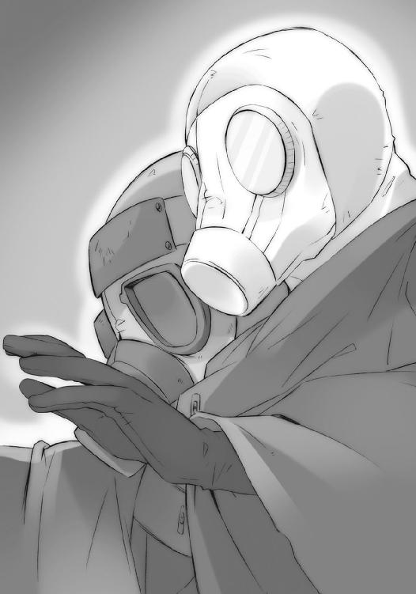
外界宿征討軍総司令官〝煬煽〟ハボリムだった。
断章 数日前の話 その２
マージョリーの枕元に座った佐藤は、抱えた神器〝グリモア〟、マルコシアスに、初めての任務中に起きた出来事、自分が得た諸々の情報や戦利品について語ろうとした途端、
「おっと、んーなことより」
いきなり制止された。
「ちょいとバーまで、顔貸してくれや」
出鼻を挫かれて、思わず肩をガクンと落とす。
「んなこと、って」
彼の面にありありと見える、自分の任務について語りたい気分、ようやくの再会を果たした女性との離れ難さ、それらを十分に察した上で、なおもマルコシアスは促す。
「いーから、ほれ」
「......分かった」
少しの間をせいぜいの抵抗として、佐藤は従った。
フレイムヘイズの情報交換・支援施設たる外界宿での奉職を目指す彼にとっては、マージョリーと契約する〝王〟たるマルコシアスも師匠、あるいは教官の片割れなのである。
改めての足取りも重く、彼は自宅に設けられた室内バー、常ならマージョリーが居候の自室として陣取っているはずの部屋へと、マルコシアスを運び込んだ。カーテンが閉まって暗い部屋の、電灯を点ける。
「......」
現れた部屋の全景に、佐藤は不吉な空白を覚えた。
彼女がいた間は大抵散らかり放題だった室内が、その不在に伴い、ハウスキーパーらによって綺麗に片付けられていたのである。ほとんど唯一の私物である洋服が──全て綺麗にクリーニングされ、クローゼットに入りきらない分は、他の部屋から持ってきたものらしい洋服掛けに並んでいる──部屋の隅に残っていなければ、不在を消失と錯覚してしまいそうだった。
「よう」
「......っ、あ、ああ」
佐藤は心に湧いた不吉さを追う払うように首を振って、マルコシアスをソファ前のテーブルに置いた。当然のことと自分も座ろうとして、
「おいおい、おめえまで座ってどーするよ」
「え？」
また止められた。
怪訝な顔をする未熟な若者に、マルコシアスは溜め息混じりに言ってやる。
「部屋に戻んな」
「え？」
先と同じ反応を返してから、沈黙の数秒を経て、
「──っあ!?」
ようやく彼の行動が、二人への気遣いであったことを悟って、佐藤は内心外見とも、大いに動揺した。どんな表情になっているのか分からない自分の顔、とりあえず口元を、思わず掌で強く叩くように隠した。耳まで赤くなって、ソファの背に手を掛けてもたれかかる。
「で、でも」
「そのために帰ってきたんだろうが」
固まった足を動かすためには、一つ、
「まあ、うん」
「エータや嬢ちゃんから、話は聞いてんだろ？」
二つ、
「それ、なりに」
「だったら、とっとと行け。いつまでも言わせてんじゃねえ」
三つ、
「いや、えと......」
「行け」
「......はい」
四つの後押しが、必要だった。
佐藤は、たしかに田中と最初に連絡を取った際、遠回しに聞かされている。マージョリーを目覚めさせられるかどうかは、偏に自分の行為にかかっていることを。親友からの忌々しげなからかいとして、また嫉妬を込めた元・子分たる少年による助言として、
《あんだろ、ほら、眠り姫の目を覚ます方法が》
そんな、なすべき行為のことを。
もちろん妄想としては、そういういい格好を思い浮かべたこともないではない......というよりあったが、やはり実行するとなると、相当な度胸が要求された。相手が自分の想いを懸けてきた人であればなおさら。周りが知っているというオマケまで付いて。
それでも、
（マージョリーさんが、初めて俺を、必要としてるんだ）
若者は自惚れの力を借りて、度胸を限界まで振り絞った。
よし、とわざわざ声に出して部屋を出て行こうとする、その背中に、
「ケーサク」
マルコシアスが最後の助言を与える。
「ここに入ったときみてえなシケた面してたら、目覚めるもんも目覚めねーぞ。それに、カッコつけられる場面ってな、どこまやってもやり過ぎってこたーねえんだ。気張れよ」
「ありがとう、マルコシアス」
「ヘッ、万事上手くいってから言いやがれ」
小馬鹿にする声を扉の向こうに、佐藤は歩き出した。
不思議なことに、バーを出た途端、先の動揺が嘘のように去ってゆく。助言の効果で腹が据わったのか、それとも単に、行為への指摘を受けたのが他人の前だったからなのか。
（事に臨んで冷静になる......って柄じゃ、俺は、ないよな）
理由はともかく、足取りは現に、速く、確かで、大股になっていた。家へと帰り着くまでは感じていた、切羽詰まった焦燥感が、消えている。
（マルコシアスは、俺をこうするために話したんだろうか）
代わって胸に在るもの、足取りを速めさせているものは、胸を締め付ける切なさ。それは一見、冷たく静かなようで、焦燥以上に熱く激しい。
部屋に入り、眠るマージョリーの傍ら、ベッドに座って、その想いを確かめる。
「──マージョリーさん」
自然と、声を眠りの彼方へと届けるように、その寝巻きの肩に手を置いて、語りだした。
「起こったこと全部、聞きました」
彼女に残された全てである復讐を取り上げ、空っぽにしてしまった怪物の正体。
それが彼女自身の鏡像であり、彼女に代わって復讐を行ったに過ぎないこと。
彼女の数百年に渡る彷徨が、彼女自身にとって意味のないものだったこと。
「でも、俺たちには、間違いなく意味はありましたよ」
助言された通り、自分にできる限りの格好をつけるつもりで、強者への憧れではない、女性への愛情だろう想いを込めて、話を続ける。
「田中に、シャナちゃんに、吉田さんやオガちゃん......そうさ、坂井にとっても。御崎市の人間も皆、そうだ。貴女自身にとって意味がなかったとしても、手段が乱暴でも、行き違いが幾つあっても、戦って〝徒〟を倒した分だけ、助かった人はいるんだ......なにより」
ほんの微か、肩に置いた手に、力が入った。
「俺にだけは、絶対の意味がある」
開かない眼を見つめて、その開くことを願って、言う。
「フレイムヘイズとして世界を守るとか、人としてなにかをしてくれるとか、そんな理由があろうとなかろうと、貴女を他の奴らがどう思おうと、貴女が自分自身をどう思おうと......俺にだけは、貴女が生きていること、貴女がここに在ること自体に、絶対の意味があるんだ」
声はどこまでも熱く、
「貴女を生かすことだけに全てを賭ける俺にとっての、存在理由は貴女なんだから」
微笑みはあくまで穏やかだった。
「その貴女が俺を待っていることを、俺を必要としてくれていることを聞かされて、嬉しかった。俺が、貴女のために生きていることを......貴女が、俺にとって絶対の意味を持つ存在だってことを......俺は、この嬉しさを感じることで、本当に分かったんだ」
言う間に、顔に顔を、近づける。
「貴女の眼が覚めたら......まず、それを聞いて欲しい」
そして、唇と唇が、触れ合った。
柔らかさと、その余韻。
佐藤の痺れる間に、触れ合ったそこから、
「 ──」
安堵の端とも、情火の欠片とも感じられる、微かな吐息が。
「マージョぅわっ!?」
顔を離して目覚めを確認しようとした彼の、マージョリーの肩に掛けていた手に、新たな手が添えられ、押さえた。弾みで佐藤は倒れこみ、二人は頬と頬を寄せる。吐息に乗せた小さな声が、寄せられた頬から耳へと零れ落ちた。
「聞こえてた、わよ......さっきも、あのときも」
紛うことなき、それは『弔詞の詠み手』マージョリー・ドーの声。
佐藤は胸に熱いものが湧き、それが涙として溢れつつあることを感じた。そんな、自分の情けない姿を隠すために、相手の頬から耳に同じく、問いとしての声を零す。
「あの、とき？」
「全てを知って、壊れそうになったとき......エータとカズミの声が、ね」
マージョリーは佐藤の手に添えていた自分の手を、離れないよう、しっかりと押さえた。
「貴方が、まだ私のために何もしてない、私が、貴方に恋されてることを感じろ......だから死ぬな、ってね。あのとき、確かに私は貴方を思って、自分からの気持ちを、感じた」
「自分からの......マージョリーさんからの、気持ち」
心の奥底に留め、しかし見返りは求めない、という誓いから強いて無視していたもの。佐藤は、それをマージョリーが口の端に乗せたことへの喜びと怖さに、緊張した。
寄せた頬を離さず、マージョリーは少しだけ、自嘲する。
「それが在ることに、驚いて......疑って......分からなくなって......だから、眠ったのよ」
「なぜ？」
「......」
躊躇らしい間を置いて、答えが。
「それが本当に在るのなら、さっきので感じられるかも......その時を目当てに、もう少し消滅を待ってもいいかな......なんて思ったのよ」
「......」
佐藤は、今という結果を受け止めて、改めて尋ねる。
「......感じられたん、ですね」
「私を、消滅させないほどには、ね」
誓った心が、感動の大きさと事実の重さに決壊してしまうのを、佐藤は感じていた。
「十分です......ええ、十分です、俺にとっては......！」
頬を合わせて横たわる女性を渾身の力で、彼女にとっては微々たるものだろう、それでも自分にとっての渾身の力で、抱きしめる。その体は、驚くほどに柔らかく、壊れてしまいそうなほどに華奢だった。
マージョリーは再び頬を寄せ、今在る場所、自分の居場所に安らぐ。
「ありがとう、は侮辱かな、ケーサク」
「なんでもいいです、俺は......貴女がいるだけで」
気の利かない、しかし全てを削ぎ取った気持ちを、佐藤は届けていた。
安らぎの中、眼を瞑ったマージョリーは問いかける。
「それだけじゃ、ダメ。だから、私は女として、男の貴方に訊くわ......ケーサク、生かすとか、賭けるとかじゃなくて、私が好き？」
「はい、好きです」
微塵の逡巡も遠慮もない、即答だった。
マージョリーは、寄せていた頬を離すと、
「覚えてる、かしら」
妙なる微笑と共に、並んで身を横たえる若者と見詰め合う。
「フレイムヘイズは強すぎて、力一杯抱き合うこともできない、って話」
「え、ええ」
戸惑いつつ答えた佐藤の胸に、軽く人差し指が触れた。
瞬間、自在式が広がって、その体に得も言われぬ力が湧く。
「これ、は？」
見た目は悪戯っ子のように、奥には重いものを隠して、マージョリーは笑った。
「短時間なら、この程度はできるの。でも、ああやって予防線を張っとかなきゃ、不用意に近づいちゃう、でしょ？ あのときはどっちも、そうでなきゃ、いけなかった」
佐藤は今さらの動悸を感じつつ、見つめ合う女性の頬に触れる。
「今は......？」
「確かめて、みれば？」
二人はもう一度、唇を合わせた。
３ 神
両界の狭間で、完全に造化の確定された『詣道』の最奥。
フレイムヘイズの成れの果てたる色付く影も入れない、道を辿る者にとっての終着点たる地には、中途の道程にも在った不可思議な光景、その最たる物が広がっていた。
管状をなす大地の中空を突いて、無数の高層ビル群が立ち並んでいるのである。
見渡しても見上げてもコンクリートとガラスの塊が埋め尽くす、雲も空もない世界は、まるで伸び上がる迷宮、あるいは口を閉じつつある巨大な生物の牙と見えた。
その世界の最果てに、周囲のビル群と馴染まない、行き止まりの壁が在る。
緩く反り上がるカーブを描く大地から、垂直に立って遮断する形ではない。管の径を急速に狭めて、その最後を閉じた円形の蓋のような、まさしく最果ての帰結たる形だった。
壁の中央には、無骨かつ執拗な装飾を施された、四角く広い入り口が開いている。
周囲の地面から上がって行くための階段もない、空を飛ぶ者が到達することが前提となっているこの入り口から、［仮装舞踏会］指導部は足を踏み入れていた。
そこは、彼らにとっての聖地、目的地とも言える社──『祭殿』。
内部の構造は、柱を両脇に備えた奥へと続く広大な廊下のみと単純だが、それらを組み上げる構造物は全て黒ずんだ青銅の塊で、精密な組木のように互いを絡め繋げている。総体としては単純な形ながら、その個々は角ばった凹凸に富み、表面には四角い渦が無数彫り込まれていた。各所に掲げられた弔旗のような漆黒の幕も、場の荘厳さをより印象付けている。
暗く澄んだ空気の揺蕩う中を進んでゆく一行の先頭を、
「嗚呼──!!」
切々たる声を張り上げつつ、切るように鋭く歩むモノが在った。
緋色の凱甲と衣で装い、漆黒の竜尾を後頭に伸ばす少年......［仮装舞踏会］の盟主、その代行体たる〝祭礼の蛇〟坂井悠二である。彼は歩みを止めることなく上方を仰ぎ、
「嗚呼、嗚呼、ここまで来たか、この『祭殿』まで来たか──!!」
迎えるように、迎えられるように、両の手を一杯に広げた。小さくも強き全身には、まさに今という時を数千年待ち続けた、深淵の神の歓喜が漲っている。
その胸元に下げられた、黒い宝石に交差する金の輪を意匠したペンダント、
「......」
神器〝コキュートス〟に意思を表出する〝天壌の劫火〟アラストールは、『祭殿』の内に入ってから、口を噤んだままである。
創造神〝祭礼の蛇〟と同格の存在たる天罰神、『炎髪灼眼の討ち手』シャナと契約し異能の力を与える彼は、遂に迎える、迎えてしまう時の中で、ただ訪れる状況を受け取るだけの存在となっていた。もはや、なにを言っても翻る場面ではない。全てを情報として持ち帰る以外、彼に為すべきことはなかった。
逆に、同行者らの足取りは、彼の内心を嘲笑うかのように、どこまでも軽い。
「もう、動き出しているようですが」
後に続く、白く大きな帽子とマントに着られるような少女......三柱臣の巫女〝頂の座〟ヘカテーが、盟主の今にも破裂しそうな感情に当てられ、やや頬を紅潮させて呟いた。
その右、灰色のタイトなドレスに幾つもの装飾品を付けた妙齢の美女......三柱臣の参謀〝逆理の裁者〟ベルペオルが、右を欠いた左と額、二つの目で行く手を凝視しつつ、言う。
「誰にとっても時は惜しいからね。御座に着かれる準備くらい、しておかなくては」
「たしかに、ここでは外の戦況も分からんからな。早々に用を済ませて帰りたいものだ」
同じく左、ダークスーツにサングラス、オールバックにしたプラチナブロンドという長身の男......三柱臣の将軍〝千変〟シュドナイが、火をつけないタバコを揺らして笑った。
「っんなぁーにを言ぃーっているんです!? こぉーんなェエーキサイティングな宝の山にモォーグモグ潜り込んで、すぅーぐさま帰るなど、愚ぅーっ愚愚愚のっ、骨頂ですよぉー!?」
三人の後ろ、分厚い眼鏡をかけ、髪をベルトで纏め、白衣を纏ったひょろ長い男......〝探耽求究〟ダンタリオンこと『教授』が、背負った珍妙な機械を弄りながら叫びを上げる。
「でも、サンプル採取は終えましたし、後は解放と崩壊のデータさえあればひはひひはひ」
教授の傍ら、膨れた発条の頭にガスタンクのように丸い体の〝燐子〟......『我学の結晶エクセレント28─カンターテ・ドミノ』が、頬をマジックハンドで抓られた。
最後尾をフラフラと付いてくる、目深に被った三角帽、襟を立てた燕尾服、という面妖な楽師......〝笑謔の聘〟ロフォカレが、手にしたリュートを爪弾き、ゆるやかに歌い上げる。
「光を夢見、道を敷く、砕く運命が其の道を......」
各々が言い合いつつ、
しかし歩みはあくまで速く、
広大な『祭殿』の行き着いた先に、
「夢──」
彼らが膨大な時と労力を費やし目指した、それは在った。
「そう、夢やもしれぬ、とこの地を歩みつつ、幾度となく思った」
言う間に、少年とは異なる声が、比重を増してゆき、
「覚めれば消え果てる、数千年のまどろみの内に垣間見た、刹那の幻やもしれぬ、と」
完全に変わった声で感慨を漏らし、それを仰ぎ見た。
一同も倣う。
視線の集う先に、世界を閉ざす果てのような、黒ずむ青銅の絶壁が在る。
表面に刻まれているのは広大な星図と見える、幾百重にも連なる同心の環。
表面各所には、零れる影とも見える黒い炎と、長くのたうつモノの意匠が見える。
「だがこれは──夢幻では、ない」
そして、
環の中心には一つの小さな、彫刻ではない生身の眼球が据えられ、また環の一部を砕いてうねる頭と尾、幾つかの胴を垣間見せる、巨大な黒き蛇骨が、彫像のように固まっていた。
まるで、
「全てが──ここに、現に、在る」
天を荒らし暴れ回っているようにも、天に押し潰されもがいているようにも見えるそれこそが、太古の昔〝紅世〟より渡り来、フレイムヘイズらによって不帰の秘法『久遠の陥穽』で両界の狭間へと追逐された創造神......〝祭礼の蛇〟だった。
「長く、待たせた」
代行体ならぬ〝祭礼の蛇〟は己に告げ、感慨というにはあまりにも大きく、感動というにはあまりに深い、この地への到達という光景を、強く噛み締める。ただただ御しきれない感情だけが、どこまでも膨らんでゆく。
「が、それも今、終わる」
来訪と追逐から数千年、両界の狭間に彷徨いながら、『詣道』を作り、『大命詩篇』を編み上げ、巫女と交信し、代行体を作り上げ、意識を同調させ、『神門』を開き、『祭殿』まで辿り着いた、全ての成果が、今──ここに実りつつあった。それを思うだけで、彼の精神は狂騒し、体は軋みをあげ、表情は笑みを通り越す。
「否、始まる」
両の掌を強く握る内に、沸々と湧き上がる思いに押されるように、ゆっくりとその身が浮かび上がっていった。蛇の頭蓋骨正面に位置してから、下方の眷属へと声を放る。
数千年、待ち望んでいた、声を。
「──余を、まどろみより、覚ませ──」
「......は」
ベルペオルも万感の思いとともに答え、前へと進み出た。
同心円の中心で、今も彼女を見つめている眼球。これこそ、かつて『久遠の陥穽』発動に際し〝祭礼の蛇〟へと託された彼女の右目、本来は眼帯の下に収まっていたものだった。
名を称して、『旗標』。
試行錯誤する『大命詩篇』を、受信者たる巫女・ヘカテーへと正確に届けることも、両界の狭間という無限の大海の中で、業苦や艱難を『詣道』へと織り成し伸ばすことも、常に彼女の在る場所を見続ける磁針たる、この『旗標』あってこその業。
本来であれば方途の見当も今在る場所も自覚できないはずの両界の狭間において、一筋の光明として〝祭礼の蛇〟を導いた、全く小さな眼球......これこそが、不帰の秘法たる『久遠の陥穽』を根本から覆した元凶なのだった。
前へと進み出たベルペオルは、この誇るべき自らの一部に目を遣り、動かした。
この『祭殿』における『旗標』は〝祭礼の蛇〟本体の統括管理という副次的な役割も宛てがわれていた。今、彼女らが在る社は、『大命詩篇』の構成や『詣道』の創造という、精神活動以外の不要な部分......つまりは神としての体を、帰還のときまで休眠させておく、〝祭礼の蛇〟の巨大な神床でもあるのだった。
ベルペオルは『祭殿』に入ってすぐ、この神床から本体を解放する準備を『旗標』にさせている。黒き蛇骨の周り、所々に炎が漏れ出ているのは、その証だった。
数千年の時を経てかけられた声で、これら役割が、遂に終わる。
「務め、ご苦労」
告げたベルペオルと『旗標』、同じものである、目と、目と、目が、合った──瞬間、彼女の眼帯が弾け、環の中心に嵌め込まれていた目が、金色の火花となって彼女の許に戻った。
「......さあ」
見開かれた三つ目を合図に、促すような言葉を号令に、始まる。
空白として残った環の中心に、代わって黒い炎が点った。
数秒の間を置いて、
目の嵌めこまれていた中心の環が、回り始めた。まるで制動が解かれたかのように、不意に速く、無闇に激しく。環は、摩擦に火花を散らすように黒い炎を零して数回転、唐突に止まった。すると、その一つ外側の環が逆方向へと数回転、また止まる。さらに、その一つ外側の環が逆方向に、止まってはまた一つ外側の環が逆方向に、と互い違いの回転と静止は、どんどん外側へと拡大していった。
黒い炎の漏出も、回転の環が大きくなる度に勢いを増し、巨大な蛇骨を押さえつけた円全体が軋みを上げて細かく震え始めている。いつしか、その細かい震えは『祭殿』全体にまで波及していた。黒ずんだ青銅の、床が、柱が、天井が、漆黒の幕から暗く澄んだ空気までもが、前兆としての震えを増しながら、全てを解き放つ瞬間を目指している。
悲願、待望、成就、という言葉が現実のものになろうとしていた。
代行体〝祭礼の蛇〟坂井悠二は、宙に在って、自身の蛇骨に残された眼、光を欠いた虚ろな水晶玉の前で、願うように、あるいは時の到来まで伏せるように、僅か頭を垂れる。
その胸元、討つべき敵の首領、決して目覚めさせてはならない神と面したアラストールは、しかしなにをできるでもない神器たる己が身に歯噛みし、儀式の進行をただ見据える。
下方、取り戻した三つの眼を陶然と細めるベルペオルを中心に、紅潮して時を待ち侘びるヘカテーを右に、凶暴な笑いを浮かべて事を眺めやるシュドナイを左に、三柱臣らが侍う。
その後ろ、いつの間にかベルペオルの宝具『タルタロス』の作った、音声を遮断する輪の内で、教授とドミノが機器を操っては騒ぎ、ロフォカレも呑気にリュートを爪弾いている。
そして、
円の縁、最後の回転が、終わらない。
今まではすぐに止まっていた回転が、どこまでも加速して行く。加速し続けて、その構造の支え得る限界点に迫っていった。ほどなく回転は歪みを生じ、外周の環が周囲と擦れる。歪んだ環はすぐに内部へと伝播して、高速回転との落差から一気に──崩壊した。
代行体〟祭礼の蛇〟の前にある、眼。
光を欠いた虚ろな水晶玉、その奥底に、銀色が、射し、点り、光り、輝き、
創造神は、目覚めた。
黒い炎を巻いて崩れる同心円の封印を砕いて、大重量の蛇骨が全形を現す。
広大な『祭殿』の内が、洪水に見舞われたかのように、神の体で溢れ返る。
黒い肋骨が床を砕き、黒い尾骨が柱を折り、黒い頭骸骨が天井を突き砕く。
身じろぎを終えると、首を振り上げ、ないはずの胸郭に一帯の空気を吸う。
溜めて一瞬、放たれるのは、
「──オオオオオオオオオオオオオオオオオオオオオオオオオオオオオオオ──ッ!!」
数千年を経た、歓喜の咆哮。
地響きすら伴う、人間が聞けば耳を肺を潰してしまうような音の爆発が、内から『祭殿』を呆気なく吹き飛ばした。余波を受けて、近辺にある高層ビルの上層部が爆砕し、ガラスとコンクリートが輝きと重さを伴う暴威の豪雨となって、一帯に降り注ぐ。さらなる追い討ちとして、黒い炎の塊と青銅の塊が一帯を襲い、狭い世界は粉塵満ちる混沌の巷と化した。
その中、
「なぁーんという、そぉーこに在るモノ分かるモノ！ 新・怪・奇・超常！ つぅーまるところは現象のっ、オォーンパッレェード！ 胸を沸ぁかせる、ェエーッキサイティング!! ドォーミノォー！ キーッチンカチンとデータ収拾は続けていぃーるでしょうねえぇー!?」
「はは、はいでございますです、教授！ 各観測機器とも、正常に作動中〜！」
「ほう......」
輪になっていた『タルタロス』から解き放たれた三人は、無造作に放り出され、
眷属たる三人は、彼らの創造主が一時、静かに潜む粉塵の中へと、眼を凝らす。
「こうして遠くから出迎えるのも、久しいな」
「まだ、最後の仕上げが残っているよ。ご自身では、膨大な『大命詩篇』から次なる手順を動かす式を拾われるのも一苦労だからね。こういう時に役立ってこその眷属さ。ヘカテー」
「分かりました」
粉塵舞い上がる奥、黒い炎と銀の影が陰陽を過ぎらせる中央に、うっすらと一つの巨大な影と、一つの小さな影が、浮かび上がってくる。
鎌首をもたげる黒い蛇骨と、その鼻先に静止する代行体である。
まるで確かめ合うように、銀に輝く眼、漆黒の瞳、互いが互いを凝視していた。
それを遠く見つめて、しかし表情は乏しく、巫女ヘカテーが、その本分......神の意を受け、神の現れを助ける、巫女の本分たる力を発揮する。手に在る大杖『トライゴン』が鋭く振るわれ、三角形の錫杖頭にはまった遊環が、シャーン、と透き通った音色を奏でた。
巫女の意を受けた『大命詩篇』が稼動を始め、黒い蛇骨と代行体の周囲に変化が起きる。
「──〝頂の座〟ヘカテーより、立ち居たる御身へ──」
彼らを祝う花吹雪と見える、明るすぎる水色の三角形が大小無数、舞い始める。三角形はぶつかっては砕け、砕けては新たな三角形を増やして、未だ収まらない粉塵と、瓦礫を敷いて聳える黒い蛇骨を、幻想的に彩ってゆく。
「──此方が大杖『トライゴン』に、御身が結装を、委されよ──」
砂粒ほどまでに細かく砕かれた三角形は、ただ舞うだけでなく、雪のように瓦礫へと落ちては解ける。解けて、『祭殿』を形作っていた青銅塊にのみ、波紋となって広がる。
「──委されよ──」
繰り返される声に答え、幾つもの青銅塊が浮かび上がる。浮かび上がって、聳える蛇骨へと飛んでゆく。これらは、休眠に際し切り離され、神床となっていた力の結晶である。
「──委されよ──」
次々と飛んでくる青銅塊は、勢いよく蛇骨にぶつかっては泡と弾け、黒い炎となって全体を包んでいった。その燃え上がる力の内で、骨には肉が加わり、肉には血が通い始める。
「──委されよ──」
巫女〝頂の座〟ヘカテーに促された睡余の神は、急速にかつての莫大な力を、豪壮なる姿を取り戻してゆく。炎が凝縮され、また新たに燃える、心臓の鼓動にも似た作業の中で。
「──」
かつてと同じ、その存在を認めたヘカテーは、笑みを浮かべる。微笑ではない、心からの喜びの笑みを。ベルペオルも、シュドナイさえも、各々のやり方で同じ笑みを浮かべていた。
そして、当人。
飛び交う青銅塊に気を払わず、燃え上がる炎にも動じず、代行体は未だ同じ場所で浮かんでいる。神の復活による変調も、ましてや消滅の気配なども見せず、ただ今は他者の視点から、完全なる存在を取り戻した己が体躯を眺める。
両眼と影から零れる銀光に浮かぶ真黒の体表は、幾らか鋭角を備えた細い頭部を兜に、長大な蛇身を隙なく覆う鱗を鎧に見せ、地鳴りを伴って佇む全容は、燃え盛る黒い炎を随所に纏って、〝紅世〟真正の神なる威容を、狭き全地に知らしめていた。
深く頷き、大きく笑って、〝祭礼の蛇〟は、創造神たるの声で言う。
「よく、やった。眷属『三柱臣』──我が誇りよ」
言って、両手を強く一杯に広げた。
応じて、蛇身が首を振り上げ、同じ意を込めた咆哮を轟かす。
宙に在る三人は、これを喜色とともに正面から受け止め、別の三人は翻弄され墜落した。
と、その胸元から、
「我が同胞にして列なる一柱、創造神〝祭礼の蛇〟よ」
この場に在るもう一人、アラストールが口を開く。
「我は、これより『炎髪灼眼の討ち手』シャナの許へと、帰還する」
全てを見届け、これ以上得られるものがないと理解した、決別の言葉だった。かつてないほどに長く、ともに居続けた他者の、創造神ではない方......少年に向けて、彼は言う。
「坂井悠二──これが、今生の別れとなるのか」
「！」
本体が復活した現状における、改めての確認だった。
前々から、代行体は使える、消したりはしない、と〝祭礼の蛇〟本人からも、それ以外の枢要からも聞いてはいたが、いざ実際に本体を得て、気が変わることは十分あり得る。
ただでさえ、互いに現状の維持を約束したわけではなく、またする気もなかった、ただの宣告に拠って立つ状態なのである。ゆえにこそアラストールの言葉は、単なる確認なのだった。
その単なる確認が、しかし〝紅世〟の魔神が示した可能な限りの優しさであると分かっている少年は、笑う。喜びとそれ以外を、等分に混ぜて。
「ありがとう。でも、心配は要らないよ、アラストール」
その気休めにも似た言葉を、
「そうとも。余らは──共に征く」
創造神の異なる声が、誓うように継いだ。
また少年の声で、少年の表情で、一先ずの別れを告げる。
「また、すぐに『星黎殿』で会えるさ」
「......さらばだ」
修辞を飾らず、アラストールは紅蓮の火の粉を撒いて、去った。
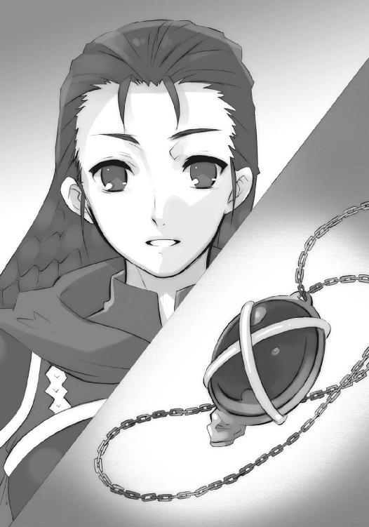
代行体たる少年は融け合った心の内で、言葉とは裏腹な、近い再会の予感を覚えている。理屈の面では、捕らえた少女が逃れられるとは思っていなかったが、それ以外の面では、反対のことを思っていた。手段など想像も付かない、推測ならぬ予感である。
（ともあれ）
そう、どちらが思ったのか、名残のような紅蓮の火の粉を握り締めることで、踏ん切りをつけた。心は一気に色を変え、［仮装舞踏会］盟主たるの本分に立ち戻る。
（この地で為すべきことは、終わった）
外部の様子は、この世界の狭間からは一切掴めない。戦況の有利は動かないだろうが、長居するのは構成員の誰にとっても怠惰であり、以上に害悪であろう。
（続いて為すべきことは、山ほどある）
鋭く手を払って転身した代行体〟祭礼の蛇〟坂井悠二は、本体たる蛇身の鼻先へと降り立った。そうして、夢に見た一言を、その後方へと同じく降り立ち控える眷属三柱、また同行者らへと、盟主としての声で号令する。
「今ぞ、還幸の時だ」
その本体が、挙動の予兆に鈍く震えた。
長大な蛇身が、地鳴りを帯びて宙へと浮き上がる。周囲に散らばる瓦礫も、吊られるように行を共にし、さらには『詣道』を形作る地層そのものさえも、緩く撓んで引き寄せられる。
「待つ者は多く、待つ事も多い」
彼の背後、蛇の頭と首の継ぎ目へと飛び移った者らへと視線を一巡り、
「いざ」
言うや、創造神〝祭礼の蛇〟は、今まで彼らが辿ってきた『詣道』を遡り始めた。
目指すは『神門』、その先に広がる、世界。
蛇身が発った後方、『祭殿』の鎮座していた大地の最果てが、轟音を上げて砕け落ちた。
粉々に砕け、狭間に落ちて、跡形もなく消えてゆく。
その向こうには、暗いのか明るいのかすら判別できない、ただ大地が落ち逝く動きから、猛烈に渦巻く海とも、極度に揺らぐ陽炎とも感じられる、不可思議な空間『両界の狭間』が無辺の領域を広げている。
創造神〝祭礼の蛇〟が作り上げた『詣道』は、この世へと至る業苦や艱難、不可能という状況を、『道』という実体へと、神の剛力によって組み替え織り成した、仮初の存在である。それを支えていた創造神が、望みを果たし通り過ぎれば、彼にとって意味のない後ろ、存在意義を失った『道』は理の当然として、消え去るのみだった。
今、その破滅の光景を眺めているのは、
「んんーっふふふ！ 一つの世ぇー界が崩ぅーっ壊する光景っ！ のぉーみならず、歪みに拠ぉーらぬ自然な、まぁーさしく純・ナマの！ 両ぅー界の狭間を、継ぃー続的に観っ測できるとは！ なぁーんというェエークセレントな状況!! 『我学の結晶エクセレント２５２５４６─論議の笈』サブスイィーッチ・オン!! 全っ方ぅー位、観測開ぃーっ始!!」
叫びつつ、腰から上をグルグル回転させ始めた教授と、
「教授、装置の方に回転アンテナは付いてるんでございまふへふひははは!?」
頬をそのマジックハンドで抓り上げられるドミノの二人。
ロフォカレは三角帽の下に視線を明かさずリュートを爪弾き、
「駆けよや前へ、飛べよや先へ、為すべきものを、ただ目指し──」
残る三人は、ただ佇立する。
もはや動いて示し、語って諮るほどのものは、彼らにはなかった。まさしくロフォカレの歌い上げた歌のとおり、今は造物主と共に、為すべきものを目指し行くのみ。彼らが動き、諮るのは、今の状況が変わるときだった。
立ち並ぶ高層ビル群、『詣道』最奥の中心を、創造神が驀進する。
恐るべき質量の飛び行く風圧が、ガラスを割り割き、
撒き散らされる黒い炎が、軌跡をなぞって火の手を上げ
巨大な蛇身が掠り激突する衝撃が、ビルを軽々と薙ぎ倒し、
世界の崩壊が、一切を巻き込み両界の狭間に飲み込んでゆく。
圧倒的な存在が、世界を掻き分け、何物も跳ね除けて、突き進む。
管状の『詣道』、大地のみで構成された世界は、造物主によって無に帰していった。
それら凄烈極まる嵐の吹き行く中、
「──」
最初に気付いたのは、シュドナイ。
「──ほう、しぶといな」
「どうしたね？」
ベルペオルが訊く間に、彼は軽く一歩、熱っぽく行く手を見つめるヘカテーの傍らに踏み込んで、手に在る剛槍『神鉄如意』を振るった。
「っふん!!」
穂先は、蛇身の丸みに沿って飛び上がってきた二つの人影を腹から四つに断ち割って、後方に口を開ける両界の狭間へと──途上で教授のアンテナに掠らせて──追い落とす。
「ノォ──ゥ!!」
叫びを無視し、ベルペオルが三つの目で見やったそれらは、
「奴らが、なぜこの深部まで......いや、なるほど」
幾度となく『詣道』の途上で干戈を交えた色付く影、秘法『久遠の陥穽』発動に巻き込まれた、太古のフレイムヘイズらの成れの果てだった。
彼女らの在る『詣道』は、大地となる管の内側を確たる存在とすることで成り立っている。それはつまり、狭間に在る他のものを排除することでもあった。ゆえに夾雑物たる彼らが道の内に現れる際は実体を保ち得ず、茫漠たる色付く影となっていたのである。
本来であれば〝祭礼の蛇〟による『詣道』実体化作業の熟練度上昇によって、排除の度合いの増した深部で、彼らがその内に存在を許されるはずもない。
が、しかし今、『詣道』はすぐ後ろに彼らが漂う両界の狭間を大きく開けている。崩壊によって開いた道を執念から辿って、彼らはフレイムヘイズとして最後の攻勢に出たのだった。
ベルペオルは、数千年の漂流で人間としての意識すら喪失した者らの、使命完遂に対する闘志、もはや決定的な阻止とは成り得ない妨害、二つが齎す徒労を嗤う。
「たしかに、しぶとい......この期に及んで、まだ諦めないとはね。まったく、契約者も討ち手も、碌に考える力なんか残っちゃいないだろうに、ご苦労なことさね」
「力は力だ。背中から転げ落ちる無様で、我らが盟主殿の門出を飾ってくれるなよ」
彼女が最も堪える釘を刺して、シュドナイは傍ら、小さな眷属に目をやった。
そのヘカテーは変わらず、蛇身の行く先しか見ていない。巫女の本分を果たす時を向かえた高揚が、常の彼女からは想像もできないほどの喜びを、その横顔に与えている。
自分が眼中にないと知った男は苦笑して、せめてと視線の向きを揃えた。果ても見えない広大な『詣道』を前に立ち、蛇の行く先を定めている少年に、自身の職掌から声をかける。
「我らが盟主殿、その宝具を惜しまれるならば、ご注意あれ！」
僅か振り向いた〝祭礼の蛇〟坂井悠二は、
「無論、惜しい」
少年の声で言って、何処からか片手持ちの大剣『吸血鬼』を抜き放った。
と、その正面、振り向いた隙を狙ってか、新たな人影が槍を持って突きかかる。
「！」
悠二は振り返らず、その首の向きのまま後頭の竜尾を振るった。太い鞭とも撓る棍棒とも見える漆黒のそれは、迫る槍を難なく弾き飛ばす。さらに、振るった動作を加速させ、一回転した悠二は大剣の横斬り一閃、影を薙いでいだ。槍を追って伸びた両腕、その間にあった首、三つが冗談のように軽く飛ぶ。
舞踏のような手並みにシュドナイは賞賛の口笛を吹く傍ら、落ちてきた首と腕のない影を一蹴り、後方に流しやった。そのついでと、懲りずに観測を続けている教授とドミノ、慌てて走り回るロフォカレに警告も送る。
「おまえたち、今さら狭間で彷徨いたくなければ伏せていろ！ 奴らは行き道と違って、いつでも好きなときに襲ってくるぞ！」
素直に答えたのは、盟主の切った頭に頭をぶつけたロフォカレで、
「分かりました、せいぜい控えましょう」
その反対は言うまでもなく教授とドミノである。
「大大ピィーンチの中でこそ！ 研究ぅー者のスゥーッピリットが試されるのぉーっです!! そう！ 今しかないこぉーの時を、己の研究に捧げ尽ぅーっくせるかっ......どうかをっ!!」
「すすすすいません将軍様〜、あっ教授、新しい反応が！」
大騒ぎして蛇身の上をウロチョロしている二人の様子に、シュドナイは肩をすくめ、とりあえず今、唯一まともに話のできる相手に尋ねる。
「敵襲を含めて、『詣道』を出るまでは、こんなものか」
「恐らくは、ね。まあ、残像同然な連中にとっては、これが最後の一花だ。せいぜい派手に咲かせてやるがいいさ」
投げやりに返したベルペオルは、ヘカテーと自分の周りに鉤鎖『タルタロス』による輪を作り、その一つ一つを外して広げた。これは攻撃を防ぐ防御陣の一種である。
その自分を含まない、露骨な女性の輪に呆れたシュドナイは、
「気楽に言ってくれるもの、だ！」
新たに頭上から飛び掛かってきた三つの影に、己が不満をぶつけた。腕ごと巨大化させた『神鉄如意』の一払い、という形で。影は奇妙な形に拉げて、後方へ転げ去った。
（少々、面倒ではある）
心なしか、一度に襲ってくる数が増えたように思えたシュドナイは、大きさを戻した腕と槍に、より力を漲らせる。狭間に呑まれた者らは、何度でも戻って来られるのだろうか、と答えの出ようもない問いを自身に投げかけた。
そのサングラスが向いた、行く手。
凄まじい速度で〝祭礼の蛇〟本体が遡ってゆく『詣道』の大地......既に高層ビル群ではなくなった、ゴシック様式の大きな屋敷や二階屋、ガス灯並ぶ大通り等の古めかしい市街地が管状に上下左右を取り巻く行く手、遠方から飛んでくる。
横一線に並んだ、色付く影からなる、それらは鳥──
（いや、違う）
鳥が並ぶ中央に一つ、異なるモノがいる、それは──
（まさか!?）
気付いたシュドナイは、咆哮のように大きく叫んでいた。
「盟主殿っ!!」
「──」
還幸の先頭、蛇身の先端に立つ代行体〝祭礼の蛇〟坂井悠二は、片手を軽く上げて了解している旨、また手を出さないよう制止する命を、眷属らに出した。
零れる辛苦の響きは、少年のもの。
「──分かっている」
ベルペオルが驚愕に瞠目し、
ヘカテーが怒気を過ぎらせ、
シュドナイが制止に戸惑う、
「あれは、余の客だ」
三柱臣らを背に、坂井悠二は大剣『吸血鬼』を鋭く前に突き出す。
迫り来る少女──『炎髪灼眼の討ち手』シャナに向かって。
シャナは、帰還したアラストールから、全てを聞かされた。
代行体〝祭礼の蛇〟坂井悠二の一党が、目的を果たしたこと。
彼らが坂井悠二という〝ミステス〟を消す気がないらしいこと。
既に創造神の本体は復活し、遠からず『詣道』を遡ってくること。
それを阻止するためには〝紅世〟真正の神と戦わねばならないこと。
全てを聞かされて、しかし彼女は一片の恐れも見せず、『詣道』を突き進んできた。聞かせたアラストールが危惧したような、迷いの色もない。胸元を離れていた僅かな間になにがあったのか、詳しく尋ねる猶予こそなかったが、大よその見当はついていた。
近きに在って感じる、契約者の圧倒的な力の充溢。
力を生み出す根源、揺るがず確固と独り立つ意思。
かつての契約者を髣髴とさせる、人としての強さが、少女の内に漲っていた。
その人としての強さに呼応して、魔神の力を引き出せるようにもなっていた。
アラストールは、自分が得た情報を語り終えた後、どうするのか、とは訊かなかった。訊いたとして、その遣り取りで、少女のなにが変じるとも思えなかったからである。
だから、ただ、
「行くか」
それだけを言った。
少女はその一言に、
「行こう」
とだけ答えた。
力強さを増した紅蓮の双翼が彼女らを運び、やがて両隣にフレイムヘイズの成れの果てたる影が並んだ。鳥の形をした彼らは、語る言葉を持てず、行為だけで意を示す。
道の先からやってくる〝紅世〟真正の神、彼らが不帰の世界へと追いやったはずの［仮装舞踏会］の盟主、今また世に這い出ようとしている巨大な怪物、それと対決しようとしている遥か後代の同輩と、轡を揃えるという行為で。
シャナも、彼らと並んで飛ぶことで、間違いなく戦うことになる、戦うことを既に決めている少年の許へと飛ぶことで、己が意を示す。
やがて、
広くも緩く曲がりくねる『詣道』の先、奥の奥から、それは来た。
世の全てを塗り潰す色を総身に纏った、あまりにも巨大な、黒い蛇。
まさに驀進、と言うに相応しい、壮絶な勢いで『詣道』を遡ってくる。
蛇身の背後は割れ砕け、なにもかもを呑み込む両界の狭間が覗いていた。
そしてシャナは、捜し求めていたものを、見つける。
「！」
頭上に輝き光る一つ目『審判』の力を借りるまでもない、灼眼による熱視一点、蛇身の先端で、彼女に剣尖を突きつけている少年の姿を。
（──坂井、悠二──）
今こそ自分が、本当の自分として彼と向き合えたことを、シャナは自覚する。
邂逅を求め続けてきた心が、その実現によって一気に収斂し、想いを形作ってゆく。
（悠二、私は──!!）
混迷や停滞は一切なかった。まるで、邂逅というピースによって一つのパズルが完成し、その図案の意味を理解したように、答えが見つかっていた。
と、鳥の影が一羽、窺うように傍らに近づく。
答えを胸に抱くシャナは、言葉が通じるかどうかも分からない彼らに向かって、
「代行体とは私が戦う。他の連中を抑えて」
ごく自然に、そう命じていた。
応じて、横一列の編隊が、扇のような放射状に散開する。
鳥の影は、その間に人間の姿を取り戻し、各々の武器を構え直した。そうして、世界の崩壊を引き連れて迫る、巨大な蛇身を大きく取り巻くように空で渦を作り、仕掛けの時を探る。
唯一人、進路を変えず正面から飛び込むシャナは、
「はああああぁ──」
驀進してくる黒い蛇を恐れる風もなく、待ち構える少年への気後れも見せず、
「──っ『飛焔』!!」
腕を一振り、遠慮容赦一切なしの先制攻撃、紅蓮に煌く高圧の炎を放射していた。
対して真っ向、剣で受けて立つつもりだった悠二は、
「!?」
意表を突いた先制、全く未知の攻撃に、『吸血鬼』を素早く斜め下へと振り下ろす。
「──オオオオオオ──ッ!!」
意を受けた蛇身は咆哮とともに顎門を開き、己と同じ黒色、大威力の炎を吐き出した。
双方の間、紅蓮と黒がぶつかり、
一瞬、
全周の大地崩壊を早めるほどの大爆発が起きる。
また双方、膨れ上がる爆炎の中へと、構わず突っ込んだ。
荒れ狂う灼熱の中も速度を緩めず進む蛇身の、変わらず正面から、
「はあっ!!」
シャナは大太刀の切っ先を弾頭に、突っ込んでくる。
悠二は危うく、
「ぬうっ!!」
この刺突を『吸血鬼』の広い刀身で受け流した。刀身を触れ合わせた相手に傷を付ける、という宝具の特性も、寸暇の接触では使いようがない。通り過ぎた少女に振り返ったそのとき、ようやく爆炎の内から蛇の頭が抜ける。
その炎の中から、
「!!」
蛇の頭上に立つ『炎髪灼眼の討ち手』シャナが、紅蓮の輝きを伴う、堂々たる立ち姿で現れた。悠二が思わず見惚れかける、まさに魔神の契約者たるに相応しい、圧倒的な存在感、力強さと華麗さ。
力を封じ幽閉していたときはおろか、御崎市で幾度となく接した戦い、その最後に橋上で対峙したときですら、今の充溢する力感とは比べ物にならない。ほとんど別人だった。
他にも、どんな方法でここに来ることができたのか、他に討ち手の同行者はいるのか、待ち伏せしていた〝壊刃〟サブラクを突破し得たのか、尋ねるべきことは多くある。
しかし、悠二としては、それら全てより、唯一つの、重大な質問があった。恐るべき力を満たした灼眼と目線を合わせ、真情からの声を送る。
「シャナ、何故こんなことを？」
「......」
シャナは、火の粉舞い咲く炎髪を揺らし、眩く煌く灼眼で睨み据え、神通無比の大太刀『贄殿遮那』を右手に取り、自在の黒衣『夜笠』をはためかせ、看破の自在法『審判』を光背のように燃やして、無言。
彼女の背後では、散開して炎の爆発を避けていた影らが、三柱臣の前へと降り立っていた。そのまま、同輩の背中を守るように立ち塞がる。
「あれが、炎髪灼眼だと？ ちっ、今になって、なんて状況だ」
「ベルペオル、指示を」
「見たろう？ 今は、ご下命のとおりにするだけさ」
三柱臣は『炎髪灼眼の討ち手』の早々な出現に驚き、その身に滾る力の大きさを脅威と認識していたが、盟主による制止の命もあり、動けないでいる。両者の間で壁となっている色付く影の一団も、彼らに合わせるかのように、佇立したままとなっていた。
それら状況には目もやらず、なお悠二は言う。
「シャナは、戦うつもりなの？」
「......」
シャナは、悠二の顔に過ぎる悲しみの色に、僅か胸を痛める。僅か、というのは彼の気持ちを軽視してのことではない。口を閉ざしているのも単に、胸にあるもの、慣れない事柄を、会話としてどう切り出せばよいのか、分からなかっただけである。
悠二は、自分の想いを、行動によって完全に否定されたと考えた。その落胆で錯覚した距離感から、これら少女の内的な変化に気付けない。
「君と共に生きたい、という願い。君を守る、という誓い。どちらにも、嘘偽りは一切ない。それでも君は、フレイムヘイズという一道具として、余を阻むと？」
「阻む」
「！」
シャナは、全く見事な、悠二が思わず絶句するほどの断言で返した。
そうして、自分にとって慣れた事柄を取っ掛かりに、所信を語り始める。
「悠二が手を貸している『大命』は、神の力を借りた〝徒〟の暴走によって引き起こされている。創造神は、意欲の赴くまま一足飛びに世界の変容すら実現できる、できてしまう。その実現が、世界に致命的な危機を及ぼす可能性もあるのに」
フレイムヘイズとしての、模範的な回答だった。
悠二は当然これを、自分への拒絶、と受け取る。
「だから、討滅しなければならない、と？」
「......」
シャナは、今度は沈黙で返した。
が、その沈黙は今までの──〝祭礼の蛇〟と合一した悠二と接する度に見せていた──答えられない、答えたくない、という後ろ向きな心情の表れではない。立つ姿はあくまで強く、投げかける視線はどこまでも真っ直ぐなまま、口を引き結んでいる。
（シャナ？）
この表情を見た悠二はようやく、気付いた。相対している少女は、単純な使命の道具として自分の前に現れたわけではない、胸の内になにかを秘めている、と今在る沈黙は、その秘めたなにかを言葉にするための間なのだ、と。
長い長い数秒を経て、シャナは口を開く。
「私は、悠二が御崎市を去った後、ある人に教えられた──『自分を誤魔化すのは終わり。貴女と貴女を一つにする時がきた』──と」
ある人とは、フレイムヘイズ総司令官、『震威の結い手』ゾフィー・サバリッシュ。
「......？」
なんの話か理解できない悠二は、ただ耳を傾ける。
「分かっているつもりだった。フレイムヘイズとしての私と、それ以外の私が、いつの間にかできていたのだと」
言って、シャナは左の掌を胸に添えた。目線は前に在る少年を射止めたまま。
「でも、それはつもりに過ぎなかった。私は、その意味について相談した相手に、たった一言で指摘された──『二人じゃない、おまえは一人でしょう？』──と」
相談した相手とは、昏睡状態に落ちる前の『弔詞の詠み手』マージョリー・ドー。
「指摘されたときは、どういう意味なのか分からなかった。悠二と戦ってからは、自分でも気付かない内に、分からない振りをしてた。悠二と戦うのが嫌、嫌だと思っている自分を認めたくない、そんな情けない理由から......戦わなければならない私と、戦いたくない私、二人の自分の間で迷うことに逃げて、誤魔化していた」
懺悔と言うには平静すぎる吐露を経て、一瞬を溜め、
「今」
シャナは灼眼を燃やして、告げる。
「私は、逃げや誤魔化しを踏み越える、最強の自在法を得た。ここに辿り着き戦うための、大きな力を得た。そして......悠二に出会うことで、全てを片付ける結論も得た」
確信の姿に面した悠二は思わず尋ね、
「全てを、片付ける？」
「うん」
シャナは軽く頷いて、切りかかった。
ヒュッ、
と辛うじて耳に引っかかるほどの鋭い斬撃を、
「!?」
悠二は反射的に、大剣『吸血鬼』を立てて受け止める。
擦過の火花と音が飛ぶ一瞬、シャナは背後に跳び抜けていた。
連撃を気取った後頭の竜尾が振るわれ、これを打ち落とさんとする。
対して、シャナの掌から噴出した紅蓮の炎が巨大な掌を形成、受け止めた。
両者、激突の反発で再び距離を取る。
シャナが黒い蛇の先端、悠二が頭の上と、場所が入れ替わっていた。
「悠二」
再びシャナが、口を開く。
悠二には、その『詣道』を突き進む黒い蛇の先端に立って己を見つめる存在が、自身の行為を否定する力の塊とも、野望を阻む関門とも、変革を阻止する世界の化身とも見えた。
シャナの方は、このとき最も遠くに在って忘れられていた存在として、口を開く。
即ち、柔らかな笑みを浮かべる、可憐な一人の少女として。
「私は、悠二が好き」
その言葉は、取り巻く状況の中、どこまでも凄絶に響いた。
三柱臣も教授もドミノもロフォカレも、色付く影すら、この場違いなはずの行為と言葉に、余計な口を行動を挟めなかった。告白した少女が巫山戯てなどいないことは一目瞭然で、確信も気迫も変わらず、総身に力強く満ち満ちていたからである。
見つめる以外の余計なことができたのは、その胸元、ペンダント〝コキュートス〟で密かなため息を吐いたアラストールだけだった。
（切り結ぶ刃の下で、とは......知らず、育ての親の一人に倣ったか）
シャナは猛烈な勢いで過ぎ行く管状の世界を背に、堂々と言い放つ。
「この私の抱く気持ち、愛こそが、最強の自在法」
「......!!」
悠二はほとんど物理的な衝撃を胸に受け、しかし神経に構えに足腰に、力を入れて戦闘体勢を維持した。こんなところで力など抜いたら、間違いなく愛の告白をした少女は飛びかかってくる。誰に保証してもらう必要もない、それは少年の側の確信だった。
シャナは構わず、自分の宣言を続ける。
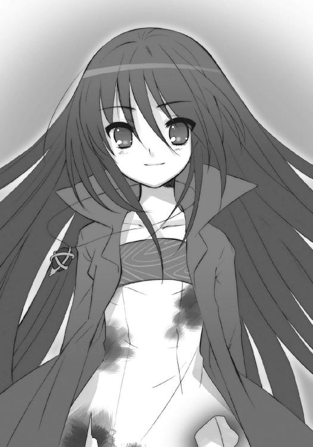
「私は、この最強の自在法で貴方に挑んで、貴方を倒す」
「──倒、す？」
話が、ようやく自分の質問に戻ってきたことを、悠二は知らされる。答えが、誰にとっても空々しく、絶対に在り得ない選択肢であることも、同時に。
「そう。私は、貴方を殺さない。殺したくないじゃなく、殺さない。腕ずくで倒して、従わせる。貴方に〝祭礼の蛇〟が付いているというのなら〝祭礼の蛇〟ごと」
「──ッ!!」
過去に受けたどんな非礼、どんな雑言にも勝る、最大の侮辱を前に、創造神〝祭礼の蛇〟は言葉を失った。悠二も、心からの刮目で、僅か目を離した間に成長した少女を見つめる。
（こんなシャナは、知らない）
堂々たる『炎髪灼眼の討ち手』は、
「そうして改めて、貴方の力で本当に何をすべきか、せざるべきか、フレイムヘイズたちにも納得の行く結果を探す。そう、その難しいことを決意するだけでよかった」
自分の存念を、一言で結ぶ。
「それが、一人の──フレイムヘイズたる、私」
が、もちろん、そんな戯言が受け入れられるわけもない。
「不可能だ！」
悠二なのか〝祭礼の蛇〟なのか、代行体の口から、低い叫びが零れた。
「そんな調子の良い結論が、許されるわけもなかろう。余が数千年の悲願を、子供の絵空事で嘲謔するか」
「許される、許されない、は問題じゃない」
シャナの調子は変わらない。
「私は貴方とは異なる、二人で生きる道として、これを選んだ。だから、実現を目指す。最強の自在法を、誰もがするように、二人で通い合わせる日のために」
言って、何故か軽く『贄殿遮那』を、指差すように突きつける。
「いつか、悠二は〝祭礼の蛇〟として言った。私がここに在る好機を、全てを転覆させる魔神が最も近き契約者として共に在る好機を、無為にしてはならない、と」
「な、に？」
その軽さにも押されるように、悠二は肩を引いた。
シャナは、その悠二に、なにより〝祭礼の蛇〟に、笑って言い放つ。
「もし、おまえが悠二を消し去って、ただの創造神になったら......私は、天罰神の契約者として〝天破壌砕〟を躊躇なく使う」
「!!」
今度こそ〝祭礼の蛇〟は完全な絶句に追い込まれた。
その反応に、ではない、自分たちの得ている喜びに、シャナは笑う。
「悠二がそこにいるからこそ、私はただのフレイムヘイズとしての性急な、無情な行為に走らない。そして私たちは、今在る私たちだからこそ、この新しい道......調子の良い、子供の絵空事を、選ぶことができる」
彼女を見つめる〝祭礼の蛇〟の後方、色付く影らによる塀越しに全てを聞いていた三柱臣らは、初めて同じだけの強さで、『炎髪灼眼の討ち手』という存在を捉えていた。
（──こいつは──）
シュドナイは剛槍『神鉄如意』を握り込み、
ヘカテーは大杖『トライゴン』を僅かに傾け、
ベルペオルは鉤鎖『タルタロス』に力を込める、
（──危険だ──!!）
が、
「ふ、ふふ」
彼らの機先を制するように、
「ふふ、はあっははははははははは！」
彼らに背を向けていた盟主が、笑っていた。
それに返すのは、別れたばかりの〝天壌の劫火〟アラストール。
「その笑いは、誰の笑いだ？」
「さあ、ね......でも、面白い。笑わずにはいられない」
悠二は笑って、手に在る『吸血鬼』で一線、空を切って気合を入れなおした。
「君って子は、本当にすごい。何度もそう思ったけど、今度は極めつきだ。大言壮語も、そこまでゆけば立派な戦う理由になる」
「大言したつもりはない。目指して、実現させる」
シャナの答えは、その言葉通りに平静で、しかし喜びに満ちている。
「だから、そのために聞いておきたい。世界を改変するという、貴方の大命の内実を」
「！」
悠二は思わぬ要求に、今度は失笑した。
語らなかったのは、万が一にも阻止する方法を講じられては敵わないからである。復活がなり、後は『神門』から出るだけの今となっては、もう隠す意味もなかった。が、それでも悠二は笑って拒絶する。
「気が早いな。言うことを聞かせるのは、倒してからではなかったのか？」
密かに、彼女に言ってしまいたい、二人で一緒に行ければ、という誘惑の蠢動をハッキリと感じて、しかしその不可能な道を、少年は理性で閉ざした。かざした大剣『吸血鬼』の陰で思いを隠し、現した場所で笑みを深めてゆく。
「物事には、語るべき時というものがある。もし、今すぐに語ってほしいというなら、君の言うように、まず余をねじ伏せてみるがいい」
「分かった、そうする」
まるで試合でも始めるかのように、二人は剣尖を遠く合わせ、踏み出す。
断章 数日前の話 その３
翌朝、佐藤家の門前に、新たな出立の姿が在った。
昨日までの容態を知っている田中が、心配げに尋ねる。
「今さらですけど、本当に昨日の今日で、いきなり出発なんて、大丈夫なんですか？」
どことなく決まり悪そうに明後日の方を見るマージョリーが、
「大丈夫よ。フレイムヘイズなんだから、負傷以外で体力の消耗なんてないわ」
努めて冷静に、異能の討ち手として答えた。
そんな彼女の様を可笑しく思う吉田が、せめて自分にできることと、紙袋を渡す。
「これ、道中で食べてください。ワインも一本、入ってます」
「ありがと。嬉しいわ」
真心への礼儀か、単に酒目当てか、今度は素直に受け取った。
と、その脇に掛けられた〝グリモア〟から、マルコシアスが水を差す。
「ケーッ、呑気に喜んでる場合かよ。いつまでもケーサクに甘えてっから、丸一日経っちまったい。一人ポツーンとバーで待たされてる側の身になってみろっつーのブッ!?」
「お黙り、バカマルコ！」
乱暴に彼を叩いて黙らせる、その姿は田中と吉田がよく知る彼女だった。二人、目を合わせて──指摘の内容には少年少女として赤面しつつ──笑う。
そこに、
「マージョリーさん」
戸締まりを終えた佐藤がやってきた。外見的には、昨日とジャケットを替えただけだったが、その言動にはかつての軽薄さが鳴りを潜め、僅かながら落ち着きさえ見える。
「タクシーは呼んでませんけど、いいんですよね？」
「面倒だから、こいつで空港に直行するわ。特別便の手配は、もう済んでるわね？」
「はい。十時には飛べるそうです」
キビキビ答える少年に頷くと、マージョリーは手首を返して腕時計で確認した。
「ちょっと出遅れたけど、作戦の主旨的には先頭切る必要はないし、なんとかなるか。この場合、私は役に立たない方が良いんだけど」
「ま、相手が相手だ。万が一の備えは何重に張っといたところで損はねえさ」
マルコシアスが課せられた任務の重さを、軽く笑い飛ばす。
ふと、田中は元・子分として気が付いた。かつてのマージョリーに漲っていた、戦いに憑かれたような狂熱が、すっかり消えていることに。今在る彼女は、どこまでも自然体だった。
（マージョリーさんは、こうするって決めたんだな）
そんな感慨を、密かに抱く。
かつて彼は、マージョリー・ドーが生きてきた、皮肉と言うには酷すぎる境涯を、それゆえに昏睡することになった事情の全てを聞かされ、彼女が目覚めた後のことを危惧していた。周りの抜き差しならない状況が、新たな酷い戦いに、再び彼女を追い込んでしまうのではないか、と。その戦いの中で、彼女自身が知らず、死を望んでしまうのではないか、と。
が、
（取り越し苦労だった、ってことか）
今、朝の光の中に立つ『弔詞の詠み手』は、彼の危惧が見当違いなものであったことを、顔の輝きに、雰囲気の明るさに、敢然と示していた。彼女は、何者かへの敵意でも、他者からの強制でも、討ち手としての存在ゆえの強迫観念でもない、明確な自らの意志で、死ぬためではない戦いに赴こうとしている。
それを、田中は男として大いに喜び、
（ちぇっ、佐藤め）
そして、少年として大いに嫉妬した。
そんな彼の思考を、親友として読み取った佐藤は、誤魔化すように咳払いした。その辺りの不器用さは、まだまだ年相応である。
そうして二人、
「それじゃ、マージョリーさん」
「ええ」
田中と吉田が羨ましくなるような、たった一言で了解を取り合い、出立する。
「ヒッヒ、今度は俺が、エータと嬢ちゃんに見送られる番か。実際、ここにいると、いろんな体験ができて退屈しねえぜ」
マルコシアスは、退屈しなかった、という過去形では言わなかった。
そんな彼なりの、約束できない『必ず帰る』ことの表明、以前のそれとは違う、討ち手ではない友達も加えた、旅立ちに際しての精一杯の気遣いを、見送る二人は確と受け取った。
吉田は奇妙な、しかし他に言いようのない言葉を、旅立つ二人に掛ける。
「無理しないでください」
「そりゃあ、保証できないわね。でも、気をつけるわ」
軽く請合ったマージョリーは、
「せっかく育てたいい男、今さら台無しにゃできねーわなブッ！」
からかうマルコシアスを速攻で黙らせ、
「どうするか、どうしたいか、なんとなく考える余裕はできた気がするし、まずは目の前のことを片付けるつもり。心配しなくていいわ」
含むものも、引きずるものもなく、素直に笑っていた。
そして佐藤は、
「はは、まあ、なんつーか......」
照れとも戸惑いとも付かない顔で言い、両の手を前に差し出す。
それが握手の求めだと気が付いて、吉田は両手で、田中は強く、握り返した。
旅立つべくして旅立つこととなった親友に、田中はニヤリと笑って、言う。
「ヘマして姐さんの足、引っ張んなよ」
「精一杯やるさ」
二人に強く握り返して、佐藤は誓った。
その分かち難い三人の尻を、マージョリーが声で引っ叩く。
「さあ！ 楽しい楽しい裏方、なければ御の字の『引潮』作戦に出発するわよ！」
「はい!!」
三人は、なぜか声を揃えて答えていた。
４ 道
日本、風雪一面に荒れる上越国境の南側。
声も明かりも閉ざしてしまう暗夜の奥に、魔の山として知られる谷川岳が聳えている。
その麓、暗い上にもなお暗い針葉樹林の一帯に、［仮装舞踏会］の一軍が留まっている。外界宿東京総本部攻略のため派された東部方面主力軍、司令官は〝驀地〟リベザルである。
象ほどもある三本角のカブトムシと見える彼は、極寒の環境に在っても、震え一つ見せず巨体を屹立させている。暗褐色の鉄兜のような顔から、
「戦況の詳報は、まだ来ないのか」
と不満げな呟きが吹雪の中に漏れ出た。組んだ上から水晶の数珠でグルグル巻きにした下二本に加え、上二本の腕も組んで、尖った指先で二の腕をカンカンと叩いている。表情に乏しくとも分かる、苛立ちの仕草だった。
その足下、雪に足跡をつけず、しかし風にも飛ばされず、ブカブカのローブを纏った子供、という姿の〝蠱溺の杯〟ピルソインが歩いてくる。
「まだだよ。今、ブファルさんが各方面に確認を取ってるけど、どこも望み薄かな」
言って、首を振った。
「オーワダにやった部隊は、封絶で通信を遮断されてるみたいだ。ヨコタも同じ。僕らが撤退するのを見越して、各種妨害の手はずを整えてたんだろうね......この山越えみたいに」
「なんてザマだ。逆境にこそ人は試されるってえのに、これじゃ落第もいいとこだ」
リベザルは吐き捨てて、自分たちを阻んだ予想外の事態、本拠地『星黎殿』への帰投を急ぐ彼らを嘲笑うかのように聳える壁を、風雪の彼方に見上げた。
荒天の根源とも見える、鑿で乱暴に削ったような岩壁と、大地を押し上げたような山塊が、複雑極まる地形でもって融合する中央分水嶺──谷川連峰と奥利根山塊である。
現在、この険峻極まる地に、相当数のフレイムヘイズが立て籠もり、東部方面主力軍の撤退を遅滞させるための阻止線を構築していた。東京総本部の攻防戦には結局来援しなかった遊撃隊と思しき、この一群の悪辣な点は、出現のタイミングにあった。
この遊撃隊は、新潟に上陸した東部方面主力軍が東京へと進撃する時点での妨害を一切行わず、本拠地急襲の報と撤退命令を受けて踵を返した時点......つまり、攻めかかったときの余裕を失い、一刻も早く来援として駆けつけねばならない状況になってから、まさにその一刻を遅らせるために、退路を塞いだのだった。
もし東部方面主力軍が関東平野へと侵攻する前に、彼らが阻止行動に出ていれば、東京からの援軍を仰ぐ形で、あるいは勝ちを拾う状況になっていたかもしれない。最低でも撤退開始の時点まで、この要害の地で粘れたはずだった。
が、フレイムヘイズ陣営としては、それではなんの意味もないのだった。
後背、一駆けの距離に新潟港を望む場所で撤退が開始された場合、東部方面主力軍は多少の追撃など振り切り、日本を脱してしまうからである。東京まで引き込んだ後にその帰路を阻むことで初めて、彼ら遊撃隊の戦いには戦略的な意義が生じる。敵中で孤軍奮闘する『震威の結い手』ゾフィー・サバリッシュら、『星黎殿』を攻略するフレイムヘイズ兵団に対する間接的な援軍、という意義が。
人間とは比べ物にならない〝徒〟の快足を、この阻止線で数日、あるいはほんの数時間、滞留させることで、遠い決戦場における戦力差を優勢に傾ける（より消極的には、撤退時の敵包囲網を薄くする）。東京総本部は、この状況を作るため市街地での籠城戦を選び、陥落寸前という苦闘の末、望んだ結果を得ることに成功したのだった。
もちろん、結果を得られた側も、状況に甘んじているわけではない。貴重な時間を浪費するルート迂回案も含めて、一旦の協議を行うため、こうして軍を留めている。
今は、人間の施設へと人員を遣り、協議の前提となる、撤退の全体状況についての情報収集と確認作業に努めているところだった。
「あそこにいるのがミカロユスのイカレ野郎じゃなきゃ、とっとと突破をかけたんだがな」
「向こう側も、それを承知で配置したんでしょ。あいつに準備の時間を与えた上に、場所が荒天の冬山ってのは、最悪を極めてるね」
リベザルとピルソインは、この地で阻止線を指揮しているだろう、少なくともその一員に加わっているだろうフレイムヘイズ『興趣の描き手』ミカロユス・キュイの姿を、未だ見ていない。しかし、彼がいることは、前衛と接触した討ち手らの戦術から明白だった。
山岳部に踏み込んだ彼らを襲ったのは、気配から色彩まで、雪山の一部として巧妙に偽装を施された一団だったのである。『興趣の描き手』は、振るう絵筆によって自在に物体の色彩を操り、特性を変化させてしまう力の持ち主だった。石に木を描けば、石は火で燃える。雪に剣を描けば、雪は木を切り倒す。この力を以って討ち手らに風景を描けば、彼らはその中へと溶け込んで、動き出すまでは感知不能の存在となる。
飲まず食わずで冬山に籠っていても、餓死や凍死の心配がないフレイムヘイズらに、この庇護を以って潜伏されると、通る側には地獄である。部隊長クラスでも易々と不意打ちを受けてしまう危険がある上、その当人、ミカロユスという男は、病的な顔立ちに相応なのか裏腹なのか、発想が奇抜で好戦的ときている。迂闊な仕掛けで思わぬ損害を蒙り、そこに東京総本部からの追撃でも受ければ、要らぬ損害が増えるばかりだろう（リベザルもピルソインも、負けるとは全く思っていない）。万事慎重にならざるを得なかった。
ちっ、とリベザルはわざとらしい舌打ちをする。
「これというのもデカラビア、あの泥魚が下手を打ったせいだ。おまけに『プロビデンス』まで持っていきやがって。おかげで撤退の状況が掴み難いったらありゃしねえ」
長い付き合いであるピルソインには、そんな憎まれ口を叩く上官、乱暴なくせにお人よしという相棒の心底はお見通しである。
「血相変えて、帰るまで持たせろ、って叫んでた奴の台詞じゃないね」
「......『星黎殿』と『神門』の防衛線を持たせろ、って意味に決まってるだろうが」
「はいはい」
軽く返すと、肩に担いだ袋を下ろし、中から大きな作戦地図を取り出した。樹間を潜る強風に破られないよう気をつけて広げ、すぐ現在地を中心に折りなおす。
（日本は、通信網が整ってるけど狭い......主要な通信基地には案の定、フレイムヘイズの手が先に回ってた......となると、参謀閣下が人間に作らせておいた秘匿施設を頼るしかないか）
地図上には、進撃路を中心に、非常時の連絡に用いる施設の位置が、びっしりと書き込まれていた。各々の距離から、総合的な情報を得られる時間を計算する。
（他の日本侵攻部隊も、こういう時には状況に応じた所定のコードを発信し続ける手筈だけど、どの程度実行できているか......どうも撤退以降は、後手に回ってるみたいだし）
その、人間には短く〝徒〟には長い時間を思い、溜め息を吐いた。
「どっちにせよ、僕らは全体の状況を掴んでからでないと動けないね。戻って包囲戦に参加するのは、当分先までお預けだろうな」
「ああ。東京方面への索敵網構築も、まだ万全じゃねえしな」
リベザルも憤懣は憤懣として、軍司令官たるの冷静な判断を下す。
「もし他の部隊が大した妨害を受けず兵力を温存したまま撤退できていたら、俺たちも損害を無視して一点突破を図れる。その逆なら、迂回ルートを慎重に進まなきゃならん」
頷いて、ピルソインは地図を袋にしまい、肩へと担ぎ直した。
「連絡待ちの間に、この強風さえ収まれば、僕の『ダイモーン』が使えるんだけど」
その悪名高い自在法、吸い込んだフレイムヘイズを、契約した〝王〟ごと酩酊・錯乱へと陥れる毒の靄『ダイモーン』も、強風の吹き荒れる現状では十分な威力を発揮し得ない。
リベザルは、夜よりは闇の形容こそ相応しい、暗澹たる荒天を見上げる。
「収まれば、か......いっそ参謀閣下の通達されていた『警戒の要あれど喜ばしき、非常の天変地異』とやらでも起きれば、道具どもへの揺さぶりになるんだろうが」
山嶺に被さる雲は、変化の兆候を欠片も見せず、未だ分厚かった。
中東──
遠い星空の中、
「やっとこさ、次を捉えたか。聞き慣れない名前だったが、どこを占拠してるって？」
「テヘランに近い軍の通信基地です。封絶が解かれてからは、人の動きが全く見られなくなった、と......口封じと補給を兼ねたんでしょう」
「補給、ね」
「コンテナには警告ランプ以外付いてないので、ハッチ開放が降下の合図になります」
「分かった分かった。どうせ先陣はオマエだ、お付きの俺は寝転んで時を待つさ」
「もう──！」
彼らは一路、目指す。
その先──
カスピ海を北に臨む通信基地。
雲一つない明るい月夜の下、大きな方形のフェンスを張る基地が、見渡す限りの岩山と乾いた荒野が形作る白黒の世界に、文明の孤島として浮かんでいる。その内には今、人間の姿は見えない。占拠の際、ごく一部を残して喰らい尽くされてしまっていた。
代わって、基地の外まで溢れているのは人形異形の群れ。西部戦線攻略のため派された［仮装舞踏会］ギリシアおよびエジプト、両方面の混成軍である。ところどころ、色合いも怪しい火を方々に燃やして野営する様は、まるで星空の一部が地上に降りたようにも、地獄の一部が浮き上がったようにも見えた。
本拠地『星黎殿』への奇襲という異常事態を受け、これらの軍を含めた西部戦線全軍、撤退の総指揮を取っているのは、ギリシア方面軍の指揮官〝獰暴の鞍〟オロバスである。
彼の姿は、基地司令室の通信コンソール前に在る。明かりはスクリーンの表示のみ、という薄暗い部屋に溶け込むような、黒衣の青年として。
「東部戦線の主力軍は足止めか。リベザル様のことだ、迂闊な手は打つまいが、帰りの足であるタンカーまで破壊されている以上、主戦場への遅れは避け得んだろうな」
届いたばかりの暗号通信に目を通し、嘆息した。
大半が数字の羅列という暗号（その実態は、彼らが常より使っている作戦計画上の行動コード番号そのものである）は、彼らの本拠地への奇襲に始まった戦局の急転が、なおも不確かなものであることを示している。
南北防衛線の部隊が矛先を返して救援に向かったものの、フレイムヘイズらの遅滞戦術に遭い未だ果たせていないこと、東部方面ではリベザル率いる主力が足止めを受け、西部方面も一部で同様の意図だろう中小規模の追撃を散発的に受けていること、等々は戦前より整備された通信手段によって知らされたが、肝心の主戦場での詳報が、乱戦ゆえか滞っていた。
デカラビアの助力なき今、広範囲を撤退する各軍の情勢把握は人間の機械頼りとなっているが、やはり使い勝手も即応性も、自在法『プロビデンス』とは比べ物にならない。
（総司令官たるの所以、有用な自在法だけではない、明確かつ厳格な指示をも、我らは欠いてしまった......ほんの一時のことと思いたいが）
今さらという苦い自覚を持って、オロバスは反発を覚えていた前・総司令官の有り難味を噛み締める。その身に課せられた任務、西部戦線における撤退の総指揮には、撤退する先も含めた各部署の詳細な情報が必須となればなおさらだった。
彼と彼の率いる軍の役割は、既に主力軍が『星黎殿』への救援として先行した現状下、撤退する諸友軍を援護し、可能な限り多くを『星黎殿』まで送り届けること、敵の追撃を食い止める盾となることである。ただ早急に後退するだけ、という気楽な立場にはない。友軍に対する当座の指示も伝え終わった今、その役割に沿った自身の行動指針を決めねばならなかった。
「こちらも、ストラス様がいなければ危なかったでしょうね」
同じ内容の紙から戦況を読み取った白衣の女、副官たる〝朧光の衣〟レライエが言う。
「もし、まともな撤退戦をやって、昏き淑女が本気で追撃をかけていれば、ハボリム様といえども、相当な時間を取られていたはずよ」
「幸い、彼女は出てきていないようですね」
その背後、やはり同様の紙に目を通していた長身の男が、色気に粘る低い声で続けた。前世紀初頭の古写真から抜け出した紳士然とした身形で、老若判別の付かない白皙の美貌が、暗灰色のトップハットとテールコート、マントの中に浮き上がって見える。
「他の軍も致命傷となるような追撃ではない様子......恐らく昏き淑女は、突出部であるアンドレイ要塞をこのまま堅守するつもりなのでしょう。万が一にでも彼女らの軍が崩れれば、欧州の外界宿には纏まった戦力がなくなってしまうでしょうから」
彼は〝冀求の金掌〟マモン。この地で合流したエジプト方面軍の指揮官たる〝紅世の王〟である。
力在りと衆目が一致しているとはいえ、オロバスが〝徒〟の身ながら撤退の総指揮を与ったことにも不服の体を一切表さず、むしろ積極的に協力さえしていた。合流直後、今後の方針についての協議を行った際も、
「ここで行き逢ったのもなにかの縁。撤退する友軍の援護として、是非、我らも加えて頂きたい。フレイムヘイズ諸君がこのまま、撤退する我らを見送って済ませるとは思えません。いずれ必ず、大規模な追撃部隊との接触があるはず......それに抗する戦力は、多いに越したことはないでしょう？」
と朗らかに返している。冷徹な指揮官としての見識を持ちながら、普段は貫禄溢れる穏かさを持つ──レライエ密かに評するところでは胡散臭い──〝王〟なのである。
ともあれ、オロバスは総指揮を任された身として考えを巡らせ、
（北方に在って撤退する西部方面の各軍は、既にカスピ海の北から回り込んで、カザフスタンを横断するルートに入っている、か......その後方で最大の戦力を保有するアンドレイ要塞は、自らの重要性から、未だ積極的に動いていない）
現時点で得られた情報から、改めて戦局全体の大枠を捉え直し、
（しかし他の地域、特に我々の在る西部戦線南方は、勢力圏の境界が至近に位置する......道具どもは、アンドレイ要塞という拠点が後方に健在である今、各戦線の戦力を自由に動かせるだろう......戦局に応じて投入するはずだった予備兵力を、丸ごと追撃にも使えるな）
通信室のスクリーンに浮かぶ地形図から、自軍の方針を定める。
「やはり警戒すべきは、敵の大規模な追撃......進路は、まず我ら南方にある軍を突き、さらに北上して全軍の足止めを図る、といったところか。マモン様、図々しいを承知で、助勢の申し出を受けさせて頂きたいのですが」
要請を受けた〝王〟は、身を優雅に屈めて〝徒〟の指示に従う。
「元より。撤退の指揮権は貴方にあるのですから」
一方──
近づく星空の上。
「飛行機による兵員輸送か。面倒な奴らを思い出してメゲるな。おまけに狭いわ暗いわ、どこの奴隷船だ。だいたい空ってのは、一人で気ままに飛ぶもんだと昔から相場は決まって......」
「その狭い待機ベッドにわざわざ籠もってブツブツ言──あっ、いつの間にお酒なんか!?」
「今週の規定量の内だ。どうせ待機中で暇なんだし好きに飲ませ、ぅお!?」
「今は例外！ もう機は降下準備に入ってるんですよ？」
「分かったから痛ててっ、返せって！」
「ダメッたら、ダメです〜っ！」
彼らは、降下を始めた。
その先──
通信によって得られた情報を一通り、精査し終えた三人は、司令室から出てゆく。
と、マモンが、ふと思い出したように足を止め、
「ご苦労だったね、君。助かったよ」
彼らの傍ら、コンソールの前に座っていた人間の男に優しく声をかけた。
ビクリと跳ね上がるように反応し、ガタガタと骨からの震えに襲われている彼は、三人の言うがままに所定の操作をさせられた通信士、この基地における最後の生き残りである。
「こ、殺さないで、くれ......！」
震えのあまり懇願する仕草さえまともに行えない様に、マモンは哀切の表情を作った。
「ああ、この方たちには済まないことをした、そう思っている」
言って、薄暗い司令室内を見渡す。
それなりに広い部屋は、床といわず天井といわず、濡れて、散らかっていた。かつて十余の人間であった物体......大量の血と、無数の肉片によって。
マモンは震える肩に真っ白な掌を置き、
「だが──」
再び跳ねようとする体を、細身には在り得ない剛力で押さえ、場違いな甘い声で囁く。
「こうしなければ、君は私たちの言うことを聞いてくれなかっただろう？」
「ひ、ひ」
声の近さに、通信士は言葉を発することもできなくなった。
基地に在った人間の中でも、彼の境遇は最低だった。一体なにが起こり、何に襲われているのか、どうしてこんなことになるのか、彼には全く分からなかった。
なぜか自分たち司令室要員しかいない基地、その司令室に、見慣れない格好をした三人の不審者（時代錯誤と分かるほどの知識は彼にはなかった）が、いきなり乗り込んできた。誰何した当直士官が即座に斧で真っ二つにされた。驚いた他の要員らが加えた銃撃にも平然と、特に今、肩に手をかけている男が一方的に、しかも素手で殺し続けた。最後に残った自分は、指示された通りに通信機器を動かした。分かるのは、それら事実だけである。
客観的に言い換えると、司令室の外にいた者は、誰彼問わず封絶の内で喰われ、司令室に詰めていた十余人も悉く惨殺され、この通信士のみが機器の操作のため唯一人、生き残らされている、ということになる。
いずれにせよ、彼の役割は終わった。
マモンはあくまで優しく、自身にとっての事実を告げる。
「もう、殺すなんて無為はしないとも」
「ほ、ほんとう、か？」
初めて喜色の欠片を引きつる頬に浮かべた彼は、至近に妖しい笑みを見た。
「これは、君への脅しとして必要だったからやったまでだよ。君は、ちゃんと──」
年齢不詳の美貌、その口が大きく開き、真っ赤な舌と、異様に長い犬歯が覗く。
「──喰らうとしよう」
「っ!?」
硬直した首に牙が突き立つ、と見えた瞬間、通信士の体が黄蘗色に燃え上がった。炎は、彼の身を焼かず焦がさず、ただ輪郭を薄れさせ、マモンの口へと吸い込まれてゆく。
扉の前で待っていたオロバスとレライエは、特段の情動も示さず、
「まずは両軍に、低速でも陣を固めた行軍を命じるべきだろうな」
「北方にいる友軍と撤退の歩調を合わせるために、行く先々での伝令と通信を欠かさないようにしなきゃね。なかなか根気の要るお仕事だわ」
各々言って、司令室を後にする。
マントを翻して続くマモンも、去り際に室内の惨状を見渡して、一言。
「いやはや、我ながら大人気なかった。失敬」
至近──
急降下を始めた機上、
「確認された限りでは最南端に位置する集団ですけど、うまく〝煬煽〟ハボリムの主力部隊に食らいつけたでしょうか？ あっ、だから今はダメですってば！」
「わっ！ ......さあな、もし違ってたとして、数を減らすか足を止めりゃ、殴り込み真っ最中の肝っ玉母さんへの援護にはなるさ。後の予定は、各地に伏せた斥候の首尾次第だな」
「まあ、まずは目前の課題を、慌てず急いで、片付けようじゃあないか」
「そういうことね。久しぶりの大規模戦闘なんだから、気をつけなさい」
「ほーらほら、いつまでじゃれ合ってんの。周りが変な目で見てるわよー？」
彼らの前で、ハッチが開く。
その下──
基地内、星空の下で微量の倦怠すら漂わせていた軍勢は、進発の命を受けた途端、まさに点火されたかのように活気付き始めた。巨体を持つ者が土煙とともに立ち上がり、空を飛べる者が上空警戒部隊の輪に混じり、人型や中程度までの者らが整然と隊伍を組み始める。
この中、月を近くに架ける監視塔の屋根へと登ったオロバスは、左右にレライエとマモンを置いて、基地内外の大軍へと号令を下す。
「この地において合流した、両軍の将兵諸君に告げる！ 我々は、これより『星黎殿』への行軍を共にする！ 先行された外界宿征討軍総司令官〝煬煽〟ハボリム閣下と合流、直衛軍司令官〝渺吏〟デカラビア閣下と力を合わせ、以って『星黎殿』をお守りする!!」
司令官二者の呼称が、開戦時との相違を見せている。
その事実が、戦況の混沌振りを如実に示していると言えた。
が、それでも混成軍の兵らは、本拠地の守護に向かう、戦友への援軍となる、というもう一方の事実によって自身を集団を大いに鼓舞し、夜の荒野に大歓声を響かせていた。
「おおおお──!! 我らが『星黎殿』を守れ!!」
「神の御座にたかる道具どもを追い払え!!」
「盟主万歳！ ［仮装舞踏会］万歳!!」
さらにオロバスは、熱っぽく声を張り上げ、
「ただし、進撃は拙速を以って為すのではない！ 北に在る友軍の将兵諸君らと、歩調を合わせ整然と帰還するのだ！ この撤退を勝利と錯覚した道具どもは、いずれ身の程知らずな追撃をかけてこよう！ だが、我々はこれを打ち砕く！ 打ち砕けると信じている!!」
また間を置いて、
「我が信頼に応える者は今、胸を張り、声を上げて見せろ！ その声を以って北の戦友らに、己が誇りを示して見せよ！ いざ──我らが盟主〝祭礼の蛇〟よ、御照覧あれ!!」
長柄の斧を、大きく高く、星天に振り上げた。
一斉の声が、
「御照覧あれ!!」
その絶叫を、
大小揃えて放出し、一帯の夜気を裂かんばかりに震わせた。
これら声を、士気の実感として受け取ったオロバスは、鋭く斧を払って命じる。
「進発せよ!!」
命を受け、巨大な〝徒〟が先駆けとして基地の塀を踏み越えた。隊伍を整えた〝徒〟らも後に続き、上空の警戒部隊も輪の一端を解いて進路を変えてゆく。
指揮官として全軍を見渡していたオロバスは、
「............」
ふと、その途中、視界の内に違和感を覚えた。
飛び交う警戒部隊と進軍する地上部隊の、間、
「......」
輝度も彩度も明らかに冴え渡った星々の、中、
一点、距離感から大きさの分かる、黒い影が。
「！」
鳥などではない、相当に大きな飛行物体。
彼が周囲へと危険を告げようとした瞬間、
極光が夜を一閃、
どの星よりも明々と迸り、地に突き立つ。
歩を進めていた〝徒〟の軍勢の真ん中で。
爆発し、広がって弾ける色は、緑から黄色、また赤や紫へと鮮やかに偏移する......まさに極光だった。それが、さらにもう一閃、巨大な〝徒〟を頭から真っ二つに砕いた。
この攻撃にオロバスは、
（次はここだ！）
と全くの勘から察し、隣の二人へと警告しかける──その肩をマモンが突き飛ばし、
「次はここですね」
一方ではレライエの手を優しく引いて、華麗に跳んでいる。
「っと!?」
離れた黒衣の背を焼くように、やはり真上から新たな一閃が迸った。監視塔が眩い極光の中で一たまりもなく打ち砕かれ、破片は燃えずに焦げて、周囲へと散らばる。
オロバスは熱と光を背負って着地し、走り出した。
（やはり来たか）
走りながら長柄の斧を振り上げ、軍勢へと大音声で指示を下す。
「固まるな、散れ！ 空中の警戒部隊は接近を阻止せよ!!」
「同じ空を飛ぶって言っても、あの子相手じゃ時間稼ぎにしかならないわ。それに、あの子がいるってことは──」
「分かっている！」
後に続くレライエに、大声で返した。これは煩がっているのではなく、状況に激しているためである。もちろん、感情は高ぶっていても、頭は回る。
「マモン様！ 奴を、この交戦中に僅かでも止められますか!?」
「やってみましょう。ただ、相手が相手ですから、相応の手間は要します」
傍らを悠々と飛ぶマモンは、涼しい顔で返した。
その周囲、奇襲の混乱から立ち直り、散開して備えた兵らの声が響く。
「来た、上だ!!」
「あの極光、天路少艾か！」
空中警戒部隊が空中に張った封鎖網の中へと、それは猛烈な速度で降下していた。緑から赤紫、さらには白までをも朧に揺らす極光を後背に一線引いた、巨大な──鏃。
上面の切れ込みから少女の頭を覗かせる、小型の戦闘機とも見えるそれは、進路を塞ごうとした空中警戒部隊の一群を、両側から流星群のように放出した極光で粉砕した。と同時に、先端を大きく上げ、地面擦れ擦れの低空を高速、一気に駆け抜ける。その前に立ちはだかった者は悉く貫かれ、また真っ二つになって吹っ飛んでゆく。
と、突進の前方、基地の傍らに堆く聳える岩山が阻むように迫るが、鏃は進路を変えず、正面から激突した。壮絶な破砕音と噴煙、極光の欠片が振りまかれる。
その圧倒的な攻撃力にオロバスは戦慄し（無論、激突した程度で彼女がどうこうなるとは思っていない）、人の身を一転、橙の炎を口と鬣に撒き散らす黒馬へと変じた。棹立ちになって、副官に強い声をかける。
「レライエ、乗れ!!」
「私の『ニムロデの綺羅』はデリケートなんだから、あまり揺らさないでよ」
憎まれ口とは裏腹に、レライエは彼の背中へと足先で降り立った。その身を覆っていた緩やかな衣が、袖に裾に風をはらんで、大きく広がってゆく。その高い視点から、混成軍が戦闘態勢で備える様子を、傍らの馬首とともに眺めやる──と、
（へえ、いつの間に）
周囲に生じていた異変に気付いた。一応と確認を取る。
「オロバス、マモン様、道具どもが」
「これだけの数を、いつの間に......さっきの飛行機から降下したのか？」
彼らを遠巻きに囲んで、相当数のフレイムヘイズが出現していた。オロバスの推測どおり、今や地平の彼方へと飛び去った飛行機から降下したものである。
「可愛らしい恋人を派手に登場させて私たちの耳目を引きつけ、その隙に糸繰りで空の道を導いた、というところですか。毎度のことながら抜け目のない御仁ですね」
ようやく収まりつつある噴煙の奥から、マモンの言ったように、降下したフレイムヘイズらを正確に、軍勢を囲むポイントへと落着させた男が現れる。
「ハボリムの主力軍じゃあ、ないか。ここんとこ、どうも勝負運が悪いな」
「勤勉なしに賞はなし、っていうだろう？ コツコツ順番に当たるのが吉さ」
深く被ったソフト帽で目線を隠し、襟を立てたトレンチコートを風にはためかせる、ひょろんと長い、三十前後の男。腰にごつい革ベルトを交差させ、垂れ下がる両手にはそれぞれ、フレイムヘイズの神器たる、木片を十字に組んだマリオネットの操具が在った。
その傍ら、崩れた岩の一段高い頂に立つのは、一人の少女。
「相手が誰でも同じ、ただフレイムヘイズとして為すべきことを、為すまでです！」
「あら、オロバスが軍勢連れてる......これは面倒かも」
「つーか、マモンまで。これって当たりなのかしら、外れなのかしら」
年の頃は十五、六の、気を張っていると見た目に分かる優しげな容貌。着こなしもしっかりしたスーツに（実は隣とお揃い）、大きな緑の上掛けを羽織っている。その左手には、神器たる鏃を両端とした、オーロラの輝きを見せる弓が展開されていた。
オロバスは、この恐るべき二人のフレイムヘイズの名を、小さく呟く。
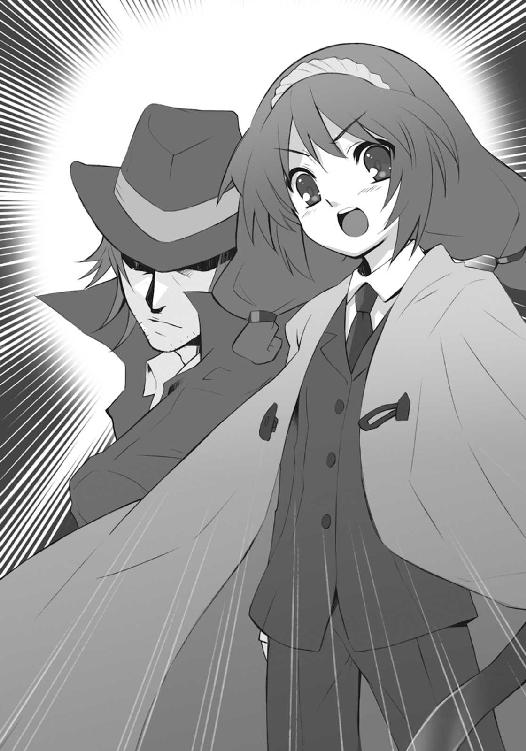
「──『鬼功の繰り手』サーレ・ハビヒツブルグ、『極光の射手』キアラ・トスカナ──！」
降雪の止んだ暗夜に、奇怪極まる光景が現出していた。
墜落した『星黎殿』の前に広がる平野部を、西側から溢れ出た楝色の光が覆い尽くさんとしている。色付いた上、染められつつも溶かされない雪を蹴散らしてゆく軍勢の一人一人も、薄皮一枚を被せたかのように、同じ色の光を纏っていた。
この不可思議な光の名は『燎原』。踏む者に加護を与え、力を強化する、〝煬煽〟ハボリムの自在法である。
今や〝渺吏〟デカラビアの後を継ぎ、［仮装舞踏会］全軍の総司令官となった彼は、双頭のガスマスクにボロマントという姿を、援軍として帯同した軍勢の後方に置いている。
これは彼の臆病を示すものではない。むしろ逆で、軍容の厚薄に拠らず彼を狙って現れるだろう一人のフレイムヘイズとの戦いで、兵らを無駄に殺さないようにするための措置である。無論、彼自身が単体でそのフレイムヘイズを相手にし得るだけの戦闘力を持つことを前提とした布陣だった。
しかし現在のところ、その対決は起きていない。
戦場の全景は、剣山のような岩峰群からなる山地帯の中に僅か広がる平野部、その北端に墜落した『星黎殿』を前に直衛軍と要塞守備隊が守りを固め、南からフレイムヘイズ兵団が攻め掛かっている、という形である。
当初は南の山地帯で足止めを受けていたフレイムヘイズ兵団が、『神門』の露出と『星黎殿』の墜落、それに伴う予備兵力の壊滅や〝嵐蹄〟フェコルーの喪失などという戦機を受けて、特殊能力を解禁した攻勢に出、平野部での激突へと舞台は移った。
この危機的状況を、デカラビアが身を挺して食い止め、一時的に直衛軍と要塞守備隊の側は踏みとどまったが、それも一時のこと。『犀渠の護り手』ザムエル・デマンティウスによる進撃路の開削・兵団側予備兵力の投入によって、遂に両軍の均衡は崩れ、デカラビアは戦死、『星黎殿』への突入は時間の問題となった。
が、
今、デカラビアが稼いだ、まさにその一時が、援軍の到来を［仮装舞踏会］側に齎した。
しかも現れた援軍は、ゾフィーらが警戒しつつも未だ到達には間があると見ていた南北防衛線の部隊ではなかった。遥か西方からの撤退途上にあるはずの西部方面主力軍、およびそれを指揮する〝煬煽〟ハボリムだったのである。
戦場の形勢は逆転しつつあった。
ザムエルが『ジシュカの丘』によって作り上げた進撃路は、『星黎殿』の手前で最後の防衛線を張る直衛軍と要塞守備隊を一息に突破するためのものだった。ゆえに、その形状は平野部の中央、最短距離を貫く石積みの橋梁であり、兵団も同じく一線を描いて進んでいた。
対して、ハボリムが『燎原』で強化された軍を率い出現したのは、まさにその進撃に伸びきった横腹......平野部の西側なのだった。兵団は、突如として押し寄せた大軍の横撃を食らい、『星黎殿』までもう一息、止めを指呼の間に見る地点で足を止めざるを得なくなった。
橋梁は今や、平野部に聳える低い城壁となり、
「くそったれえ！ もう少しのところを！」「ぎゃああっ！」「何であんなところから援軍がやってくんだよ!?」「喋る暇があったら蹴落とせ！」「け、『燎原』──〝煬煽〟ハボリムかよ、冗談じゃねえぞ！」「うがあっ、ちくしょう！」「上らせるな、分断されるぞ!!」
フレイムヘイズ兵団は、一揉みに押し潰さんと迫る軍勢への対応で手一杯となっている。
逆に、友軍を救わんとする西部方面主力軍の兵らは『燎原』による士気高揚も手伝い、
「かかれ、かかれえ──!!」「おらぁ！ 死ね死ね、皆殺しだ!!」「よくも『星黎殿』をここまで荒らしてくれたな、討滅の道具どもがあ!!」「殺す、殺す、デカラビア様の仇!!」「ひぁーっははは！ 見たか、薄汚い空き巣狙いめ!!」「もう好きにはさせんぞお!!」
凄まじい勢いで橋梁に攻めかかっていた。
この不意な激闘の光景を遠く、現在は後方基地（といっても、フレイムヘイズは補給物資など不要であるため、負傷を治癒するまでの休息所程度の役割である）となっている出城の壁上から、兵団の総司令官『震威の結い手』ゾフィー・サバリッシュが眺めている。
デカラビアほどの大物を一撃粉砕した消耗は、そう容易く回復しない。それを承知の上で、苦戦を強いられる討ち手らの許に飛んで行きたい、という誘惑と、彼女は必死で戦っていた。
「まさか、想定外の援軍に横槍を入れられるなんてね」
「やはり、戦とは思い通りにいかないもの、ですな」
契約者の弱音を〝払の雷剣〟タケミカヅチが先んじて取り上げる（彼女らは、というよりフレイムヘイズらは誰一人として、ストラスの自在法について知らなかった）。
この厳しい心遣いに感謝したゾフィーは、危機のときにこそ必要な、総司令官としての顔を強く固めた。背後で、寒風が原因ではなく顔を蒼白にしている『姿影の派し手』フランソワ・オーリック、敵情を探っている副官に尋ねる。
「後、どの程度時間は残っていますか？」
「は、はい。強行軍に乱れていた陣形を、なぜか今になって整えているようなので、歩を揃えた進軍で......短くとも三十分ほどは、余裕があるものと思われます」
「ハボリムが伝令でも送っておいたのかもね。自分が先行するから、万が一にも突破されないよう万全の陣容で後ろを塞げ、って」
雪を踏む敵の動きを遠く捉える神器〝スプレット〟から〝布置の霊泉〟グローガッハが、契約者の報告を受けて推測した（ちなみに、この推測は正鵠を射ている）。
そう──本来恐れていた後背からの援軍、南方防衛網の部隊が、遂にフランソワの感知範囲内に姿を現したのだった。その反対側、北方からの援軍も遠からず現れるに違いない。
不意の援軍に加え、包囲の輪が縮まることで、フレイムヘイズ兵団が保持していた時間制限付きの優勢も潰えつつある、という実感に、豪胆で以って鳴るゾフィーも密かに掌を強く握る。平静な表情だけは変えず、傍観者に向き直った。
「そろそろ、観戦という状況でもなくなっています。貴方単独であれば、突破も容易いかと思いますが......早期の離脱も、そろそろ視野に入れておいてはどうでしょう」
言われた二人、『皓露の請い手』センターヒルと〝殊寵の鼓〟トラロックは、しかし簡単にその申し出を却下する。声に依然、透き通った笑いを含んで。
「我々はまだ、なにも見てはいませんよ。生煮えの情勢下に放り出されたところで、我々は観点も志操も変えたりはしませんから、そのあたりのお気遣いは、どうぞ無用に願います」
「そういうことです。意地悪な言い方ですが、貴女に助けられたという作為の事実で、私も残る『四神』も動きはしませんし、貴女の後を継いで討ち手らを率いることもありません」
ここで命を賭けた恩を売って、自分にもしものことがあった場合の保険に、というゾフィーのいささか虫のいい目論見は、完全に見抜かれていた。流石にフレイムヘイズでも特別な立ち位置に存る『大地の四神』だった。食い下がる余地も取り付く島も、まるでない。
ゾフィーは降参して、また少量の憎たらしさも込めて笑い、自分の無礼を詫びる。
「ごめんなさい。自分の死を使った脅迫に出るなんて......危急の時を迎えて、嫌っていたはずの人使いの癖、地が出てしまったようです」
「サ、サバリッシュ総司令官......」
二人の会話を聞いたフランソワが、まるでこれから死ぬことが決まっているかのような遣り取りに、蒼白な顔からさらに血の気を引かせていた。普段なら彼を叱咤するはずのグローガッハも、まるで抗議するかのように沈黙する。
タケミカヅチが、強いてからかいを込めて笑った。
「ふふ、配下の士卒に聞こえる場所で、自分の死について語ってしまうとは、二度続けての失態ですぞ、『震威の結い手』ゾフィー・サバリッシュ君？」
応えてゾフィーも、あくまで強い笑顔で返す。
「そうですね、〝払の雷剣〟タケミカヅチ氏。どうも先から、しくじってばかり。フランソワ、五百年からの付き合いに免じて、先の言葉は忘れてください」
「はい」
「鬼の目にも涙......それとも鬼の霍乱かしら」
グローガッハの軽口は流して、総司令官二人は今度こそ心中で思う。
（それにしても、西部方面から主力が早々に、指揮官ごと戻ってくるのは誤算でした）
（たしかに、ハボリムは戦いの手管に通じている、危険な上にも危険な相手......ここは）
そのとき、
遠い戦場で、法則性を持った一連の轟音が響いた。
一同、この轟音には聞き覚えがある。
「しっかり〝燐子〟の砲兵を連れてきていたのね」
ゾフィーは計ったように危惧が的中したことに歯噛みした。
タケミカヅチも声に深刻さを滲ませる。
「本気でザムエル・デマンティウスの構造物を崩しにかかっているようですな」
「ええ......今の状況で、ほんの僅かな地の利まで失うわけにはいかないわ」
言って、即座に出撃を決意する。
まだ消耗は完全に回復しきっていなかったが、そのようなことを言ってもいられない。
いかにザムエルが練達の指揮官であっても、また戦っているフレイムヘイズらが強者揃いであっても、陣容は不意の対処とて整わず、戦う相手もハボリムの『燎原』で強化された大軍である。この上、低いながらも城壁として機能している橋梁まで砕かれては、収拾の付かない消耗を繰り広げるだけの乱戦......続々と援軍が到着する［仮装舞踏会］にとって圧倒的に有利な状況へと引きずり込まれてしまう。
（無論ハボリムは、それを狙っているんでしょうけど）
（付け加えるならば、そうなると脅して、我々を誘き寄せるつもりでもあるはず）
来援の悪影響が、単純な兵力差に拠らない、まさにハボリムの指揮官としての手腕であること、他に選択肢がない道を歩かされていることに、二人は心底からの脅威を覚える。
が、それでも二人は前に出た。
後ろを振り返り、副官に命令を置いてゆく。
「南北、もしくは他の援軍の接近には十分気をつけるように。私とザムエルだけでなく、各部隊長にも忘れず伝えて」
と、
「あ......」
塀際に立った二人を、センターヒルが呼び止めた。
彼にしては珍しい、ハッキリしない声に、ゾフィーらは怪訝な顔になる。
「なにか？」
「いえ......」
常の確信に満ちた表情の彼が、本当に珍しく、不分明の色を漂わせていた。導くように空の一点へと、容貌の厳めしさを改めて思い出させるような真剣な表情を向ける。
彼がなにを示しているのかは、尋ねるまでもない。
その先に在るのは、暗雲を背後に浮かぶ『神門』。
周囲で行われている戦いには、ハボリムが地上を重視しているせいもあって、特段の変化もない。両陣営の乱戦が未だ続いている。予備兵力を投入した分、僅かに優勢ですらあった。
が、センターヒルはその戦いを見ていない。
「少し、あの中より奇妙な感覚が」
「中、それとも、向こう、と言うべきなのか」
トラロックも同じく、『神門』そのものについて注視を求めていた。
が、ゾフィーには分からない。
探知能力に優れている彼なら、と振り返ったフランソワも首を振る。
言ったセンターヒル自身、首を捻らんばかりに怪訝な様子である。彼ら『四神』は、厳しい修行によって〝存在の力〟への適性を高めた上で契約した特殊な存在である。その修行なり在り様なりに感じるものでもあるのか......いずれにせよ、彼ら自身にそれが判然としない以上、他者には確かめようもない。
フランソワは、誰もが隠していた最大の不安を、つい口にしてしまう。
「まさか......〝祭礼の蛇〟が、帰ってきたのでは」
「......考えられるわね」
グローガッハまで釣られて呟いていた。
創造神〝祭礼の蛇〟の帰還はつまり、後を追って『神門』へと飛び込んだ『炎髪灼眼の討ち手』らの敗北に他ならない。彼女らを信頼するしない、という話ではなく、戦場に立つ者として、援軍など問題にならない、戦いの決定的な敗北を示す事象到来の不安を、フランソワらは口にしたのだった。ゾフィーやタケミカヅチにしても、抱く不安は同じ。
ほんの一瞬、という重い沈黙を、二度目となる砲兵の斉射が叩いた。
我に返ったゾフィーは、当面の対応へと戻る。
「センターヒル、他に掴めることがあったら、フランソワを介して知らせてください」
「フランソワ・オーリック、先の指示も、動揺から疎かにせぬよう、頼みますぞ」
タケミカヅチの注意を終えるや、『震威の結い手』は紫電と弾けて飛び立った。
落下点を目指す曲線軌道の中、天地に溢れる戦場を望んで二人は、
（まったく、思い通りにいかない、どころではありませんね）
（それで放り出せるならば、人生もどれだけ楽であることか）
本音の遣り取りで心の平静を取り戻す。
「ええ、全く楽ではありません。だからこそ、切り開こうとする心に意味が──ある!!」
叫ぶや、ゾフィーは修道服の裾を引き絞り、体勢を反転させた。
落下点に在るのは、周囲に兵のいない軍の後方で、左右に一列、砲兵たる筒型の大型〝燐子〟を並べた、敵将〝煬煽〟ハボリム。
膨大な光を後に引いて、
「──だあらっしゃ──っ!!」
両足による飛び蹴りが叩き込まれる。
が、ハボリムはその寸前、『燎原』の輝きの中に自らを沈み込ませていた。
ゾフィーもそれは予想の内である。目下の標的は、ザムエルらの籠もる橋梁を狙い撃ちにしていた〝燐子〟砲兵の殲滅だった。蹴りは大地を凄まじい勢いで砕き、その破片をもさらに砕いて、膨大な紫電が周囲一帯に飛び散る。
取り残された〝燐子〟たちは、元より砲撃以外の戦闘力など備えてはいない。紫電の炸裂によって引き千切られ、たちまちの誘爆を起こして、色とりどりに散り果ててゆく。
その跡に一人立つゾフィーは、依然『燎原』が周囲の地面を燃やしているのを、軽く確認した。実は互いに一隊の指揮官としてではない、一フレイムヘイズ、一〝徒〟として戦うのは初めてのことだった。
「......」
燃え盛る『燎原』の怪しい明かりの中、ゾフィーはじっと待つ。
情報としての知識なら、各種資料から得てもいたが、実際に相対した上で、なにを仕掛けるのか、どう返すのかは（おそらくは双方して）計り難い。
ビシ、
と左後方で岩が火花に弾けた。周囲の地表に、警戒のための紫電を薄く展開しておいたのである。何者かが地下から出現すれば、即座に火花が散る仕掛けだった。
「！」
反応したゾフィーは指を差し向けて、収束した紫電を叩き込む。
現れたハボリムは、三倍ほどまでに巨大化させていた体の右半分を、いきなりこの攻撃で吹き飛ばされて、
「登ったか──我が舞台に」
なお傾いた体に残された一つの、焦げたガスマスクから声を零した。
（体を二つに分離させて挟撃や陽動を行う、というのが彼単体での戦闘方法だそうよ）
（それだけでは、なにも分からぬのと同じですな）
声なき声で言い合いつつ、もう片方の出現へと気を払う彼女らに、残された方のガスマスクが、さらに告げる。
「あたら豪傑が、誘いの罠に踏み込まざるを得んとは、哀れ。とはいえ、これも戦の倣い」
やはり戦いに引きずり込んで消耗させることが彼の目的、と知ったゾフィーは、
「でも、貴方をここで引き付けておきさえすれば、的確な指示も送れないでしょう？ 罠とはいえ、踏み込む囮になった餌くらいはもらわないとね」
探りを入れる意味でも、話しかけた。
傾いた体は、変わらぬ調子で答える。
「我が身の用は、二つで足りる」
声の平静さから、逆に悪寒を覚えたゾフィーは、鋭く一帯に気を払った。
そして、捉えた。
「！」
遠く、彼らが現れた平野部の西側外れに、
もう一つのガスマスクを被ったハボリムの、巨大化した半身が立っている。
その傍らに、戦いに巻き込まれないよう布告官〝翠翔〟ストラスを置き、
両脇に、より強力と一目で分かる〝燐子〟の砲兵を、ずらりと並べて。
「身が力を消耗させ、破壊の企図も、果たす」
近くに在るガスマスクが言い、
「撃て」
遠くに在るガスマスクが言った。
居並ぶ〝燐子〟砲兵から吐き出された破壊の力が、膨大な光芒を伴う弓なりの流星群となって、ゾフィーの頭上を飛び越えてゆく。
「ザムエル!!」
上がった叫びは、遅れてやってきた、先の斉射に倍する轟音に掻き消された。
流星群の行く先たる戦場には、砲撃に幾分か削れた橋梁で、未だ激しい攻防が繰り広げられている。
その中心で陣頭指揮を執っていたザムエルは、戦場の外れで新たに膨れ上がった力の規模、再び飛びのいた〝徒〟らの動き（ハボリムの『燎原』で加護を受ける者は、彼の歌を聞き進退する）、なにより豊富な戦闘経験から、先に勝る危機が迫っていると瞬時に察した。
「──っはあ──!!」
素早く片膝を突き、掌を石の床に打った。
その場を中心に、石の隙間から薄墨色の光芒が走り、上に乗ったフレイムヘイズらを押しのけ跳ね飛ばして、彼らを分厚く守る一枚の壁へと瞬く間に組み変わる。
構成の完了とほぼ同時、
その表面で、第一射のときとは比べ物にならない破壊の力が炸裂した。戦場に、壁をなぞる形で一直線の猛火が立ち上り、耳から腹からを揺るがす衝撃が荒れ狂う。
半球ドーム型屋根を持つ礼拝堂の、四方に配された細い尖塔の一本、
「ふう──」
その頂で疲労の吐息を漏らした『儀装の駆り手』カムシンは、傍らの城壁を砕いて現れた炎の怒涛に乗る〝紅世の王〟に向き直り、躊躇なく前に跳んだ。
迫撃を加えようとしていた〝王〟、〝壊刃〟サブラクは、
「ぬっ!?」
逆に自分に向かって来たフレイムヘイズに驚き、その手に在る鉄棒『メケスト』に対し、思わず両手の剣を交差させて受け止めようと試みる。
が、無双の怪力で振るわれた大重量の塊は、寸暇の制止さえ許さない。振るわれた勢いを全く減じず、受け止めた剣を容易く打ち砕き、そのついでとして持ち主も吹き飛ばした。
その黒衣が、礼拝堂の屋根を突き破って中に飛び込む。
カムシンはすかさず足の裏に褐色の大爆発を生んで、強引に落下の軌道を追撃へと振り向けた。穴の開いたドームに、別の穴を開けて飛び込み、その内部、ステンドグラスの光彩も煌びやかな床へと、足音も重く着地する。
礼拝堂の中ほど、椅子の列と敷石を粉々に砕き、サブラクが大の字で倒れている。
その身に、目に見えるダメージがないことを二人は確認し、
「ああ、いい加減この鼬ごっこも何とかしたいのですが」
「ふむ、そうは言っても、切り傷一つつけるまでは意地でも離してくれんじゃろう」
慨嘆とともに『メケスト』を軽く一回しして、床に打ちつけた。ズゴッ、と軋みの極限のような音がして、敷石にめり込む。
と、サブラクが倒れたまま、
「それを分かった上で近接戦闘に臨んでいるのは、他二者に我が刃を向けさせぬためか。確かに俺は、この身一つの感覚しか持ち得んが......おまえたちは隠れて死を引き伸ばすか、すぐ斬られて死ぬかを選んでいるに過ぎん。我が新たな自在法『スティグマータ』の前では、な」
ブツブツと、聞かせる気がないような小声を零した。
この豪語に二人は、
「ああ、しかし以前の『スティグマ』でも同じ事を言っていたのでしょう？」
「ふむ、その一人分の感覚にかまけた油断......というよりは、どうしようもない弱点を突かれて敗北した、というのが先の戦いの経過と聞いておるがの」
と減らず口で返したものの、実は現状認識としてはサブラクの方に明らかな分がある。
地域一帯に己が体を浸透させ、その範囲内では無限と錯覚するほどの耐久力と回復力を持つ彼は、アンバランスなことに、感覚自体は司令塔たる人型の分のみしか備わっていない。ゆえに戦闘中、一人が引きつけている間は、他の者の身に危険が及ぶことはまずなかった（もちろん、一人で引きつけること自体が、非常な難事であることは言うまでもない）。
しかし今、付近に潜んでいる他二人のフレイムヘイズ、『万条の仕手』ヴィルヘルミナ・カルメルと『輝爍の撒き手』レベッカ・リードが、彼の自在法『スティグマータ』によって傷を負っているという事実が、状況を不利に傾けてゆく重石となっていた。
かつて破られた、掠り傷からでも徐々に負った傷を広げてゆく『スティグマ』と違って、この『スティグマータ』は、ただ塞がらないことのみに特化した自在法である。
ただ、と言っても、傷を負っていれば体力は消耗してゆくのが道理で、なにより潜む二人は、既に戦いの内に深手を負わされている。時とともにフレイムヘイズらが不利へと追い込まれている、というサブラクの指摘は、全く正しい見方なのだった。
カムシンが無傷であるのも、後方で自在式の罠を作っていた位置取りから、戦いの前面に立っていなかった、というだけのことで、相性が良いというわけでもない。むしろ、彼本来の戦闘形態である瓦礫の巨人『偽装』を封じられている現状は、圧倒的に不利といえた。
ともかくもサブラクとしては、いずれ僅かでも刃を掠らせさえすれば、そこから傷を大きくする自在式を伸ばして、致命傷へと届かせることができる。
他二人をしつこく追撃して止めを刺すことをせず、カムシンと相対しているのも、まず傷の一つさえつけてしまえば、後の状況など幾らでもひっくり返せる、という自信──限りなく事実に近い──があるためなのだった。
もちろんカムシンも、ただ漫然と逃げ回っているわけではない。今このときも、身を守るための処置、対抗するための手段としての打開策を巡らせている。
（ああ、おそらく二人は、最後の攻勢に備えるだけで精一杯でしょうからね）
（ふむ、ここは儂らが老骨に鞭打って励むしかあるまいの）
声なき声で言い合って、立てていた『メケスト』を引き抜いた。まるで小枝でも扱うかのように軽く右の手首を利かせて、大重量の鉄棒を掌で上に滑らせ、下端をはっしと握る。
「ああ、壊すには惜しい造作ですが」
「ふむ、神の見た泡沫な現世の夢じゃ、弾けたとて恨まれはすまい」
さらに『メケスト』を一杯に長く振るって、右側の床をガンと乱暴に叩いた。
褐色の火花が散る一瞬、小さな自在式が点り、消える。
「ああ、そのまま動かずにいてくれると、ありがたいのですが」
平然とした口調とは裏腹に、今度は動作も大きく『メケスト』を引き戻した。その床に打った先端からは褐色の炎が鎖の如く伸びて、一定距離でビンと張り詰める──と、その怪力に引かれて、床および下の地面が塊でぎ取られた。
即席のモーニングスターは、一回り二回りで、倒れた〝紅世の王〟を押し潰すように、容赦なく上から叩き込まれる。打撃力を完全に伝え終わった後に、爆発。
「ふむ、目処は大よそ立っ──」
ベヘモットが言おうとした下、床の敷石が、隙間から茜色の光を、次いで炎を、まるで誘爆したかのように噴出した。カムシンが目を遣ろうとした瞬間、
「！」
礼拝堂を内側から吹き飛ばす大爆発が起きる。
溢れ返る炎は、内に踊り狂う無数の剣を蔵して、残骸とも呼べない礼拝堂の破片を切り裂いてゆく。その一本が、空中に浮かぶ塊に刺さり、ビンと震えた。
塊に乗っているのは、言うまでもなくカムシンである。
「ああ、危ない危ない、一本、跳ね返し損ないました」
「ふむ、その一本が命取り、重々気を付けねばな」
最初に『メケスト』を床に打ちつけた際、密かに仕込んだ自在式の現れ......立っていた場所を中心に直径二メートルほどの半球に刳り抜いた床だった。
礼拝堂の内に立っていたときと変わらぬ姿で佇む彼は、見下ろした先、礼拝堂の中で渦巻き吹き上ってゆく炎の怒涛の上に、やはり変わらず現れる者の姿を認める。
まさしく徒労の権化として立つ、サブラクの姿を。
が、カムシンらも、徒労で終わらせまいと、
「ああ、目処は大よそ、なんでしたか」
「ふむ、立った、はずじゃよ？」
一つ行動に打って出る。
手に在る『メケスト』を、真上に差し上げる形で。
「儀装」
「カデシュの血印、点火」
二人の声を受け、激闘の跡を各所に残す瓦礫に幾十百、褐色の炎からなる自在式が、一斉に燃え上がっていた。『詣道』へと広範に撒き散らされたそれらは、疎らな灯火と見える。
「起動」
言うカムシンの体が、同色の炎からなる『カデシュの心室』に包まれ、浮き上がった。戦う度に一つずつ、念入りに力を込めてサブラクの干渉を排した瓦礫へと、意識を集中させる。
「自在式、カデシュの血脈を形成」
応じるベヘモットの声に導かれて、撒き散らされた自在式から遠く、糸のように細い炎が無数、漂い来て『カデシュの心室』に結合、唐突に太さを増し、心室への牽引が開始される。
「展開」
新たな攻撃準備を察し、飛び掛からんと身を屈めたサブラクに向かって、カムシンは足下の塊を蹴り飛ばした。砲弾となった塊はサブラクの至近で爆発、蹴った彼は逆に宙へ高く跳ぶ。
「自在式、カデシュの血脈に同調」
跳んだ彼の許へと、各所からの瓦礫が衝突を目指すように飛来した。ほとんど爆発と見える制動の噴射によって、褐色の炎が空中に膨れ上がること数秒、中から殻として打ち破る。
瓦礫からなる、巨大な人型が。
遂に構成に成功した──本来なら同時に構成されているはずの鞭はなく、その柄となる『メケスト』をただ右手に握り込んでいる──『儀装』だった。
爆発の炎から立ち直ったサブラクは、
「っなんだと!?」
その眼前に、在り得ない巨体が降り立ったことに、降り立ったのみならず腰を捻り、横からの拳撃を溜めていることに、気付く。
刹那、
「──」
巨大な物が疾駆する怖気を伴って、
ズゴンッ、
サブラクの体を丸ごと、拳が撃つ。
「──っご、──ぁ」
叫びさえままならず、彼は吹き飛ばされていた。
石ころのように石塀にぶち当たり、宙に跳ねる。
その高速で過ぎ行く朦朧たる意識の中で、見た。
「──ぅ」
いつの間にか跳び上がっていた瓦礫の巨人が、自分目掛け両の足を振り下ろしてくる姿を。
「ぉお──!?」
声らしい声を出し得たときには視界が閉ざされ、闇と大重量と炎が、彼を押し潰していた。
褐色の大爆発が、『詣道』の薄い地層をビリビリと揺らす。
「ああ、しかし」
「ふむ、じゃろうな」
カムシンとベヘモットは、落着と爆発の反動を使って再び跳び上がり、距離を取った。一つ二つ、会心の攻撃が入ったところで油断はしない。こんな程度で倒せるのなら、彼ら腕っこきのフレイムヘイズ三人が手こずるはずもない。
（ああ、この儀装も、次の突破口を見出すまでの時間稼ぎ、というだけの話ですからね）
（ふむ、掠り傷さえ命取り、せめて盾の一つも構えておかねばの）
思う彼らの前、足跡の中から、その覚悟を試す姿が平然と立ち上がる。
「なるほど、流石に壊し屋の異名を取る怪物、大したものだ。だが、その強大な力をもってしても、この俺を脅かすことにはならない。それが俺の在り様ゆえの特性であるとしても」
呟くサブラクの周囲に満ちていた茜色の炎が、唐突に彼の足下に凝縮した。
（！）
その炎の様子に見覚えのあったカムシンは、咄嗟に瓦礫の巨人の足を前後、踏ん張る体勢に開き、左の掌を大きく開いて前に突き出す、彼らにとっての防御の体勢を取った。
前方、サブラクの足下で集約された炎が、一方向へと飛ぶための力として開放される。爆発ではなく、鋭い光条にも似た茜色の強襲が繰り出された。
弾頭となっているのは当然のように、剣尖を揃えたサブラク自身。
一瞬さえ要せず、両者は激突した。
結果も同じく、一瞬さえ要しない。
サブラクは、防御のための力を結集された巨人の掌を完全には貫けず、小指と二の腕の端を削ぎ取るように軌道を逸らし、その背後へと通り抜けた。行く先に湧き上がった炎の怒涛に、マントを翻して着地し、己の不満足な戦果を見やる。
「ほう、胴の中央を貫くどころか、掌の端を削ったのみで済んだか。あの規模の力を防御のため一点に集中されると、我が決め手すらも然程の戦果を挙げ得ぬ、というわけか......だが」
対するカムシンらは、ほとんど呆れて、左の掌を巨人の中から眺めた。
（ああ、苦労して集めた材料を、さっそく削られてしまいました）
（ふむ、戦えば壊される......世の理と受け入れるよりあるまいて）
彼らが『メケスト』に瓦礫の鞭を付随させなかったのは、つまりはそういうことだった。巨人を組み上げる瓦礫を、いつものように無尽蔵に補給できないため、滅多にない直接の格闘で戦いに臨んだのである。非常時の備えとして、予備の材料も幾分かは構成に動員せず取ってあったが、だとしても無論、気軽に浪費するわけには行かない。
（ふむ、しかしこの状況が続くようでは、新たな突破口を見つけるどころではないの）
（ああ、とはいえ、守りを固めなければ、状況の中に居続けることすら困難でしょう）
そして、彼らと相対する〝紅世の王〟は、そんな停滞をすら許さない。
僅か距離を取って、炎の怒涛の上に立つサブラクは、
「大きな力があるとて、なにが変わるわけでもない。ただ日々の道を行き、依頼を受け、標的を斬るのと同じ。そうするだけの力がある、ゆえに眼前の障害を斬る、それだけの話だ」
呟きながら、跳んだ。
カムシンは怪訝な顔を作る。
「......？」
それも当然、彼は炎の怒涛の背後に着地していた。茜色に輝き、内に剣を無数舞わす炎の彼方に幽か、黒い翳りとして、その姿がある。同じく幽か、
「これで、やはり俺は彼奴らを破ることが叶おう」
呟きが漏れ出るとともに、炎の怒涛がさらに周囲から滲み、湧き、溢れて、巨人を押し包まんとするほどの幅を、呑み込まんとするほどの分厚さを、持つに至った。
「なにを励んだわけでもない、ただ俺が持つ力だ」
あまりに膨大な力の顕現に、さすがのカムシンとベヘモットも驚きを露わにする。
「ああ、これは予備だなんだと言っている場合ではありませんね......！」
「ふむ、まずは今を凌がねば」
瓦礫の巨人が右腕を振り上げ、一帯にまだ残していた瓦礫の残りを引き寄せた。集った瓦礫は、握られていた『メケスト』に連結して、体全体を守り得る長方形の盾となる。
その前、
怒涛の彼方で、
身構えたサブラクが、
両手の剣を前に振り向けた。
ゆらり、と剣を混ぜた茜色の炎からなる怒涛が、一点に集い、前方へと噴出する。径を絞ることで速度も圧力も高めた鉄砲水のように、炎の怒涛が発射された。
この驚異的な破壊力の奔出に、カムシンは盾に全力を注いで、なんとか堪えんとする。
炎の中に混じる無数の剣が切っ先を揃えて次々と盾に激突しては粉々に砕けてゆく。集約されて炸裂を続ける茜色の怒涛の周囲に、散っては空気を灼熱に変える炎、砕けては細雪のように輝く剣、二つが吹き荒れて、地獄もかくやという光景を現出させた。
これらを一点、受け止め続ける瓦礫の盾も、限界が近い。
（まずい）
明確な言葉ではない危機感の欠片が、カムシンの心に過ぎった。
膨大な熱量と強化された鉄塊による断続的な攻撃は、いつしか盾の表面を溶かしては削り、削っては溶かし、余波は本体の端々にも損害を与え始めている。
（が、もう、少し）
彼の忍耐を支える辛うじての縁は、サブラクの呼び出した怒涛が、放出するほどに減っていく様だった。今やその大半は消費され、既に残りは十分の一もない。
（もう、少し......!?）
と、その最後の噴出を控えた正面の塊の向こうに、サブラクが両の腕をゆっくりと水平に広げ、そのまま背後へと振りかぶってゆく姿が揺らめく。
走る悪寒を、
「──斬る」
サブラク自身の言葉が裏付けた。
振りかぶっていた両手を、鋭く前へと差し向ける。動作に乗って投射された二本の剣が、茜色の怒涛、その最後の塊を吸い取って集束させた巨大な槍として、前方へ繰り出された。
一撃、
「くっ!!」
盾どころか巨人本体にまで穂先は届き、カムシンの目を眩ませ身を揺らす大爆発を起こす。岩塊を引き裂きぶち抜く、凄まじい衝撃が、巨体の上半身を半分方、消滅させた。
「っう、あ──」
心臓の位置、露出しつつも内部には辛うじて影響を及ぼさなかった『カデシュの心室』、内に浮かび意識を朦朧とさせていたカムシン、
「カムシン・ネブハーウ、前だ!!」
「──ッ!?」
その寸前にサブラクが、トン、と静かに飛び移っていた。身を屈める中、腰から粗末な短剣を抜いて一閃、跳び抜ける。
「痛っ！」
全くの本能的な回避で、カムシンは首筋を狙っていた刃先を右の掌で跳ね除けた。そこに走った激痛で、遂に自身にも自在法『スティグマータ』が刻まれたことを、知らされる。
背後、舞い散る火の粉と剣の欠片の輝く地獄へと着地したサブラクは、
「分からん、な......ただこれだけのことの、なにに執着する意味があるのだ」
やはり小さく、呟いていた。
黒い蛇は、既に『詣道』を近世初期にまで遡っていた。
装飾に輝く城館、高く聳える天守閣、幾何学的様式の寺院、華美なバロックの聖堂、粗末な石造りの民家まで、全てが歪んで崩れ、世界の罅割れへと呑み込まれてゆく。
自らの生み出した世界を、まるで生贄のように破滅させて、巨大な蛇身は数千年の夢が覚める先、自らの欲する世界へと這い出そうとしていた。
うねって奔るその頭上で、刃が交錯し、火花が散る。
大剣『吸血鬼』を振るった勢いで身を宙に翻した代行体〝祭礼の蛇〟坂井悠二が、ズン、と重く着地した。
「シャナ、君とこうなった今でも、君に向ける想いの強さは変わらない。今からでも余の許に戻り、余の大命の元で、共に歩む気は？ 君の解放こそが望みなんだ」
大太刀『贄殿遮那』で弾いた『炎髪灼眼の討ち手』シャナが、トン、と華麗なステップを踏んで向き直る。
「悠二こそ、今からでも［仮装舞踏会］を抑えるか手を切って、私に協力すればいい。私にとっての困難な道、本当に望んでいることも、それで半分は片付く」
「今になって、そんなことできるわけ......ないだろう！」
悠二は真摯な叫びとともに、再び踏み込んだ。斬撃の軌道を胴体の中心部へと向け、刃を触れ合わせた相手に傷を負わせる宝具たる大剣での、鍔迫り合いへと持ち込もうとする。
シャナには無論、彼の意図が分かっていた。先刻からの斬り合いと同じように、驚異的な重さを持って迫る刃を、大太刀の刀身で鋭く打ち返し、挙動に隙を作ろうとする。
が、悠二の怪力は尋常なものではなく、弾くだけでも一苦労だった。しかも、その技巧の荒さから体勢を崩しても、後頭から伸びる漆黒の竜尾が瞬時に重心を調整し、体勢を支え、危険な場合には自身で防御し、また攻撃してくる。
今も悠二は、弾かれても流れに逆らわず背を向け、竜尾を連撃として叩き込んでいた。
シャナもこの強烈な打撃を避けて、追い討ちが無理と分かると、深追いせずに下がる。
先からこの流れの繰り返しだった。
互いに、決め手となり得る大きな一撃を繰り出さず、ただ剣と剣による攻防を繰り広げているのは、相手への思いやり云々の甘い事情からでは全くない。
巨大とはいえ動く蛇身の頭上という舞台の不安定さ、背後に落ちれば最後という両界の狭間がある状況、なにより二人の後方で微妙な均衡を持って対峙する者らが在るためだった。
片方は、『詣道』に出現するフレイムヘイズの成れの果てたる色付く影。
もう片方は、三柱臣（その他三名もいるが、戦闘では員数外）である。
色付く影は、声に出しての意思表示こそ見られないが、シャナが襲来当初に下した命令、二人の戦いを邪魔されないよう、その後ろで人垣を作って守る姿勢を取っている。
三柱臣の方も一応の主命で待機しているが、それが危うい糸一本で引き止められているものであることは、各々の表情からも明らかだった。もしシャナが、仮にでも危惧を抱かせるような力を悠二に対して振るえば、三人は躊躇なく眼前の人壁を突き破り、盟主へと加勢するはずである。特に〝頂の座〟ヘカテーが、代行体に過ぎない悠二の命令に無条件で従ったりしないことを、シャナは自身の痛みを伴った体験からよく知っている。
悠二とシャナがなによりも恐れているのは、そんな彼ら、色付く影や三柱臣の参戦によって起きるだろう、結果の計り知れない無秩序な乱戦なのだった。二人は、自分たちがギリギリで保っている均衡の中、互いを取り押さえる......恐らくは最後の機会を、剣撃の内に狙い続けている。合間に交わしている会話も、剣という大急ぎの手段と同じ次元の、相手を軟化させるための真摯極まる説得なのだった。
今を逃せば、次に巡り会うときには、もうどうしようもなくなっているのではないか。
その得も言われぬ危機感が、彼らに声を出させていた。
まず坂井悠二として、
「そう、絶対に無理なんだ」
次に〝祭礼の蛇〟として、代行体は語る。
「坂井悠二には全てを包み隠さず、明かしてある」
大剣『吸血鬼』を顔の中心線に合わせ構える様は、まるでそこに二人が存在していることを示しているかのようにも見えた。
「そう、余は大命の遂行でなにが起きるか、誰にどのような反応が起きるか、模擬実験の結果までも示した上で、手を差し伸べた。坂井悠二は、それらを知った上で、余の手を取った」
僅か剣が傾き、どちらかの割合が大きくなる。
「坂井悠二は、フレイムヘイズという存在が絶対に......そう、絶対に大命を支持せぬことを知った。それでもなお、『炎髪灼眼の討ち手』を戦いの運命から解放したい、家族や友ら大事に思う存在を守りたい、と願って、決意したのだ......我ら［仮装舞踏会］と共に起つことを」
声の響きが、砕ける世界の中に消えると同時、
ガチャン！
と金属音がして、シャナの両足が、掴まれた。
「！」
足下、密かに悠二の許から伸ばされていた糸のように細い銀の影から、歪な鎧が腕を体を、様々な部品を混ぜて、出していた。長口舌が、自分の足を止めるための囮だったことに気付いたシャナは、しかし振り解かずに、彼の話に耳を傾ける。未だ明かそうとしない大命の核心、あるいは一端に触れ得る機会と思ったからである。
機械とすら混じり合っている鎧が幾つも、ゆっくりと体を這い上がるように少女の各所を掴んで、拘束する面積を広げてゆく。その望ましい様へと、
「この決意を、軽薄な言葉で蔑することは、許さぬ」
悠二は燃えるような視線を向け、剣を持たない方の手で、背後に指示する。
「ベルペオル、還幸による影響は、どうなっている？」
後方、色付く影の人壁越しに、ベルペオルは一礼し、
「教授、『吟詠炉』との同調はできるね？」
さらに後方、先の指示を守って身を伏せていた──しかし怪しげな装置を両手に持ち、懲りず周囲の状況を観測していた──〝探耽求究〟ダンタリオン教授は、伏せていた体から、腰骨を折るように上半身だけを直立させた。腕も逆方向に曲げて、背中の機器を指す。
「ッンモーッチのロンです！ 『大命詩篇』を圧─っ縮格納し、『星黎殿』にある『吟詠炉』との同ぉー調によって、彼方の世ぇー界での異ぃー変を！ 『詣道』に居ぃーながらにして感知するっ!! そぉーれをコォーンパクトに持ちやすく、一ぃーっ家に一台サァーイズに纏めたものこそ！ こぉーの『我学の結晶エクセレント２５２５４６─論議のぉー笈』!!」
「まあ、九割は別用途の観測機器の塊なんでございますへふひはひひはひ」
もう片方の手でドミノを抓りつつスイッチを入れると、機器の上部がパカッと開いた。
中から迫り出してきた物は、電球と配線がゴチャゴチャこんがらがっている、半球状の奇妙なヘルメット。それは教授の頭に嵌まると、電球を派手にピカピカと明滅させ始めた。
教授の感覚に、彼方の『星黎殿』内に在る二つ、同種の計器が同調しつつある。
パターンもデタラメ極まる、ヘルメットの電球による明滅が十数秒、
「んーっんんん〜、んーん〜、──っ！」
二つの同じ計器が、教授の頭の中に結ばれる像を明確にしていった。
頭をフラフラさせていた教授が、不意に背筋をピンと伸ばして硬直、
「......来てます......！ ──来てます──！」
徐々に盛り上がってゆく声の頂点で、電球が一挙に明るく点灯する。
像が完全に結ばれた瞬間、教授は求めた通りの結果に、
「来ぃぃィいいィい──ッてまぁァぁあああァぁァっ！ すよぉおおおおおおおおおお!!」
まさに咽喉が焼けたような、狂乱の絶叫を上げていた。
一つは大きく振れ、一つは静止したままの、同じ計器という、結果。
それだけのものが、彼にとって......彼らにとって、重要なのだった。
常時を飛び越える異常なハイテンションの中、教授は舌を回転させ始めた。
「それは国！ あるいは大陸！ はたまた星！ あぁーるいはそこから果てまでもお!! 全てのものを襲う激震ならぬ激震ッ!! 両界の狭間に在りし巨大構造物の崩壊により引き起こされた収縮運動カッコ推定！ 古今未曾有！ 空前絶後！ 前代未聞の天変──ッ地異!!」
ズギュルルル、と下半身をスピンさせつつ立ち上がり、頭上に人差し指を突き上げる。
「今こそ名付けん、その名は──『朧天震』──!!」
彼にしては静かな、その宣言に、鎧に囚われたシャナは、異様な寒気を覚えた。
移動要塞『星黎殿』の、破壊の跡も無残な城郭の高所、尖塔の屋根に、一人の男が在る。
男は燃える松明を傍らに、己が失態の証たる砕けた『秘匿の聖室』を見下ろし、また彼方に浮かぶ『神門』を見上げていた。その胸、両断されるほどに深々と斬られた横一文字の傷からは、臙脂色の火の粉が止め処なく零れている。
突如現れた怪物の襲撃から、咄嗟に松明で発生させた転移通路に逃げ込むことで逃れたが、もはやその傷だけで致命傷、余命幾許もないことは、男自身にも分かっていた。
それでも最後に、この要塞外郭までやってきたのは、単なる偶然でも、ましてや外に逃れるためでもない。自分の果たし得なかった使命、そのせめてもの埋め合わせが叶う機会を、死を迎えるその時まで待ち続けようと思ったためである。
天地に激しい戦いを、砕けた隠蔽の殻から望んで、待つ。
待っているそのとき、朽ちつつある身に、確かに感じた。
かつて同席していた模擬実験で見られた、一つの現象を。
いつしか男は、にっこりと、満面の笑みを浮かべていた。
「御還幸......祝着、至極に......」
言葉の断片だけを、ようやく吐き出して、男は再び待つ。
帰った者に叱責を受けるか、それ以外、命を懸ける時を。
世界が、人知れず揺れ始めていた。
日本、上越国境。
「なんだ!? なにが起こった!?」
各地との連絡および状況確認を終え、足止めを受けていた谷川岳への強行突破をかけようとしていた［仮装舞踏会］東部方面主力軍、その司令官たる〝驀地〟リベザルは、突然起きた揺れならぬ揺れに驚愕の声を上げていた。
心身は、確かに揺れを感じている。
しかし、周囲の雪山に変化はない。
小康状態となった寒風の中、針葉樹林は空を刺す姿を鋭く保ち、枝は雪の重さを受け止めて固まったまま。なにより、たった今まで彼らが雪上に描いていた、谷川岳攻略のための簡単な絵図、その傍らに挿した木の枝は、微動だにしていない。
でありながら、彼らは確かに、揺れを感じていた。
あるいは未知の自在法による撹乱かと疑ったリベザルは、傍らの地面に両手を着いて堪えている副官、自在師でもある〝蠱溺の杯〟ピルソインに向かって叫ぶ。
「ピルソイン、これは、道具どもの自在法か!?」
「違う、と思う!!」
ピルソインはようやくそれだけを、全ての揺れと自身の震えの中で答えた。
意地でも倒れまいと脇の樹幹に掴まるリベザルは、そんな情けない副官を叱咤する。
「思うってなんだ！ ハハ、ハッキリしろ!!」
「わ、分かんないよ！ こんなの、初めてなんだからあ!!」
常時意識し続けている〝存在の力〟の脈動が皆無な異変に、ピルソインは自在師としての鋭敏さを持つがゆえの惑乱を起こしていた。ようやく自分の前に立ったままの木の枝に気付く。
「なんで、なんで揺れてないのさ！ こんなムチャクチャに揺れてるのに!?」
「知らんから訊いたんだろうが!!」
言い合う二人の周りでも、出戦準備をしていた兵らがパニックを起こしていた。
「おお落ち着けえ!!」「ひええ、エギュン様、どうなってんです!?」「俺に聞くな」「ま、待て待て待て！」「うわああ!? 道具どもの攻撃だああ!!」「くそ、やられてたまるかあ!!」
無制限に拡大してゆく騒ぎの中、不意に付近で一つ、続けて引火するように一帯で次々と、連鎖的な爆発が起きる。
幹を握り潰して、リベザルは宙を振り仰いだ。
「襲撃か!? ......いや」
一瞬の警戒を経て、辺りの声から味方による誤射だと把握する。
（だとしても、良い傾向じゃねえな、このまま放っときゃ余計な損害が出ちまう）
そんな、軍司令官としての反射的な思考が、彼の内に冷静さを幾分か取り戻させていた。改めて視界を大きく捉えると、幾重にもぶれて見える谷川岳の中腹、一帯の渓谷の間という、彼らの軍が配されていない場所でも爆発が起きていた。
（奴らも同じ、ってことは、やはり道具どもの攻撃じゃない）
未だ立ち直っていないピルソインが、揺れに耐えかね頭から被ったローブの下で叫ぶ。
「リベザル、どうなってるの!?」
「今のところ揺れてるだけだ、天災と思ってやり過ご──」
ふと、
（天災？）
リベザルはベルペオルからの通達を、思い出していた。
（これが『警戒の要あれど喜ばしき、非常の天変地異』なのか）
確かにこれは、遭わねば分からない、遭っても俄かに判断し難い、まさしく『非常の天変地異』の表現に相応しい事態だった。そう判断した途端、通達の一部『喜ばしき』の言葉が、混沌としていた思考を澄ませて行く。揺れを感じつつも怯まず、傍らの副官を摘み上げた。
「なな、なにすんだよ!?」
言ってジタバタするピルソインに、確信を持って告げる。
「怖がるこたあねえ。こいつは参謀閣下の......いや、我らが〝祭礼の蛇〟の御業だ」
「へっ？」
「分からんのなら、今は掴まってろ」
ひょい、と自分の肩に副官を放り投げると、大音声を張り上げる。
「攻撃開始だ!! この揺れは、我らが盟主〝祭礼の蛇〟の御業！ 俺たちに害はない!!」
彼信ずるところの信念を、衆を焚き付ける材料にする。
「我らが盟主〝祭礼の蛇〟の与え給うた天佑を無駄にするな!! 加護を受けられん道具どもは慌てふためいているぞ！ このまま一挙に敵阻止線を突破し、ニイガタ港に出る!!」
パニックに陥っている兵らには明確な命令こそが特効薬、という戦の法則を熟知する彼は、あえて無根拠な断言を、一帯の雪を振るい落とすほどの声で命じた。
その声の調子が、普段から培った信頼に結びつき、軍勢は如実な反応を示す。
「そ、そうなのか？」「リベザル様が言うんだ、なあ？」「あ、ああ」「これが、神の御業」「たしかに、言われてみれば揺れるだけだ」「行けるのか」「多少感覚が狂うだけだ、行けるさ」
留まって味方を撃たせるより、進んで敵を撃たせる、留まる場所には味方がいる、進む先には敵がいる、これら単純な理屈とも、攻撃命令は合致していた。
今ぞ機を生かして活路を開くべき、と司令官は号令する。
「全軍、前へ!! 突撃だああ!!」
「うわわわわ!?」
感覚と実体の揺れに翻弄されるピルソインの声を混ぜて、東部方面主力軍は曖昧な足下を気にしつつも猛然と、谷川岳への突撃を開始した。
イラン、カスピ海南岸。
この地で戦う両陣営は、日本の場合と違い、激戦の最中で揺れを受けた。
高速戦闘で［仮装舞踏会］ギリシア・エジプト混成軍を縦横に掻き回していたキアラは、突然の空間識失調に、鏃型神器『ゾリャー』の制御を失う。
「な、なに!?」
予期せぬ、しかも未知の揺れに襲われた彼女は咄嗟の判断で、衝突するもののない場所、空に向かって転進した。その、真っ直ぐ飛んでいるはずなのに揺れている、異様な感覚は〝徒〟の側も同様であるらしい。彼女らの前方、空中の部隊までもが不可視の、風向きの無秩序な竜巻に呑まれたかのように右往左往、ときには激突までしていた。
彼女と契約し異能の力を与える〝紅世の王〟、〝破暁の先駆〟ウートレンニャヤと〝夕暮の後塵〟ヴェチェールニャヤが、神器『ゾリャー』から各々の動揺を口にする。
「ちょっと、なんで向こうさんまで、こんなことに？」
「見境なしの、妙チキリンな自在法にかかったんじゃないの!?」
針路が大よそ、味方を巻き込む危険性のない空を指している状況から、
「まずは、敵と距離を取る！」
キアラは彼女の主要武器である『ゾリャー』、その両脇の窪みから発射する極光の弾、『グリペンの咆』と『ドラケンの哮』を散弾状にして発射した。
極光の光が尾を引いて散り、行く先にある者らを爆砕する。混乱から対処の遅れた、恐らくは数秒ほどの隙を突いた先制は十分に功を奏し、彼女らは一気に、空中部隊からさらに上空へと飛び出した。反撃を警戒して制動はかけず、同速度のまま大きく弓なりに反転、戦況全体を上空から俯瞰したキアラは、契約した〝王〟らに叫ぶ。
「やっぱり、この変な揺れは敵の攻撃じゃない。見て！」
二人もそれを確かめた。
「あらまあ、誰も彼も戦いを忘れてる？」
「でも、地震じゃないわよ。ほら、基地の旗竿！」
地上では空中よりも露骨に、不可解な揺れの結果が出ていた。
敵味方を問わず、ほとんどの者が片膝を突き、中には四つんばいになってまで、異常事態に耐えている。あるいは過ぎ去るのをひたすらに待っている。
にも拘らず、指摘の通り基地司令部の旗竿はピクとも動いていない。断続的な震動を受けていれば、確実に太い鉄製の旗竿でも激しく揺れるはずだった。
（くっ......だとしたら、本当になんなの？）
キアラは不可解な状況なりに、鏃の飛行を安定させようと試みる。
が、よく分からない。頬を走る風も、操縦している体の姿勢も、間違いなく経験どおりに飛ばせていることを教えていた。そのくせ、視界は細かく大きく全方向にぶれ、体も周囲の空間ごと掻き混ぜられているような、感覚の不全を訴えている。こんな状態では、低空飛行しての高速戦闘は到底不可能だった。
（上空から狙うにしても、細かく狙いを付けられないから味方を巻き込みかねない──）
できるのは、敵の密集地点への遠距離射撃くらいか、と思い旋回する中、
「っう!?」
ガクン、と体の方も感じる不自然な制動と振動があった。
炎弾などの、直接的な攻撃を受けたのではない。
何らかの見えない力で牽引されている。
抵抗するための機動をかけつつ、牽引力の根源らしき方角へと視線を遣る。
その、下方、
「!!」
混乱する地上の〝徒〟らの中に一人、まるで彼女を歓迎するように、というより実際に歓迎せんと引き寄せる姿として、両手を広げ立っている者が在った。
「マモン！」
暗灰色のトップハット、テールコートにマントという、場違いな様相の紳士......〝冀求の金掌〟マモンである。その二つの掌には、刺青とも見える黄蘖色の自在法が浮かび、和やかに微笑む白皙の美貌を彩っている。自在法『貪恣掌』──意中のものを思うが儘に引き寄せ掴み、また押し退け払う、原始的ながら強大な欲得の力である。
突如の揺れから立ち直ることばかりを考えて、開戦時にその存在を確認していたはずの彼、過去に一度だけ遭遇したことのある危険な〝紅世の王〟について、すっかり失念していたことを、キアラは反省する。
（まだまだ甘い）
しかし、反省はしつつも、弱気は心を過ぎらない。無論、助けを求めることも。
彼女の師匠でもあり、ひけらかさないまでも（契約する〝王〟らには、十分ひけらかしている、とからかわれるが）恋人と認め合う間柄となっているフレイムヘイズ、『鬼功の繰り手』サーレ・ハビヒツブルグは、この追撃部隊の指揮官である。キアラ一人のために動ける立場ではなく、キアラの方も動いてはならないと思っていた。
そうでなくともサーレは今、異変に面して混乱するフレイムヘイズらを纏めるので手一杯に違いない。強攻策を取らず、包囲して外側を削る戦法を取っていたため乱戦になっていなかったのは不幸中の幸いだったが（遊撃部隊の作戦方針が、敵軍の殲滅ではなく一時の足止め、あるいは交戦そのものだったため）、それでも一部では両軍が入り乱れている場所もある。立ち直るタイミング如何ではフレイムヘイズ側が危機に陥ることも十分あり得た。
そうだ、とキアラは思いを改める。
（マモンみたいな強敵が立ち直ってしまったのなら、なおさら私が引きつけないと、この異常事態に対応できない味方の兵に、大きな損害が出てしまう）
助けを求めるどころではない、今というとき、逆に自分こそがサーレを助けなければならない立場にいるのだ、と明確に念じた。
（それに、この部隊の意義から考えて、すぐにサーレさんは命令を出すはず......それまでの時間を稼いで、準備を整えなければ）
情勢を努めて冷静に判断し、自身の為すべき道を捉える。
「危険だけど、降下してマモンを引きつける！」
「お好きに、私たちのキアラ。向こうも同じようなこと思ってるでしょうしね」
「嫌って言っても、簡単に離してはくれないでしょ、あの強引な気取り屋は！」
笑いながらの回答に頷くのと同時、『ゾリャー』は『貪恣掌』で引き寄せられる方角に向けて転進する。推進力に牽引力を加えた、一挙の降下。その先にいる〝王〟は、変わらず歓迎の姿勢を取っている。
（この揺れじゃ、精密な姿勢制御は不可能......先手必勝だ！）
鏃の両側に極光が凝縮され、決め手である『グリペンの咆』と『ドラケンの哮』が撃ち放たれる。狙いはつける必要がなかった。標的は牽引している当人、鏃の向かう先にいる。
二筋の流星が、奔る。
その前、マモンは広げていた両手の、左掌だけを返した。
手の甲に別の自在式が点った途端、
「！」
キアラの意図しない方向へと流星が曲がり、標的の背後へと着弾した。
輝き揺れるオーロラの爆発を背に、暗灰色の男は、その爆圧を利用して、飛ぶ。両者の間にある牽引力が強まり、揺れる視界の中、壮絶な速度で接近していった。その顔にある微笑みの穏やかさが、口の端から覗いた犬歯によって逆転し、不気味なものとなる。
（あいつの引き寄せてるものは......）
キアラは、その身に掛かる力の感触から一つの事象について意味を察し、
「っは！」
突如、『ゾリャー』の戦闘隊形を解いた。鏃は二つに分かれ、小型化する。
「む!?」
マモンは、自身が『貪恣掌』の対象としていた小型戦闘機のような鏃が消失したことで、牽引も自動的に解除されたことに、驚きの声を漏らした。
ガタガタと安定しない視界の中で空を数秒、浮かぶ彼、格好の標的に向けて、
「──」
いつしか左手に鏃を両端とした弓を構成していたキアラは、極光の弓弦を引き絞り、
「──っはあ!!」
撃ち放つ。矢は、発射した時点で一本から、狙いを定める必要のない数十本へと枝分かれしていた。先の『グリペンの咆』と『ドラケンの哮』にも劣らない、破壊力からなる流星群が降り注ぐ。
が、マモンは再び『貪恣掌』を掌と甲、両面に輝かせ、腕を横に振り払った。この、優雅な指揮者のような仕草に従い、捉える対象となった流星群が軌道を変更する。斜めにずれ、見当違いな方向に曲がったそれらは、ほどなく彼を取り巻く極光の渦を作り上げていた。
「美しい......この輝き、真摯な貴女の心栄えにも似ている」
互いに宙で、静止して向き合う。
キアラは安定して浮くのに内心、大いに苦労していた。それでも気丈に次の矢を番え、
「それを捻じ曲げて手にする貴方の心は、醜く歪んでいます」
せめて声くらいはと堂々、言い放った。その指先に、とあるものが触れる。
マモンは面罵にも堪えた様子はない。むしろ誇って言う。
「残念ながら、醜いとて己が本性、変えることなどできません。私を取り巻くこれは、貴女の輝きに感嘆して、掌中に収めたい、という願いの証......」
「相も変わらず無駄なお喋りが好きねえ」
「それで痛い目見ることも多いでしょーに、懲りないこと」
ウートレンニャヤとヴェチェールニャヤが、そんな澄まし顔を大いにからかった。
もちろんその程度でマモンは気分を害したりはしない。
「それもまた、我が本性。受け入れるよりないのであれば、せめて楽しまねば......それに」
どころか、付け加えた一言に、微笑を乗せた。
「語らいは、いつもいつも無駄というわけでもありませんよ？」
その不穏な言いようへの興味と、先から生じた自身の都合を、天秤にかける。
微笑をさらに深め、マモンは両手を大きく広げた。自在法『貪恣掌』発生の気配はない。
「貴女もこの揺れ、気になっているでしょう？ 一体どのような理由で起こっているのか、知りたいでしょう？ もっとも、私もほんの数分前、事前の通達より察したわけですが」
「......？」
思わぬ言葉に、キアラは話術による罠の可能性を、まず警戒した。
一方のマモンは、明るくも胡散臭く、隠す気など微塵も見せず、大いに披瀝する。
「この揺れこそ、我らが盟主〝祭礼の蛇〟帰還の徴!!」
恐らくは、の言葉を、彼は故意に省いた。その方が相手の動揺を誘うと分かりきっていたからである。そして当然、彼は己の声を戦場全体に届くよう、大きく大きく、発していた。
「貴女たちの交戦も、遂には無為と成り果てたようです......まこと、残念」
「......」
キアラは衝撃に声を失っていたが、それはマモンが期待したような絶望には繋がっていなかった。どころか逆に、不可解な現象の情報を得られたことを、幸いに思っていた。そして先からの自身の都合、一つ行為の敢行への傾斜を、決定的にした。指先を、クイと引く。
「......無為かどうか、全てが終わってみなければ分かりません！」
叫ぶや、番えていた矢を力いっぱいに引き、撃ち放った。
今度は分裂しない、強力な一撃。
マモンは、自らの周囲で確保していた極光の矢を一部、渦の中から指先の動きだけで操作して、この迎撃に向かわせた。二人の中間で双方、極光の矢同士が激突する。
と、
爆発ではない、まさしく目を焼くほどの圧倒的な閃光が弾けた。
「む!?」
目眩ましの中からの攻撃を警戒し、マモンは矢の渦を球状に巡らせた障壁に変える。が、閃光の中からの攻撃が来ない。実は彼自身、揺れる感覚の中で、常の如き『貪恣掌』の精緻な技巧を振るえないことから、積極的な攻勢で思わぬ痛手を受けることを警戒していた。
ゆえに彼が追わず、防御を固めたのは当然の結果だったが、この場合はそれが失態を演じるきっかけとなった。防壁の中に浮かんでいた彼は、視覚が回復する前に、
《マモン様！ 道具どもが逃げます!!》
レライエの遠話によって、自分が出し抜かれたことを知らされたのである。
「！」
ようやっと揺らぐ視界が戻り、その真正面に、一目散というに相応しい逃走を図る極光の輝きが見える。状況にも理由があるとはいえ、初歩的な罠に引っかかったことは、彼の〝紅世の王〟としての矜持を大いに傷付けていた。
「──お待ちな、さい!!」
平淡な憤怒の声とともに、この交戦では初めてとなる『貪恣掌』の全力が、掌のみならず全身に広がる刺青状の自在法として表れ、目当ての物を掴み取る絶大な力となって放射される。ほんの数秒、それは遠くに逃れていた『ゾリャー』を背後から一撃で捉え、静止させた。
そして何気なく見下ろした先で、不可解ながらもレライエの報告どおりの光景に出くわす。
（これは......）
地上のフレイムヘイズたちが、一つの方向に逃げていた。
先の宣告で蜘蛛の子を散らすように霧散するのではなく。
しかも、追撃する者らの疾走も及ばない、異様な高速で。
逃走の快足に釣られて各々追おうとする兵らを、黒馬となったオロバスが一喝する。
「止まれ！ 貴様らで『極光の射手』に追いつけるか!!」
この、まさに鼓膜を引っ叩く大音声によって、非常事態の中にあって興奮の歯止めが掛からなかった兵らも、ようやく足を止めた。
その不可解な言葉にマモンは、
（どういう、ことだ？）
今さらと、自分の『貪恣掌』が掴んだものを確認する。
（『極光の射手』は私が......）
ジリジリ近付いていたそれが、突然──爆発した。
猛烈に渦巻く、菫色の炎を上げて。
炎の色の意味するところは、明白。
（傀儡──!!）
マモンは気付かされる。
自分が見つけやすい真正面に、この外見だけはそっくりな傀儡が配置されていた。
フレイムヘイズらが同じ方向へと一斉に、高速で撤退している。
それらの罠や仕掛けを操り得るのは、唯一人。
（サーレ・ハビヒツブルグ......小癪な人形遣いめ!!）
仰ぎ見た地平線も近い遠方に、本物の極光を光らせる『ゾリャー』が遠ざかっている。キアラは、あの閃光の内に、全くの別方向へと入れ替わっていたのである。その後、サーレが傀儡をマモンの真正面に飛ばし、自らは無数の糸を繰って、飛行するフレイムヘイズらをキアラに連結して、一挙の撤退を計った......否、既に成功しつつあった。
彼ら追撃部隊の役割が、西部方面主力軍を捜索し、その足を止めることで決戦場を間接的に援護する、というのものであれば、ここで不可解な状況の中、なし崩し的な消耗戦を続ける意味などない。早々に撤退して態勢を立て直し、次の捜索にかかるのが上策であろう。
（とはいえ、思い切りの良いことです......む？）
引き上げてゆく一団、各々飛行しつつもサーレの糸とキアラの鏃に引かれる数百の討ち手らが、置き土産とばかり、一斉に手の内に輝きを点すのを見て、
《攻撃が来ます!! レライエ殿は正面を！》
マモンは、先の返礼と遠話を送り、同時に広げた両手の甲に『貪恣掌』を点す。
その間に、極光に勝るとも劣らない、様々の色合いを持つ炎弾が無数、飛んできた。
光る雪崩とも見える、この正面に、黒馬となったオロバス、背に立つレライエが現れる。
「──広がり抱け、『ニムロデの綺羅』──」
レライエが呟くと、彼女の揺らす白い衣の裾が袖が、風に解けた。
その正面、混ざった風の内に、薄絹でできた高く広い壁が立ち上がっている。壁は炎を真正面に受けて、しかし固く跳ね返さず、柔らかに軌道を逸らしていった。過ぎ行く雪崩が勢いに任せて壁から溢れそうになる部分は、マモンが『貪恣掌』で捉え、宙に振り撒く。
ほんの十数秒、
一部隊による一斉射撃は、誰一人として傷付けることもなく、消滅していた。
代わりに、フレイムヘイズの追撃隊は、地平線の彼方へと、姿を消していた。
マモンが一息を吐いて自在式を消し、下方に伝える。
《して、やられました。耳目も定かならぬ異変の中、『ニムロデの綺羅』を見事に繰られたレライエ殿に比して、なんと不甲斐なき我が身か》
《防ぎ得たのは『貪恣掌』の助けあってのこと。それに、あのレベルの使い手が全力で逃げに掛かったのです、誰がマモン様を責められましょう》
レライエは笑って返した。次いで傍ら、橙色の火の粉を撒いて安堵する指揮官にも、なんらかの言葉を求める視線をあからさまに送る。
数秒してから、その気配を察したオロバスは、軽く首を振り向けた。
「俺の強化は乗っているだけでも効果がある。とはいえ、この状況では不安定だろう。しっかり跨って体を保持した方が良くはないか」
レライエは無言で橙色に燃える鬣をむしった。
サブラクと戦う三人は、もはや戦いの帰趨が決したらしいことを悟っていた。
悟った上で、未だ戦いを挑んでいる。彼らは、冷静な判断は判断として下しつつも、従容と結果を受け入れる気は全くないのだった。先に行かせたシャナの安否、ひいては自分たちの立てた作戦の成否についてさえ、必要以上に慮ることはない。その内の一人も、とりあえず表面的には平静を保っている。
瓦礫の『儀装』を解いたカムシンが、もはやまともな形状を残していない城砦の中を走る。その右手にはヴィルヘルミナのリボンが包帯として巻かれていた。鉄棒『メケスト』は左手だけで持っているが、その分の負担は特に見えない。眼前に湧き上がる茜色の炎、その中に現れる黒い影に向かって、小枝のように振り下ろす。
黒い影、サブラクは、これを両手の剣で受け流すと、すれ違うように横へと踏み込んで回転、鉄棒を振り下ろした体勢のカムシンを背中から斬りつけた。
と、その小柄な姿が突然、すっ飛ぶように移動する。
遠方、高所からヴィルヘルミナが、リボンで彼を引っ張っていた。
後を追いかけようとしたサブラクの背後を桃色の光球が襲い、大爆発を起こす。
これは言うまでもなく、ヴィルヘルミナと反対側に潜んでいたレベッカの仕業である。同じく彼女も、斬られた背中の傷を、ヴィルヘルミナのリボンでグルグル巻きにしていた。
サブラクが爆発の中から平然と立ち上がると、三人は姿を消している。焦るでもなく歩き出した彼の足下で、レベッカの自在法『地雷』が瞳を開き、また爆発を起こした。
炎に包まれる彼の許に、またリボンによって投射されたカムシンが挑みかかる。
先から、このパターンの組み換えが延々、続いていた。
フレイムヘイズ三人は決定打を繰り出すことができないまま、塞がらない傷による消耗を抱え、ときにサブラクが追い討ちで傷口を広げる一撃を加えようとするのを必死にかわす、という先細りの状況を強いられている。
が、彼らはなにを悲観するでもない。
どうしようもないときはどうしようもない、敗勢であっても放り出すわけには行かない、ゆえにやる、という心構えを各々胸に、ひたすら動き続けているだけである。勝ち目のない苦戦にさえ慣れている彼らは、そういう状況下における身の処し方も、よく知っていた。
つまりは、
（ああ、ともかく死ぬまでは戦う、それのみですね）
（対応する方法なき今、情勢が変化するのを待つしかないのであります）
（へっ、それまでは命賭懸けの綱渡りを続ける、ってわけか）
ということである。
彼らの中心に在って、この戦いに付き合わされる形となっているサブラクは、常のように誰に言うでもなく、ブツブツと呟いている。
「決した戦いを続けることに、なんの意味があるというのだ。俺という存在の大きさにお前たちは屈した。これが誤りのない事実であるというのに、なぜ、抗うのだ......なぜ、誰もが」
その声には、微か倦怠感のようなものが漂っていた。
ここに在る三人にして六人、そしてサブラクは、『詣道』の中に在るが故に、外の世界で起きている一大異変『朧天震』について、未だなにも知らない。
黒い蛇は、中世にまで遡っている。
砕けて散る光景には、粗末な町屋に混じって、石造りの城や木で組んだ高層建築などが見えていた。見えて、全てが世界の崩壊に呑まれ、両界の狭間へと消えてゆく。
この蛇の頭上で、シャナは坂井悠二を睨んでいた。首から下は、悠二の伸ばした影から溢れ出た銀の鎧や機械部品によって拘束されている。特段の苦悶を感じているでもない口から、
「──『朧天震』──？」
言葉の意味を噛み締めるような声が零れた。
正面に歩み寄って、悠二は頷く。
「そう......〝存在の力〟を操る者だけが感じ得る、世界そのものを揺るがす震動。余の果たそうとしている大命の、それがほんの欠片であると知れば、誰とて同意はせぬだろう。フレイムヘイズがそのような存在であると、運命られているがゆえに」
創造神として言い、拘束の隙間に見える〝コキュートス〟、シャナと契約しその運命に縛り付けている存在へと、今度は少年としての視線を向けた。
「アラストールは、シャナの出した答えを聞いて、フレイムヘイズに運命られた使命の拡大解釈にも程がある、と思わなかったのか？ 天罰神の力を脅しの道具に使われたことを、なんとも思わないのか？」
馬鹿正直に自分の望みを果たそうとしている少年に向けて、大真面目に難題へと挑んでいる少女と共に在る魔神は、未だ整理の付かない考えから、端的な部分だけを拾い出す。
「貴様らは知るまいが」
そう、先制の一撃を加えてから、
「この子は『炎髪灼眼の討ち手』として契約する直前、我に言ったのだ──『自分で見極め、自分で決める』──『どれだけ皆に愛されても、どれだけ皆を好きでも、それが嫌なら、絶対にやらない』──と。この子は〝紅世の徒〟が世界のバランスを乱す者と見定めてから、それを討滅するのが自分にとって正しく好ましい、と見極めた上で、契約すると決めた」
淡々と、かつての声を語った。
シャナは自分の言葉、短い一生ながら最も強く重く崇高な誓いを、彼が覚えていてくれたことに胸を打たれる。
「アラストール......」
そんな少女に向けても表明するように、アラストールは言う。
「そのような子が、貴様らに挑み、大命なるものの意味を見極めた上で、己が行く道を探そうとしているのだ。なにを不満に思うことがある。この子は、そう......この子こそは、誰もが避ける艱難の道を、堂々進むに相応しき我が契約者──『偉大なる者』なのだから」
低く轟く遠雷のような声に、悠二はかつて見た彼の、まさしく圧倒的な姿──天罰神〝天壌の劫火〟の顕現を幻視していた。
「そも天罰とは、我を常のフレイムヘイズと分ける権能の運命とは、なにか」
声は、続く。
「それは世の乱れを守るのみならず、世の理となりて裁くこと。故に我は、大命なるものを、その実行者を、この『偉大なる者』とともに見極め......鉄槌を下す、抱擁で迎える、いずれの道を採るか決めるだろう。艱難の道程は、我らにはなんの妨げにもなりはしない」
「......なるほど」
悠二は、彼の側に在る覚悟を、声に満たした。
「では余らも、己が見極め、決めた道を進むのみ。還幸成りし時、そこで我が大命の宣布を聞くがいい。艱難の道ではなく、不可能の壁であることを、他の討ち手らの声で知るがいい」
過ぎ行く道、自身で編んだ檻を、大きく振り仰く。
「なに、待つというほども、時は要さぬ。我が本体は、自らを束縛していた重石たる世界『詣道』を取り払い、速さを増しつつ進んでいる。程なく、互いの道の先も見通せよう」
遣り取りをする彼らの後方、
（そういうことか）
ベルペオルは、前を阻む色付く影による人壁を、三つの目で見つめ、得心した。
（成れの果てどもを従わせていたのは、この両者のフレイムヘイズとしての格、表にも現れる力ゆえか......夢物語を追うとはいえ、本気で追うとなれば、他者に感銘も与えるか）
両隣の二人を制していた手を、密かに下ろす。
（だが、大命が代行体の私情で歪められる可能性は......やはり断たねばなるまいよ）
困難に挑むことに喜びを覚える彼女である。心胆の内を晒さない、眷属としても度し難いこと甚だしい盟主の我儘も、極力受け入れるつもりでいた。また実際そうしてきた。
が、再び遭遇したフレイムヘイズは、その許容範囲を完全に超えている、と判断せざるを得ない存在だった。天罰神の契約者は伊達ではない......どころか天罰神の在り様をも包含する驚異の怪物だった。これと交わり、肩入れすれば、大命がどれほど変質してしまうか、分かったものではない。
（敵に回すと厄介......だが、味方に付けるのは、それと比べ物にならないほど危険だ）
この、彼女を味方より排除するという奇妙な結論を、盟主を前にして、いかにして実現させるか。思案を巡らせていた彼女の三眼が、鉤鎖の環一つ、その存在を密かに捉えた。
（早かったな）
思い、両隣に声なき声で告げる。
（乱戦になったら、相手を選ぶことはないよ、二人とも）
（了解しました）
ヘカテーは意を得た指示に一言で、
（言い訳は、任せても良いのだろうな？）
シュドナイは笑いを含みつつも真剣に、それぞれ答えた。
鉤鎖の環......足止めをしていた〝紅世の王〟の領域が近いことを示す、それは標識。
カムシンとヴィルヘルミナ、レベッカらが苦境の中で只管に待っていた情勢の変化、打開の道は、あまりにも唐突に襲い来た。
（ああ、なんという）
彼らにとって、その光景は作戦の失敗を意味していた。
（あれが［仮装舞踏会］の盟主）
もはや止め得ない、と実感させられる、破滅的な光景。
（狭間に逐われた創造神〝祭礼の蛇〟か！）
曲がりくねった管の内側に作られた異界『詣道』の、地平線もない大地の果てを打ち砕き、欠片を両界の狭間へとばら撒き、突き進んでくる巨大な黒い蛇。
その荒ぶる姿にすら畏怖と崇敬を覚えさせる──まさに、神。
三人のフレイムヘイズらは衝撃に自失して、しかしすぐ、あれが敵である、という認識、闘争心に根ざす反発を原動力に、我を取り戻した。
その蛇の頭上に、銀色の拘束を受けている『炎髪灼眼の討ち手』、すぐ傍に緋色の凱甲を纏った少年、僅か後方に三柱臣や教授ら、間に立ちはだかっている色付く影の一団、という位置関係も即座に把握する。
この状況でなにをなすべきか、青天の霹靂という状況も、神との遭遇で受けた衝撃の大きさも、各々の体を痛めつける傷も、判断を曇らせることはない。それこそが、彼らを長きに渡り生き残らせてきた、後天的に育った本能だった。
が、どういうわけか、
「お、お──」
三人に勝るとも劣らないそれを持つはずの〝紅世の王〟──〝壊刃〟サブラクだけが、思考を停止させていた。一人、甚大な衝撃に打たれ、ただ呆然と立って、
「──あれが〝祭礼の蛇〟──〝紅世〟真正の──神──」
世界を破壊し迫る神の様に見入っていた。
否、魅入られていた。
カムシンはそんな敵の様子に、原因を探るよりも、ただ撃退のため、一言。
「起動」
「カデシュの血脈、展開」
ベヘモットに応え、動き出したのは、サブラクを隔離するため各所に仕込んだ自在式。
既に失敗し放棄されていたそれらは、中に何も入れぬまま起動し、さらには許容限界を超えて力を注がれ、たまらず弾けた。サブラクがこの隔離を破ったときと同じように......ただし、より瞬間的に、より崩壊に勢いを付けて。
先にこの対抗策を取られたときは、『詣道』奥の状況が不確かであり、また自身らをも狭間への漂流という危険に晒すことになるため、式を停止せざるを得なかった。
しかし今、奥の状況に気を払う必要は悪い意味でなくなり、漂流せずとも済む乗り物がやってきた。危険それ自体は消えていないが、苦境を打破する賭けは、分が悪いのが道理である。そして打破のためなら、分の悪さに躊躇なく身命を投げ出すのも、また彼らの本能だった。
「同調」
「カデシュの血脈──開放」
二人の声とともに、蛇が迫る前の『詣道』が一斉に、大きく分解した。続いてヴィルヘルミナが、二人のフレイムヘイズに加え、高速で突進してくる蛇身へとリボンを絡ませて命綱とする。そして、引かれて宙に舞い上がったレベッカが、
「今度こそ、終わりだ!!」
体の周囲を巡っていた光球を全て、渾身の力を込めて撃ち出した。
その飛び行く先に在る者は、足下が揺らいでも未だ呆然と立ち尽くすサブラク。
彼は、迫る〝祭礼の蛇〟の姿に、呑まれていた。今まで出会ったことのない、常識の尺度から遥かに外れた大きさを持つ〝紅世〟真正の神という存在に、甚大な衝撃を受けていた。他の全て、自分を殺す可能性のある攻撃すらも、眼に入らないほどに。
「なんという、大きさ──」
言う間に、防御というものを全く行わぬまま、大爆発に巻かれた。彼に〝存在の力〟を即座に供給するはずの地面は今、一帯との繋がりを完全に分断されている。強大な〝紅世の王〟の体は、散り散りに両界の狭間へと消え落ちていった。
「すごい──これ、なのか？」
司令塔たる人型も、その体が燃え尽きようとしている。
が、彼は自分の身に起きている危機など、どうでもいいと思っていた。ただ、自分に衝撃を与えた圧倒的な存在、自分を翻弄しつつある存在、自分が敵し得る領域を超えた存在......神についての実感を胸の内に握ることの方が、今はなにより、重要に思えた。
と、その燃え尽きんとしていた人型の手首に、細い鎖が絡みつく。
《生きているね、〝壊刃〟？》
「......」
ベルペオルの宝具『タルタロス』だった。強力な駒を無為に失うまいとする、まことに念の入った手当て。彼の身はすぐ様、蛇身の勢いに引かれて、狭間を流れる。
《手酷くやられたじゃないか。還幸が成るまでは、悪いがそのまま──》
しかしサブラクは、
「構わんで、くれ......」
《なんだって？》
その助けの手を、余計なものとしか思わなかった。敗北した身の生き恥が、などという次元の話ではない。後は時間との勝負というだけで、彼は既に勝っていたのだから。少なくとも、彼自身はそう思っていた。そんなものより、
「今は......」
自分が引かれている神、その驀進する力の漲り、己が振り回される感覚に、サブラクは深い興味を覚えていた。遥か昔、〝紅世〟に生まれて以来初めての、心からの欲望として。
「今は、これを」
《〝壊刃〟!?》
彼は、自らを引いていた鎖の絡む腕を、粗末な短剣で断ち切った。体は過ぎ行く速さから流れ落ち、一方的に翻弄される。初めてのその感覚を、彼は思う存分、胸の内に握った。
「これを......もう少し、見ていたい......」
握って、遠くへと去る。
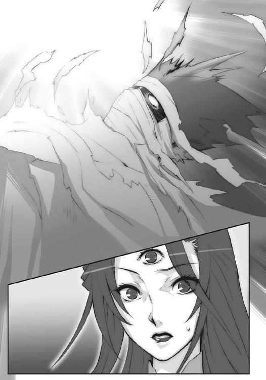
「そうか、これがおまえの、感じた──」
何処とも知れぬ、彼方へ。
蛇身の上では、新たな対峙が生じていた。
蛇身の突進の速さから後方へと流され、飛び移ったカムシン、ヴィルヘルミナ、レベッカの三人。その前に教授とドミノ、ロフォカレを守るように立つ三柱臣。変わらず首の部分で人壁を作るのは色付く影ら。そして先端部のシャナと悠二。
緊迫する事態の中、ベルペオルは代わらぬ挙措で、手に在る細い『タルタロス』、そこから零れ落ちて消える茜色の火の粉を見て、告げる。
「〝壊刃〟サブラクは、行ってしまったよ」
「そう、か」
シュドナイは短く言って天なき天を仰ぎ、すぐ槍を構え直した。とりあえずは、後方へ。
ヘカテーは特になにを感じる風もなく、前方の二人を見ながら、許可を求める。
「交戦の指示を、ベルペオル」
彼らの囲む中、
「ドォーミノォー！ 『朧天震』と『詣道』崩ぅーっ壊の同ぅー期データ採取はぁ！ 滞ぉーりなく進めていぃーるんでしょうねえ？ こぉーこっが一番重ぅーっ要なんですよぉー!?」
「はいでございますです！ ノイズもロスも想定範囲内！」
教授とドミノは相変わらず機器を弄り回し、
「崩れ逝く物、去り逝く者、惜しみ嘆きも今は措き、前へと逸る、此が旅路......」
ロフォカレは仰向けに寝転んでリュートをかき鳴らしていた。
その一団を遠く望む後方、
「ふう......なんとか、命拾いしたか」
「まあ、拾いはしたけど、すぐ転げ落ちる場所ではあるな」
片膝を突いて一息吐くレベッカにバラルが、
「いかにも、まだ気を抜くには早いのであります」
「徹底抗戦」
なんとか立って身構えるヴィルヘルミナとティアマトーが、
「ああ、そうですね。事ここに至っては」
「ふむ、結論としては、先と同じか。ただ、戦う──」
見た目には平然とするカムシンとベヘモットが、緩やかに戦いに備える。
高速で効果範囲を過ぎ去ったためか、両界の狭間という障害物で撹乱されたためか......それともサブラクが死んだためか、彼らを苦しめていた『スティグマータ』は、その威力を失っている。とはいえ、負わされた傷は深く、治癒を悠長に待ってくれる相手でもない。依然、危機的状況に変わりはなかった。
そして、先頭。
「カルメルさんにカムシンまで来てたのか。もう一人の知らない人も、強いんだろうな。気配で分かるよ。あの影たちもいるし、これはなかなか、片付けるのに骨が折れそうだ」
後ろを向いて、全ての光景を目に入れる悠二、
「いざとなれば、この蛇を輪切りにしてでも止める」
「それに〝探耽求究〟ら、守る者が在るだけ、貴様らの方が不利やもしれぬぞ」
ともに見て、銀の拘束を受けるシャナとアラストール、双方の間で、戦機が満ちてゆく。
悠二は〝銀〟の拘束が気休め程度のもの、シャナが大人しくしていたのは、自分との話を続けるためだったことを理解している。彼自身も、可能であればもう少し話していたいところだったが、フレイムヘイズ三人の登場で、その機運も尽きた。
悠二は、その名残惜しさから、わざと軽く肩を竦めて見せる。
「余の本体を斬るのは止めた方がいい。大きく跳ねでもしたら、皆して両界の狭間を漂うことになる......この本体以外は、ね。それに、守りについてはベルペオルがいるから心配ないよ」
一方で、語るべきことは語ってしまったような感覚もあった。
もう、あとは戦うしかない。
悠二の漂わせた、そんな躊躇を、シャナの号令が、
「後方の援護を！ 散れっ!!」
号令に衝かれ一斉に飛び立った色付く影らが、瞬時に吹き払った。
シャナ自身も気合一声、
「──はあっ!!」
全身から紅蓮の爆発を起こし、銀の拘束を粉々に打ち砕いた。
「シャナ！」
「悠二！」
求め合う叫びの交差が、蛇身上での戦闘再開を、告げた。
双方して、噛み合う。
中国西南部、山間の平野部。
異様な震動の影響を、最も大きく受けたのは、この決戦場だった。
それぞれ、［仮装舞踏会］の軍勢は期待の門扉、フレイムヘイズ兵団は不安の砲口、と見る物体『神門』を、常に頭上に頂いたまま、戦い続けてきたからである。
この、神を奥に秘めた黒い鏡を実際に目にしていない者らであれば、今蒙っている、体に影響のない、感覚だけの不気味な震動について、他に原因を探していたかもしれない。
しかし、決戦場に在る者らだけは全員、初めてである現象の原因を、良かれ悪しかれ、他に求めようがなかった。誰もが、こう思っていた。
（──創造神〝祭礼の蛇〟の帰還が、近い──）
盟主と仰ぐ神の帰還を前にした〝徒〟らの士気は、天井知らずに上昇している。多少視界が揺らごうが、なにをやっているのか分からなくなろうが、とにかく視界を過ぎる敵に襲い掛かる。それだけが存在意義であるかのように、ひたすら突進していた。
戦場に身を置く熱狂、『燎原』の加護による高揚感、一〝徒〟としての感激が、互いにあげる炎の中で、溶け合い、反応し、爆発する。勝利を目の前にした一軍の留まり得ない、鬼気迫る勢いが全軍を支配し、混乱すらも燃料の一つとして心身を熱していた。
対するフレイムヘイズ兵団も、このような状況下であればこそ、大崩れを起こさず、燃えつつも冷たく抗戦に努めている。流石に選りすぐられた猛者揃いだった。刃を鈍らせるだけの悲観を切り捨て、ただ生き残るため、眼前の戦いに専念しているのである。
特に〝燐子〟砲兵の総攻撃に対し、壁を作って三斉射までを耐え、その後方に新たな出城まで即座に築いたザムエルの底力と指揮統率振りは凄まじいの一言に尽きた。『燎原』によって強化されている〝徒〟らの攻勢を、現在までに五回は撃退している。
ハボリム配下の〝燐子〟砲兵殲滅後、空中から戦況を眺めていたゾフィーは、
（頼もしい）
と思いつつ、迫り来る、あるいは迫り来た危機の兆候も、同時に捉えていた。
互いに狂熱に駆られている、という状況は見た目こそ同じだったが、その根源は正反対である。〝徒〟は盟主の帰還という希望を前に進んでいるが、フレイムヘイズは決定的な敗北という絶望を後に踏みとどまっているに過ぎない。
（恐らくは、これが最後の力だ）
何度とない決定機の度に、敵の予想外な手立てに阻まれている、という事実は、兵団の猛者であっても例外なく、無意識下に不安として溜まり続けている。討ち手のメカニズムとして体力は回復しても、精神はそうはいかない。しかも今、敵の援軍が世界中から引き返してくるという、これまで見えなかっただけの劣勢を、ハボリム率いる援軍の出現によって思い知らされたところに、神の帰還を想起させる異常事態まで起きてしまった。
戦いへの対処で麻痺させている彼らの士気はいつしか、それら不安で膨らみきった風船となっていた。状況悪化の報、ハプニングの発生一つで破裂、崩壊してしまうだろう。
（なにより、この戦いは、今やっている戦いの勝敗が問題なんじゃない）
彼女らの本来の目的は、あくまで創造神復活の阻止であり、本拠地の前とはいえ局地戦の勝利を得ても仕様がないのだった。その局地戦の狙い......『星黎殿』を制圧目標としているのも、内部に復活の阻止、あるいは復活後の撃退に繋がるなにかを発見できるかもしれない、という曖昧な目論見があったからに過ぎない。
全ての戦いが、創造神が数千年を超えて復活するまで時があるのでは、飛び込んだ討ち手四者なら事態を打開できるのでは、という二つの楽観に拠って立っていたことを、ゾフィーは十分に了解していたはずだった。が、こうして揺れながら揺れていない異常現象、世界に影響を及ぼしかねない事態に面したことで、自身の選択にも、らしくない後悔の揺らぎが生じていた。
その選択を、最も辛い形で是正し得るかも知れない唯一の方法が、実はあった。
平野部での戦いが始まったとき、選択肢に含めて、危険性から断念した方法が。
彼女は、パートナーに重くも平淡な声をかける。
「タケミカヅチ氏」
数秒して、タケミカヅチも同様の声で、
「反対は、致しませんぞ、ゾフィー・サバリッシュ君」
問われたことの意味を尋ねず、答えた。
彼女も数秒、決意のため瞑目し、そこで迷いを振り捨てる。揺れる世界を確と捉えるように目を見開いて、後方の出城に在る副官へと声を届ける。
《フランソワ、空中で交戦している全部隊に、一時的でもいい、西側に滞空する敵陣容を薄くするよう言ってください》
《は、はっ、しかし、これは......えっ!?》
一瞬、今の異常事態に付いての質問かと勘違いしたフランソワは、すぐ総司令官の要請、その意図するところに気付いて、驚愕の声を返していた。
《まさか、サバリッシュ総司令官！》
《ね、狙いは分かるけど、本当にいいの!?》
グローガッハまで言う。
もちろん良いわけはなかったが、ゾフィーはその是非を今、彼らと論じる気にもなれなかった。だからただ、厳しく宣言する。
《ええ──これより私は、『神門』の破壊を試みます》
静かながら、まさに雷霆の響きを伴う、声で。
加えて念押しと、先の指示も繰り返す。
《だから、空中で交戦している全部隊に、一時的でもいい、西側に滞空する敵陣容を薄くするよう言ってください。分かりましたね？》
《......はぃ》
フランソワは消え入るような声で答え、遠話を切った。
誰にともなく頷いた命令者は、空に行き交う両軍の様を見やる。
「できますかな」
タケミカヅチが、決意を確認する最後の質問として尋ねた。現時点で分かるわけのないできるできないを話し合ったところで意味などない。にも拘らず尋ねたのは、彼の未練とでもいうべき感情に拠るものだった。
ゾフィーも当然、未練は持っていた。
創造神復活阻止のため『神門』へと突入した四人のフレイムヘイズらは、いずれも彼女の友人である。三人は数百年来の戦友であり、一人は短期間ながら、心身の幼さを危ぶんで教えを授けたこともある、愛らしい少女だった。未練がないわけがない。
が、それでも彼女は、一言で確認を終える。
「やらねばなりません」
この状況が、本当に創造神の復活によるものだとしたら、『神門』へと突入した四人が無事である可能性は低い。そうでなくとも、試みは半ば失敗したといって良い。創造神がこの世に現出する大事と天秤にかけるわけには──フレイムヘイズとして──断じていかなかった。
また、両界の狭間と繋がる歪みの集積体に対する攻撃が及ぼす悪影響も、実際にそれが『神門』の彼方から表れている今となっては、程度の大小でしかない。悪影響の根源がこの世に帰ってくることを思えば、危険性を覚悟で『神門』破壊に乗り出すしかなかった。
つらつら、決意を補強する理屈を心中で並べる間に、
「......」
フランソワの指示通り、フレイムヘイズ側の攻撃が敢行され、『神門』西側の空域が混戦となる。双方、絶えず存在を揺り動かされつつも懸命に噛み合っていた。
「......何人にも哀れまれず、罪を犯して省みず、存在もならぬ無に堕ちる我らに......」
常は自分に願っている声が、どこか懺悔の色を匂わせる。一方で、目は油断なく戦況を見つめ、自分が飛び立つべき時を計る。体の縁には、既に紫電が弾けていた。
「......せめて勝利よ輝け......アーメン・ハレルヤ・この私」
言って両掌を胸の前で組む。その瞬間、西側で攻勢に出ていたフレイムヘイズらが、一気に引いた。生まれたのは僅かな、しかし彼女が駆け抜けるには十分な、空の道。
「......!!」
空中に雷鳴が爆発した。
ゾフィーは稲妻となって飛ぶ。短距離、一気に駆け抜けるだけの力を全身から放出し、最も心重く、最も威力高い、必壊の蹴りを繰り出すべく、体勢を反転させ、裾を絞る。
「──」
見る見る近づく、宙に浮く黒い鏡。
その狙いである銀色の縁を、声で壊さんとするかのようにゾフィーは叫んだ。
「──だぁあらっしゃああああ──っ!!」
紫電の膨れ上がってゆく大きさのまま速さを増し、急ぎ阻止しようとする〝徒〟らを途上で焼き払い、両足の落雷蹴りが命中する──真際、
渦巻く粒子の壁が、阻んだ。
突如現れた、広大な円形の壁へと叩き込まれた紫電が、虚しく虚空を貫き照らし、また地を突き刺す。絶大な力の炸裂は、しかし一片たりと銀の枠に届いていなかった。
想定していたあらゆる状況とも違う結果に、ゾフィーは愕然となる。
「な──!?」
この力によって攻撃が阻まれることは、彼女だけでなく、空の道を切り開いたフレイムヘイズら、切り開かれた〝徒〟ら、凄まじい雷鳴に思わず頭上を見上げた地上、両陣営の将兵ら、いずれもが、全く思いもしていなかった。
この地に在る彼我、誰一人として知らない者のない、力。
臙脂色の粒子からなる嵐、鉄壁を誇る、その自在法の名は──『マグネシア』。
ゾフィーは、最悪の意味での戦慄に襲われていた。
（いけ、ない──!!）
自身の攻撃が阻まれたことに対するものではない。
一旦は討滅されたと思われていた『星黎殿』の守護者──〝嵐蹄〟フェコルー健在という事実が、なによりも最悪なのだった。隠蔽の殻『秘匿の聖室』が破られた以上、また『星黎殿』が墜落した状況から考えて、明らかに万全ではないのだろう。しかし、その討滅から健在へと逆転した事実は、双方にとって士気を劇的に変化させる材料となる。
各所で、鉄壁の守護者の面目躍如たる光景に、〝徒〟たちの快哉が爆発していた。
「ヤッハァ──!! 〝嵐蹄〟様だあ！」「やられたなんて、やっぱり間違いだったんだ！」「フェコルー様の『マグネシア』があれば、勇気百倍よ！」「我らが〝嵐蹄〟此処に在り!!」
対するフレイムヘイズらは、明らかな消沈と動揺に見舞われていた。
「死んだんじゃ、なかったのか」「サ、サバリッシュ総司令官の蹴りが......」「くそっ、なんで今頃!?」「なんてこった、こんなときに奴が」「まさか、これから援護に出てくるんじゃ」
誰が何をフォローすることも不可能な、その〝紅世の王〟の復活劇は、彼らの抗戦を支えていた最後の力......気概を保ち続けていた精神を、遂に砕いた。ゾフィーは知らず、自らの手で不安の風船を一突きしてしまったのだった。
そして要塞の内、
「ふ、う......」
尖塔の屋根に在った一人の男は、ゆっくりと目を閉じる。
黒い蛇は、砂漠に至っている。
その上で戦う者らは、気付いていた。
蛇が、ほどなく『神門』に辿り着くことを。
この管のような異界『詣道』の文明を遡った先端、入り口に当たる部分こそが、今広がっている、一面砂と疎らな岩のみ、という不毛の砂漠なのである。
互いへの決定打は、既に状況から在り得ない。そうと分かってなお戦っているのは、つまるところ互いの存在を許容できないフレイムヘイズと〝徒〟、根源的な在り様の故だった。
呉越同舟にすらならない、同じ船に乗る者同士、戦う。
フレイムヘイズの側は、甚だ不利だった。
なんといっても後方の三者、カムシンとヴィルヘルミナ、レベッカは負傷した身である。それが、三柱臣という最悪の敵を前に粘ることができているのは、倒されても倒されても復活する太古の討ち手、色付く影らのフォローを受けているためだった。
対する三柱臣も、攻めきることができない。
彼らは眷属たるがゆえに、創造神の本体を傷付けることのないよう立ち回らざるを得なかったのである。傷ついているとはいえ、色付く影とともに死なない戦いに専念する指折りの討ち手ら三人を相手に、そのハンデは馬鹿にできない大きさと言えた。
カムシンとヴィルヘルミナは剛槍『神鉄如意』をあくまで槍として振るうシュドナイの正面に立ちはだかって力と技の両面で辛うじて伍し、レベッカはヘカテーの光弾『星』を、爆発力を抑え熱量を高めた光球で迎撃する。ベルペオルは直接の参戦はせず、鉤鎖『タルタロス』で囲い守る教授らの傍らに在り、ときおり襲い来る色付く影を、現した使い捨ての〝燐子〟やヘカテーの助力を受け、叩き落としていた。
それらの交錯と無関係な戦いが、蛇身の先端にある。
シャナはあくまで『吸血鬼』との鍔迫り合いを避け、『贄殿遮那』で弾くように打ち合い、相手に火除けの指輪『アズュール』の在ることから、炎も使わない。蛇本体への刺激になるような大威力の力も当然のことながら封印し、ただ持ち前の身体能力だけで挑んでいた。
悠二も、剣技の未熟から怪力で振り回すだけになりがちな『吸血鬼』を牽制に使い、竜尾の打撃を主体に戦っていた。銀の影は、素早いシャナが相手では、真正直に出したところで通用しない。ましてや一度、不意打ちに使っている。出し所は慎重に選ぶ必要があった。
つまり、両者は変わらず、真っ向からの格闘によって戦っている。
大剣が斬っては大太刀で弾き、竜尾が振るわれては身をかわし、優位な立ち位置を取ろうと駆けては跳ぶ。鬩ぎ合いは短くも濃密に、割って入るものとてない舞踏のように、続いた。
それを終らせたのは、黒い蛇。
黒い蛇にそうさせたものは、道。
行く先に『神門』が、見えていた。
『詣道』を辿り、遡る旅路が、終わる。
黒い蛇は、歓喜に咆哮した。
戦う二人を、頭上に乗せたまま。
「!?」
シャナは上に跳ね飛ばされ、
「!!」
悠二は思わず片膝を着いた。
いつかと同じ、二人は上下に分かれ、
そして、また同じ、剣と剣で交差する。
シャナは瞬間的に紅蓮の双翼を噴射して、
悠二は手にある大剣を渾身の力で振り上げ、
刃は触れ合わず、一つと一つ、斬る音が重なる。
「ぅぐっ！」
シャナは脇腹を一薙ぎされ──血飛沫が蛇の上に散り、紅蓮に燃え果てた。
「ぐあっ！」
悠二は額を縦に一打ちされ──乱れた前髪に血と炎が混じり、黒く弾けた。
それぞれ、辛うじて深手とならない浅さで身をかわし、しかしシャナは華麗な足捌きで、悠二は地への重い踏み切りで、最低限の間だけを置き、再び挑みかかる。
このときシャナは、今までと僅か異なる手法を取っていた。悠二の『吸血鬼』と同じ、片手で『贄殿遮那』を握るという、彼女が常は取らない手法を。真正面から接近し、
（悠二!!）
求める心のまま、一歩の勇気を振り絞る。
「っ!?」
悠二は、少女の不用意と見える接近が、大剣を振るう前に、その軌道の内側へと潜り込むための速攻であることを察した。咄嗟に両腕を閉じる形で彼女を捕らえようとする。
「ぬう！」
「はっ！」
シャナも、これを食い止めようと、素早く両腕を広げた。
悠二が、シャナが、掴み合った──結果、二人は奇妙な体勢となる。
シャナの左手が『吸血鬼』を握る悠二の右手首を掴み、
悠二の左手が『贄殿遮那』を握るシャナの右手首を掴む、奇妙な体勢に。
両者、相手の腕を振り解かんと、相手に腕を振り解かれまいと、力を入れる。
顔と顔が、鍔迫り合いよりなお、近づいた。抱き合うことを欲するように、あるいは拒むように、二人は自分の腕へとあらん限りの力を込める。込めれば込めるほど、近づいた。
その、近くに在って壮絶な怪力を発揮する悠二へと、シャナは懸命に堪えながら、
「私は、悠二を倒す。悠二が折れないのなら、絶対に。創造神が阻むのなら、創造神ごと。その上で、私は悠二と一緒に、道を探す」
断固と、しかし心を込めて、愛する少年へと打倒の宣言をしていた。
悠二は近くに在って遠い少女に、前のめりに怪力を押し込みつつも、切なく返す。
「シャナ、余が大命の宣布を聞いてなお、それが可能だと思うのならば、また挑んで来るがいい。だが、今日のところは......刻限だ」
腕同様に組み合っていた目線が逸れ、彼らの横、蛇身の驀進する先を射止めた。もはや『神門』は、決まりきった別れのときを示す出口は、至近に迫っている。
シャナもそれを認め、また悠二を見つめた。
悠二も視線を合わせて、シャナを見つめた。
どちらからともなく力を抜いて、組み合ったまま、向き合う。
蛇身が世界を打ち砕き、風を切って進み行く音が、耳に痛い。
その中、シャナが、のしかかるような体勢の少年に、小さく。
「千草が言ってた。口と口でするキスは、誓いなんだって」
「えっ......？」
思わぬ名前、思わぬ話題に驚いた悠二の頬に、不意に柔らかなものが微か、触れた。
気付けば、シャナの顔が、互いの吐息すらも感じるほどの至近に、在ることを知る。
今触れた柔らかなものは──唇だった。
殺気とは正反対の気持ち、それゆえに、反応できなかった。
「シャ、ナ？」
悠二は惚けて、しかして両の手は離さずに、見た。
身長差から見上げ返して、シャナは静かに告げる。
「だから、今のキスは、私から悠二への一方的な──誓い」
悠二は、思っていた。
今ここで、自分からもそうできればどれほどいいか、と。
思って、しかし世の全てに勝るその誘惑を、撥ね退けた。
代わりに、少年として断言する。
「できるわけが、ないんだ」
「できるできない、じゃない。ただ私は、する。だからこその、誓い」
明快に答えたシャナの傍らに突如、色付く影が降り立つ。
「！」
「！」
二人が思わず手を離した瞬間、影はシャナを抱え、蛇身から飛び降りた。
落下して数秒、再び蛇身の傍らへと、上昇する。
背中にシャナを乗せる、大きな鳥に姿を変えて。
さらに三羽、他三人のフレイムヘイズらを乗せた鳥が、また別の鳥が幾羽も追いつき、黒い蛇よりさらに早く『詣道』を先駆け、飛んでいった。
この、三度の別れを見送った悠二は、
「......」
飛び去る間際にシャナと目を合わせて、それをしまうように目を閉じた。
耽るのも束の間、後ろに眷属らが立つのを感じ、目を見開く。
そこにはもう、少女を想う少年の姿は、なかった。
在るものは、復活を目前とした神のみ。
「遂に、来た」
大きすぎて潰れたと聞こえる、重々しい喜悦が、述懐には匂っていた。
前を向き、迫る『神門』を、眷属らとともに眺め、宣言する。
「還幸ここに、成る」
眷属らを跪かせた少年の姿を先に立て、蛇身は潜る。
数千年の悲願たる、解放と自由の待つ扉を。
その先に広がるのは、彼の世界──
シャナらを乗せ、また周囲を飛ぶ鳥たちは『神門』の寸前で、人の姿を取り戻した。そうして、飛ぶ速さを殺さぬまま、四人を放り出した。誰も彼も、放り出す者らの手を取り、背を押して。なにかを渡すように、託すように、すぐ背後から迫ってくる黒い蛇を後ろに。
シャナも、ヴィルヘルミナも、レベッカも、見送ることしかできなかった。
太古のフレイムヘイズら、知友だったかもしれない色付く影の一人が、かつて交わした別れの挨拶、その仕草を取っているのを見て、カムシンは密か微かに、悲痛の表情を作った。
そして、四人の視界から彼らが突然消え、黒々とした平面だけが残った。
見覚えの在るそれは、『神門』──今まさに神が還る、巨大な扉。
四人の周囲に広がっているのは、空で噛み合う、戦場。
眼下に広がっているのも、大地で相打つ、戦場。
全ての光景が揺れ、とりどり輝いていた。
はた、と。
世界を人知れず揺らしていた『朧天震』が、止まる。
代わりに戻ったものは──平穏な世界と、不気味な静けさ。
東西で戦っていたフレイムヘイズも〝徒〟も、思わず天を仰いだ。
まさにその瞬間、決戦場の真上に浮かんでいた『神門』が、飛び散った。
鏡の縁と見えた銀色の輪が、細かな部品に分かれ、星雲のように、飛び散った。
星はどこまでも細かく砕け、どこまでも多く分かれ、一天を銀の波として渡ってゆく。
銀の波は凄まじい速さで、文字通りに波及してゆき、
地球の形に沿う波紋として広がり続け、やがて縮む。
そうして、地球の反対側の天空で、一点へと集約され、消えた。
己が帰還を、地球上に在る全ての者に知らしめる、それは宣示。
あるいは、真正の神による、宣戦布告。
と、前奏を終えた黒い鏡に、罅が入る。
否、黒い鏡の縁から、罅が外に広がっていた。
いつしか地平も薄白く明けつつある、夜を逐う空を、
全てを塗り潰す黒い罅が、大きく裂くように、伸びてゆく。
どこまでも伸びて広がる罅に砕けた、空の欠片が、舞って消える。
決戦場に在る者が、鏡の内から飛び出た者が、息を呑んで見つめる先で、
罅そのものが微細に砕け、中から、黒い蛇身が出現した。
黎明を掻いてのたうつ、あまりにも巨大なそれこそ、誰もが知る──神。
天地を鈍く震わし、見る者に等しく畏怖と崇敬を抱かしめる──黒い神。
創造神──〝祭礼の蛇〟。
忘我の静寂を突く、
神の咆哮が、
「──オオオオオオオオオオオオオオオオオオオオオオオオオオオオオオオオオ──ッ!!」
轟く。
荒涼たる山間に広がる戦場、両陣営の間で、真逆の感情が誘発された。
心身に溢れ出た歓喜に躍り上がる［仮装舞踏会］の大喊声。
古来より、この世の日に陰に跋扈してきた客人ら、その誰もが、思っていた。
これは、世界の変革を呼ぶ、大いなる福音だ、と。
魂の底からの動揺に浮き足立つフレイムヘイズ兵団の恐慌。
古来より、世界のバランスを守ってきた討ち手ら、その誰もが、思っていた。
これは、壊れ始めた世界の、最初の断末魔だ、と。
そして、ただ一人、
咆哮を、誰とも違う合図として聞く、少女がいた。
フレイムヘイズ『炎髪灼眼の討ち手』シャナだけが、思っていた。
これは、次なる戦いの始まりを告げる号砲だ、と。
エピローグ
初めて、見た。あれほどの大きさを。
抗することなど不可能だと分かる、大きさを。
圧倒的な力を前にした者の、どうしようもない感覚を。
「私は貴方が、貴方という存在が、羨ましい」
あれが、あの大きさの前に抱く畏れが、お前の抱いていた気持ちだったのか。
この、なにをもってしても埋め難い畏れを前に、お前は足掻いていたのか。
俺は、お前をあんなどうしようもない気持ちにさせてしまっていたのか。
「私に在るものは、あまりに小さくささやかな......」
俺はやっと、お前が俺に対して抱いた気持ちを、知ることができた。
あんな気持ちを抱いたまま、力を持つ者の前に立つことなど、できはしない。
ましてや、お前の足掻きを理解できなかった、する気もなかった俺と、共には居れまい。
「無関心、なのですね......」
お前が去ったことで、俺はようやく、お前について思いを巡らし。
俺の前に立つために、力を欲し戦ったお前は、死んだ。
まったく、なんという馬鹿な俺たちだろう。
「私は、きっと......なってみせる」
だが俺は、ようやく感じることができた。ようやく知ることができた。
この世には、俺などが及びもつかない、大きな者が存在することを。
俺も、お前も、そいつから見れば、大して変わらぬ存在なのだと。
「そのときは、どんな形でもいい......私を見て、笑って、迎えてください」
お前が俺に及ばぬことを、怒ることはない。
お前が小さなことを、恨むこともない。
だから笑ってくれ──愛しい蝶よ。
一つの炎が狭間に消え、一つの炎が狭間より出でた。
出でた炎は、どこまでも激しく、世界の理に挑む。
世界は、己を燃やす激しい炎を、ただ内に宿す。
あとがき
はじめての方、はじめまして。久しぶりの方、お久しぶりです。
高橋弥七郎です。
また皆様のお目にかかることができました。ありがたいことです。
さて本作は、痛快娯楽アクション小説です。今回は、神の復活という一大事を介して、シャナたちと両陣営の戦いが描かれます。次回は、過去の出来事を絡めた大命宣布が行われます。
テーマは、描写的には「欲していたもの」、内容的には「きめる」です。幾人かが、自分の望みに対する結論を出し、そしてまた幾人かが、それを抱いて次の場所へと進んでゆきます。
担当の三木さんは、寛容な人です。毎日編集部で原稿を書くような追い込みになっても、生温かく見守ってくれます。今回も、その手のシーン存続を賭け、毒手掠らす死合い（以下略）。
挿絵のいとうのいぢさんは、熱い絵を描かれる方です。前巻のカラー口絵で久方ぶりにお願いした、豪勢極まる両陣営勢揃いの図には、心からの感嘆と歓喜を抱かされました。この度も拙作への甚大なる御助力をいただけたことに、深く深く感謝いたします。
県・地名五十音順に、愛知のＫ柳さん、Ｗ田さん、青森のＳ藤さん、Ｓ守さん、お名前不明の方、秋田のＩ上さん、茨城のＫ木さん、愛媛のＩ尾さん、大分のＭ永さん、Ｔ島さん、大阪のＵ田さん、Ｙ田さん（お見事です）、岡山のＭ野さん、鹿児島のＳ冥さん、神奈川のＫ藤さん、岐阜のＫ藤（ヒロキ）さん、京都のＨ川さん、滋賀のＳ摩さん、島根のＹ井さん、台湾のＫ尚さん（色々ありがとうございます）、千葉のＭ原さん、Ｓ藤さん、東京のＨ郷さん、富山のＹ山さん、長崎のＳ藤さん、兵庫のＭ下さん、Ｏ田さん、福岡のＫ斐さん（そのままの名です）、Ｋ野さん、香港のＰさん（色々ありがとうございます）、宮城のＭ浦さん（ありがとうございます）、Ｎ村さん、Ｗ邊さん、山梨のＳ本さん、和歌山のＳ路さん、いつも送ってくださる方、初めて送ってくださった方、いずれも大変励みにさせていただいております。どうもありがとうございます。アルファベット一文字は苗字一文字の方で、県・地が同じ場合はアルファベット順になっています。
年賀状も頂きました。遅ればせながら、この場を借りて御礼申し上げます。
ところで先月、いとうのいぢさん三冊目の画集「蒼炎」（恒例の、頂いたご要望に沿って書いた短編も収録されております）が、また今月末、笹倉綾人さんの漫画版「灼眼のシャナ」第７巻が、それぞれ発売の運びと相成っております。宜しければ、そちらもご覧ください。
それでは、今回はこのあたりで。
この本を手に取ってくれた読者の皆様に、無上の感謝を、変わらず。
また皆様のお目にかかれる日がありますように。
二〇〇九年六月 高橋弥七郎
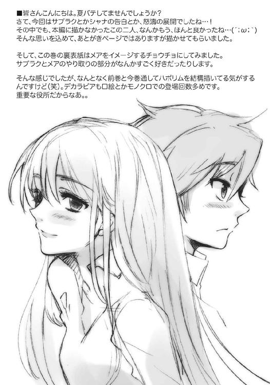
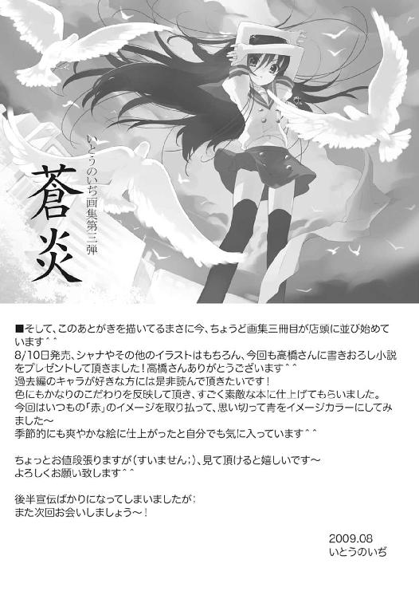
高橋弥七郎
東京に居すぎてアイデンティティの揺らぐ大阪人。豆知識その19ー。14巻くらいの初版まで、表紙をめくったあらすじ下の角に、点線で囲った赤い電撃マークが付いてたんやけど、あれって実は単なるデザインで、切り取って葉書に貼る応募券でもなんでもないんやってー。
木陰で涼む作者
いとうのいぢ
最近お買い物中毒の私。特に靴が良い。なんであんなに可愛い形をしているのだろう。秋はブーツもパンプスもやばいくらい好みのものが出そろうので危険です。
電撃文庫
灼眼のシャナ
高橋弥七郎
二〇十二年八月十日 配信
発行者 塚田正晃
発行所 株式会社アスキー・メディアワークス
〒一〇二−八五八四 東京都千代田区富士見一−八−十九
(C)2009 YASHICHIRO TAKAHASI／ASCII MEDIA WORKS
本書（電子版）に掲載されているコンテンツ（ソフトウェア／プログラム／データ／情報を含む）の著作権およびその他の権利は、すべて株式会社アスキー・メディアワークスおよび正当な権利を有する第三者に帰属しています。
法律の定めがある場合または権利者の明示的な承諾がある場合を除き、これらのコンテンツを複製・転載、改変・編集、翻案・翻訳、放送・出版、公衆送信（送信可能化を含む）・再配信、販売・頒布、貸与等に使用することはできません。